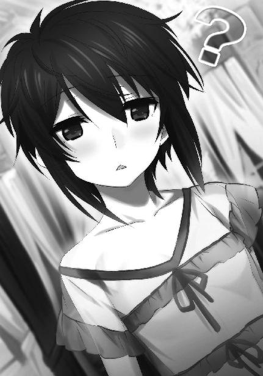

| 魔法科高校の劣等生(10) 来訪者編〈中〉 (電撃文庫) | |
| 佐島 勤 | |
| (2016) | |
本書（電子版）に掲載されているコンテンツ（ソフトウェア／プログラム／データ／情報を含む）の著作権およびその他の権利は、すべて株式会社ＫＡＤＯＫＡＷＡおよび正当な権利を有する第三者に帰属しています。
法律の定めがある場合または権利者の明示的な承諾がある場合を除き、これらのコンテンツを複製・転載、改変・編集、翻案・翻訳、放送・出版、公衆送信（送信可能化を含む）・再配信、販売・頒布、貸与等に使用することはできません。

［８］
高エネルギープラズマとダイヤモンドダストが乱舞した夜の、明くる朝。
日曜日にも拘わらず達也は学校に来ていた。その隣には当然のように深雪が寄り添っている。
日曜日だからといって学校が閉まっているわけではないのは、今も昔も変わらない。主としてクラブ活動に勤しむ生徒の為に、その他、特に図書館や実験室や演習室の使用許可を受けた生徒の為に、日曜日も学校の門は開いている。
といっても、二人が向かう先は部室でもグラウンドでも図書館でも実験室でもない。
達也と深雪が足を運んだのは生徒会室だった。
「まだ、どなたもいらしてませんね」
深雪の言うとおり、生徒会室は無人だった。妹の呟きを聞いて、何がおかしかったのか達也は声に出さず笑いを漏らした。
「呼び出した人物が最後に登場するのはフィクションのお約束だが、現実はそういうわけにも行かないだろうな」
メタなツッコミが入りそうなセリフを冗談っぽく口にする。深雪が「そうですね」と言って小さく笑ったのは、義理というかお付き合いというか、多分そんなものだったに違いない。
まあ......達也自身も、つまらない冗談だったという自覚はある。彼が笑ったのは、これまで呼び出される一方だった自分が今日は呼び出す側になっている、という事実がおかしかったからで、フィクション云々は実の所どうでも良いことだった。
その反面、彼が招いたからといって特に準備することはない。それに、然程待つ必要も無かった。
「おはよう、達也くん、深雪」
待ち人の片方は、すぐと言って良いタイミングで現れた。
「あら、エリカ。吉田くんと一緒に来たの？」
「偶然よ！ ......そこはかとない悪意を感じるのはあたしの気の所為？」
「気の所為よ」
女子高校生同士の気が置けない（？）会話の一方で、
「待たせちゃったかな？」
「いや、こっちも来たばかりだ。悪いな、日曜に」
男子高校生同士はお決まりの社交辞令を交換していた。
「何かあたしとミキの扱いが違う......。まあ、いいや。それで今日はどうしたの？ 休みの日に達也くんがあたしたちを呼び出すなんて珍しいじゃない」
確かに珍しいことだった。時々は高校生らしく一緒に遊んだりもしているので休日に会うのが珍しくはないが、そういう時、達也は常に誘われる側だった。
珍しいといえば、エリカの視線が落ち着き無くさまよっているのは壁一面に情報機器が埋め込まれている生徒会室の内装が珍しいからだろう。その様子を見て、彼女がこの部屋に入るのは初めてだったかもしれないな、と達也は思った。
「もう少し待ってくれ。話はメンバーが揃ってからにしたい」
「他に誰か来るのかい？」
「ああ、そろそろ来るはずなんだが」
幹比古の質問に、達也が間接的な肯定を返す。それを待ち構えていたようにドアがノックされる音が聞こえた。彼女はおそらく、在校生の中で最もこの部屋に馴染んでいる生徒会室の主みたいな存在だからノック抜きで入って来ても不思議は無いような気もしたが、意外と（？）律儀で常識人だった、ということだろう。インターホンを使わず扉をノックしたことについては彼女の「常識」に疑問を覚えないでもなかったが、達也の方もリモコンを使わずに自分でドアを開けたのだから、これはどっちもどっちである。
「お呼びだてしてすみません」
何故わざわざ出迎えを、という疑問を幹比古が懐いたとしても、ドアが開いた直後に氷解したことだろう。やって来たのは真由美と克人の二人だった。
「吉田に、千葉？ お前たちも司波に呼ばれたのか？」
単純に驚いたというだけでない動揺を見せた真由美に代わって、克人が素朴な疑問を呈する。
「あっ、はい」
やはり咄嗟に言葉を失ったエリカに代わり、幹比古がごく短い答えを返す。
「では、始めましょうか」
その答えに被せるようにして、達也が着席を促した。
「最初に説明してもらえる？ どうしてあたしたちが七草先輩たちと一緒に呼ばれたのか」
「同感ね。私もまずそこから説明して欲しいわ」
対人感情には鏡のような性質がある。好意は好意を呼び、悪意は悪意で返され、敵意は敵意を呼ぶ。そんな感情の反射動作を利害計算でコントロールするのが大人の分別というヤツなのだが、一致させる利害が見えなければ分別を働かせようという気持ちが起こらない。
真由美の態度は、典型的な感情の反射動作だった。彼女自身にはエリカに対して含むところは無い、というか、エリカのことを大して意識もしていなかったはずだ。それなのに、エリカの見せる敵意に引きずられている。その姿は「自分より二つも年上なのだからもう少し理性的に振る舞って欲しいものだ」と達也に思わせるものだった。
「我々が追いかけている吸血鬼の捕獲について、お知らせしたいことがありましたので」
もっとも、対立したままでも達也は別に構わないのだ。彼は無駄な仲裁を口にせず、さっさと用件を済ませることにした。
「聞かせてもらおう」
真っ先に反応したのは克人だった。克人以外反応しなかった、と言う方が正確かもしれない。
「昨晩、三時間おきに特定パターンの電波を発信する合成分子機械の発信機を吸血鬼に撃ち込みました」
本当は麻酔が効かなかった場合の保険として麻酔弾の中に混ぜておいたのだが、とんだ計算違いの結果、保険に頼らなければならなくなった、という次第だった。とはいっても、彼一人では有効活用できない保険なのだが。
「発信機の寿命は最長で三日間。電波の出力は微弱ですが、街路カメラに併設した違法電波取締用の傍受アンテナなら受信可能です」
今度は全員が反応した。反応せずにいられなかった、と言うべきか。
「チョッと待って、達也くん。昨晩？ 何処で？」
真由美が目を丸くして、
「どうやって見つけたのよ？」
エリカが口惜しさの裏返しからか、責めるように、
「合成分子機械って、何処からそんな物を......」
幹比古が呆れ声を交えて、それぞれ訊ねる。
訊きたくなるのももっともな質問ばかりだ、と達也も思ったが、経緯とか背景とかを説明する予定はなかった。それを説明し始めると部外秘である独立魔装大隊の技術力の一端や、一応秘密にしているリーナの正体まで話さなければならなくなるからだ。
「これが電波の周波数とパターンです」
そう言って、達也が四人の前に一枚ずつ、カードを滑らせる。
「先輩のチームもエリカのチームも傍受アンテナを利用できるはずですね？」
「......これで居場所を突き止めろ、ってこと？」
真由美の問い掛けに、達也が無言で頷く。
「......何故、これを私たちに？」
エリカが私たち、と言っているのは何故七草・十文字のチームと千葉一門のチームの両方に、という意味で、それを誤解するほど達也は鈍くなかった。だからといって、どうしろこうしろと指図するつもりも彼には無かった。ただこれまでに判明したことを伝えるのが、この場に四人を集めた達也の目的だったので、構わず次の情報を開陳する。
「我々が追いかけている吸血鬼の正体ですが、ＵＳＮＡ軍から脱走した魔法師のようです」
四人の顔に「まさか」という表情と「なるほど」という表情が同時に浮かんだ。
彼女たちの探索を妨害していた未知の勢力。あの単体・組織両面におけるレベルの高さは、単なる非合法組織に持ち得るものではないと真由美もエリカも感じていた。その正体が脱走兵を追うＵＳＮＡの魔法師部隊だったというなら、実に納得のできる話だ。
「それも単独ではありませんね。脱走者は少なくとも二人以上、もしかしたら十人前後になるかもしれません」
「スターズから十人も脱走者が出たの？」
「いや、エリカ。ＵＳＮＡ軍に所属していたからといって、スターズに所属していたとは限らないんだぞ」
「えっ、そうなの？」
「七草......スターズはＵＳＮＡ軍に所属する魔法師の中から特に魔法戦闘力に優れた者が選抜されて出来ている部隊だ。当然、ＵＳＮＡ軍の中にはスターズに所属していない魔法師もいる」
エリカの誤解を達也が、真由美の誤解を克人が正した。意外と息の合ったところ（？）を見せた美少女二人だったが、それを指摘するとまたヘソを曲げそうだ。余計なことは口にしないが吉だろうと達也は判断した。
「──例え相手がスターズのメンバーでなくても、戦闘訓練を受け、その上に吸血鬼としての異能を身につけた相手です。甘い相手じゃないでしょうね」
「そうだな。魔物の力を度外視しても、油断ならぬ相手だ」
克人が気持ちを引き締めるように重々しく呟いた。
「しかし、スターズ所属の魔法師ではなくても、ＵＳＮＡ軍の所属であることに違いはありませんよね......。軍属の魔法師は何処の国でも厳重に管理されているものだと思っていましたが、ＵＳＮＡの軍紀が弛んでいるんでしょうか」
幹比古の発言はこの場の話題に直接関係の無いものだった。だがこれについては達也も思うところがあったのだろう。「話し合い」を本筋に戻すのではなく、むしろ積極的に提示された疑問に答えた。
「いや、それはむしろ逆だろう」
「逆？」
「魔法師に対する軍の締め付けを上回る程、パラサイトの影響力が強かった、ということじゃないか。パラサイトは人間を変質させるのだろう？ その変化が肉体だけでなく精神にも及ぶのであれば、寄生されたことで価値観が変わっても不思議はない」
「それは......そうだね。じゃあ、パラサイトは何の為に脱走したんだろう？」
「軍に居続けることが無意味に思えたのか、それとも軍に所属していては成し遂げられない目的があるのか。それはパラサイトを捕まえて訊いてみなければ分からない」
「目的か......。パラサイトに限らず魔物の目的は、飢えを満たすか仲間を殖やすかが相場なんだけど、今は気にしても仕方ないか。あれこれ考えても推測でしかない。それより、軍紀が弛んでいるんじゃなかったら、そっちの方が事態は深刻だね」
「ああ。軍紀が保たれている中を脱走してきたということだからな」
「......それで結局、どうしろって言うのよ」
達也と幹比古が脇道で盛り上がっているところに、ふて腐れた声で口を挿んできたのはエリカだった。見れば真由美もうんざりした顔をしている。
「どうしろこうしろと言うつもりはないが」
脱線を咎められた達也は気まずい表情一つ見せず、咳払いをすることも無く、当たり前のことを当たり前に告げる口調で即答した。
その回答に、「えっ？」という表情を浮かべたのはエリカだけではなかった。
「友人が痛い目に遭わせられたんだから、放っておくつもりは無い。しかし同時に、自分の手で思い知らせてやることに拘るつもりも無いな。公安や警視庁で対処するなら余計な手出しをするつもりは無いし、師族会議が責任を持って処分するというならそれに文句は無い。もちろん、千葉家が単独で討伐しても一向に構わない」
既に立ち上がっていた達也は、そう言ってテーブルを離れた。
「ご足労いただいて申し訳ありませんでした。物が物ですので、直接お渡しした方が良いと思いまして」
「いや、構わない。ご苦労だったな」
何か言いたげに口を開きかけた真由美の機先を制して、克人が労いの言葉を掛けた。
「せっかくこうして顔を合わせたのだから、我々は少し話をしてから帰ることにしよう」
「そうですか。それでは、戸締まりをお任せしても良いですか」
「任された」
達也は克人に一礼し、深雪に目配せしてこの場を去った。
幹比古が縋り付くような眼差しを向けて来ていたのは、自分の気の所為として処理した。
◇ ◇ ◇
達也が学校を後にした頃。
「リーナ、いい加減に起きてください！」
同居人にどやしつけられて、リーナはようやくベッドから這い出していた。
力尽くで布団をはぎ取られた為に仕方なく起きたのが十分前。ダイニングテーブルの前に座ったリーナは、まだパジャマのままだった。
「まったく......いくら日曜日だからって、だらしないですよ」
呆れ顔のシルヴィアがリーナの前に蜂蜜入りホットミルクのカップを置いた。おぼつかない手つきでリーナが少しずつカップの中身を口にする。ハニーミルクを飲み干してホウッと息をつき、リーナはようやく意識を覚醒させた。
「ごちそうさまでした。......シルヴィ、本部から何か言って来ていませんか」
口調はすっかりスターズ総隊長のものだ。──ふわふわした厚手のパジャマにブラシも当てていない頭では威厳も何もあったものではないが。もっとも、こんなだらしない格好でも見苦しくならないのだから「絶世の美少女」というのは大したものである。シルヴィアが苦笑を浮かべ掛けただけで結局、何も言わなかったのも「これはこれでありだ」と思ったからに違いなかった。
「今のところは、まだ何も。ですが、何のお咎めも無く済むとは思えませんね......」
「シルヴィもそう思いますか......」
シルヴィアの返答を聞いて、リーナはがっくり項垂れ両手で頭を抱えた。その姿は年相応の頼りないもので、シルヴィアは追い打ちになると知りつつ声を掛けずにはいられなかった。
「リーナ、昨夜は一体何があったんです？ いくら衛星級とはいえスターズのコード持ちが一度に四人も無力化されるなんて......。内二人は内臓に至る切創と、脳挫傷及び頸椎捻挫。任務復帰の目処が立たない重傷じゃないですか」
「うううっ......」
「その上リーナまで三時間以上も交信途絶、行方不明だなんて......」
「ううううっ......」
シルヴィアにそんなつもりは無かったのだろうが、質問の内容がリーナの失態を追求するものとなってしまっている。
「もしかして......負けたんですか？」
それが最後の一太刀となった。両手で頭を抱えて唸っていたリーナがいきなりテーブルに突っ伏した。その勢いたるや、意図せず止めを刺したシルヴィアがビクッと身を引く程だった。
「私はもうダメです。やっていける自信が無くなりました。シリウスの称号は返上します」
「えっ、あの、リーナ......総隊長!?」
顔を伏せたまま泣き言を垂れ流し始めたリーナを前に、シルヴィアもあたふたし始める。
「だ、大丈夫ですよ。総隊長は立派にシリウスの職務を果たしていらっしゃいますから」
自分では普通に質問していたつもりだったのが、リーナを問い詰める結果となっていたことに、シルヴィアは今更気づいたのだ。彼女は慌ててリーナを慰めに掛かった。
「高校生に負ける総隊長なんてあり得ないじゃないですか」
シルヴィアは天を仰いでため息を吐きたい気分だった。リーナはマイナス思考の泥沼にすっかりはまり込んでしまったようだ。高校生に、と言うならリーナだって普通なら高校に通っている年齢でしかない。それを棚に上げておきながら、めそめそ弱音を吐く姿はティーンの女の子にありがちなものだ。シルヴィア自身にも覚えがある。「アンジー・シリウス」も普通の女の子だったんだなぁ、とシルヴィアは妙な感慨を覚えた。
「えーと、そうです、今回は運が悪かったんですよ」
それでもリーナがこのままでは仕事にならない。「シリウス」は彼女たちの有する最大戦力なのだ。シルヴィアは何とかリーナを再起動させようとご機嫌を取りに掛かった。
「総隊長が後れを取った相手は例のシバ兄妹、そのどちらかなのでしょう？」
「......両方です。タツヤを捕らえようとしたところをミユキに邪魔されて」
「Ｏｈ！ やはりその二人は、普通の高校生ではなかったのですね」
「......あんな『普通の高校生』がいたら堪りませんよ」
「そんな普通じゃない魔法師を二人同時に相手取るのは、衛星級では荷が重かったのではありませんか」
シルヴィアは「高校生」を「普通じゃない高校生」に、「普通じゃない高校生」を「普通じゃない魔法師」にすり替えていくことで、リーナがショックを受けている原因を取り除き、落ち込んでいる彼女を浮上させようと図った。
「二人ではありませんでした！」
突然、勢いよく顔を上げてリーナがそう訴える。シルヴィアの作戦は、彼女が予想した以上に効果があった。
「タツヤとミユキ以外に、忍者が三人も出て来たんですよ！」
「忍者......ですか？」
忍者──「忍術使い」が古式魔法師の一種であることはシルヴィアも知っていた。彼女が（精神的に）仰け反ったのは「Ｎｉｎｊａ」を胡散臭い創作混じりの産物と受け取ったからではなく、リーナの勢いに押された為だった。
「タツヤが忍者とつながっていたのは知っていましたけど！ まさかあれほどの手練があの場面に介入してくるなんて予想外すぎます！」
「え、ええ。そうですね......」
「情報部の資料には『忍者がタツヤ・シバのトレーナーを務めている』としか書かれていなかったんですよ！ その忍者がマスタークラスだなんて知りませんでした！」
「......その情報は何処から？」
「本人から聞かされました。あんな手強い相手が絡んでくる可能性を知っていればもっと他に作戦の立てようもあったんです。これは明らかに情報部の失態です。私は本来諜報分野の人間ではないのですから、情報面のバックアップはもっとしっかりしてもらわないと困ります。そうでしょう、シルヴィ！」
シルヴィアの意図したとおり、リーナは自虐的なマイナス思考のループから抜け出したようだ。その代わりシルヴィアは、八つ当たりの愚痴を延々と聞かされる羽目に陥った。
「シルヴィ、すみませんでした......」
ため込んでいた不平不満を吐き出したお蔭か、リーナはすっかりいつもの彼女に戻った。我を取り戻してみれば、やって来たのは己の醜態に対する自己嫌悪。
「良いんですよ、偶には愚痴くらいこぼさないとパンクしちゃいますからね」
悄然と頭を下げるリーナにお代わりのハニーミルクを差し出しながら、シルヴィアは笑って首を振った。その言葉を聞いてますますリーナは小さくなったが、シルヴィアに他意は無い。上司の癇癪に付き合うのも部下の務め、それを彼女は若くして心得ていた。
「本部からの指示はありませんけど、ご承認いただきたい報告はいくつかあります。あっ、いえ、そのままで良いですよ」
多分「身だしなみを調えてこなければならない」とリーナは考えたのだろう。腰を浮かせ掛けたパジャマ姿の上官を、そのまま座っているよう手振りを交えてシルヴィアが引き留めた。
「まず、昨夜負傷した四人ですが......タイタンとエンケラドスは内外傷共に無く、今日一日様子を見て後遺症が認められなければ任務に復帰できるようです。ミマスとイアペタスは先程も申し上げたとおり、任務復帰は不可能と思われます」
「......重傷の二人は移送可能となり次第、帰国できるよう手配しておきましょう」
「それは私が。次にカノープス隊長からですが、スターズからこれ以上の人員を日本に派遣するのは難しいとのことです」
「......そうですか」
「参謀本部はスターダストを増援に使うつもりのようだ、との意見が添えられていました」
「チェイサーを増員するのですか？」
知覚系の異能を魔法として技術化する研究は、四系統八種に整理された作用系の魔法に比べて進展が遅れている。探索・追跡の技能を持つ魔法師は、スターダストのレベルであっても稀少な存在だ。ＵＳＮＡ軍全ての人員を合わせても十分な数が揃っているとは言い難い。既に少なくない探索追跡要員を日本に投入している現状で、これ以上チェイサーを追加投入する余裕は統合参謀本部にも乏しいはずだった。
「いえ、ソルジャーを」
果たして、シルヴィアの返答はリーナの問い掛けを否定するものだった。
「スターダストの戦闘力ではこの状況に対応しきれないような気もしますが......仕方ありませんね」
衛星級とスターダストの間にそれ程の実力差は無い。スターダストの兵士たちは強化措置に耐えられなかった所為で何時壊れてもおかしくない、というだけで、強化を受けた分野においてはスターズの隊員に遜色ない性能を示す。だが今回日本に派遣されていた衛星級の隊員も戦闘力を重視して選抜されたメンバーで、彼らに比べればスターダストの戦闘力はやはり見劣りがする。リーナのため息も故無きものではなかった。
「あちらの方の調査ですが、別働隊もまだ特筆すべき成果は上がっていません」
シルヴィアもリーナの懸念はもっともだと感じていたが、あれこれ考えてもどうにもならないことだったのですぐに次の報告へ移った。
「私たちは脱走者の処理を優先しなければならない状況ですから、あちらの方は他のチームに頑張ってもらわなければならないんですが。中々深く食い込めないようですね」
あちらの方、というのは「大爆発」を引き起こした戦略級魔法、ＵＳＮＡ外交・軍事関係者の間では「グレート・ボム」と呼ばれている魔法の術者を突き止める任務のこと。リーナが日本に派遣された理由も、元々はこの戦略級魔法師を特定することが目的だった。別働隊は大学や高校に留学生として潜り込んだリーナたちより一足早く来日し、マクシミリアン・デバイスをはじめとする魔法機器企業に潜り込んで情報収集を図っているグループだ。
「そういえば最近ミアと顔を合わせる機会もありませんでしたね」
リーナが思い出したように口にした名は、隣の部屋に住んでいる別働隊の一人で、本名はミカエラ・ホンゴウ。日系人という点は同じでも、リーナと違って日本人とほとんど外見上の区別がつかない彼女は、本郷未亜の偽名でマクシミリアン・デバイスにセールス・エンジニアとして潜り込んでいる。
「ここ数日、真夜中過ぎまで走り回っているようです。今日も仕事みたいですよ」
「ここのところ真夜中まで振り回されているのは私たちも同じですが......日曜日だというのに勤勉ですね」
リーナとシルヴィアは顔を見合わせてクスッと笑った。マクシミリアン・デバイスのセールス・エンジニアはあくまでも偽装であるはずなのだが、大学の担当者に気に入られてしまって、と最後に顔を合わせた時にミアがこぼしていたのを二人同時に思い出したのだ。
「明日は第一高校へ行くそうです。ＣＡＤ調整用測定器の納入に同行するそうですよ」
「えっ？」
だがシルヴィアからミアの明日の予定を聞くと、リーナの笑顔はぴしりと音を立てて固まった。スターズ総隊長でありながら高校生をやっている自分の姿を見られることに、リーナは授業参観を嫌がる子供の心理に似た抵抗感を覚えているのだ。
「お昼からの予定だそうですから、ランチタイムにでも会いに行っては如何です？」
学校生活の経験がまともに無いリーナは自分が何に動揺しているのかよく分からなかったようだが、リーナ本人よりもその心理を正しく把握していたシルヴィアが、そんな提案を口にした。当惑し目を逸らしているリーナの前で、こっそり笑みを浮かべて。
◇ ◇ ◇
「ティア！」
喧騒の中、背後から呼びかける声に雫は振り向いた。アメリカ西海岸は現在、一月二十八日土曜日の宵の口。雫は下宿先で開かれているホームパーティの会場にいた。
「レイ」
大袈裟なアクションで手を振る男性（というより「男の子」）の姿を認めて、雫は小さく手を挙げた。
彼の名はレイモンド・Ｓ・クラーク。
留学先の男子生徒の中で雫に最初に声を掛けた人物であり、以来ずっと、何かにつけて雫の側に寄って来る白人（おそらく、西海岸には今時珍しい生粋のアングロサクソン）の同級生だ。
多分、モーションを掛けて来ているんだろうな、とは雫も感じていたが、意外に距離感を保つのが上手で押し付けがましさが無い為、彼女も特に悪い感情は持っていなかった。
ちなみに「ティア」という愛称もレイモンドが言い出したものだ。自己紹介の時「雫」の意味を問われて、「ティアドロップ」や「デュードロップ」の「ドロップ」の意味だ、と説明したら、「ティア」という愛称を付けられてしまったのだ。この愛称については雫も違和感が無いわけではなかった。だが「そんなに泣き虫に見える？」と同じクラスの女子生徒に聞いたところ、「真珠のイメージにピッタリだから」という返事が返って来て、それ以上の異議を唱えられなかった。──照れくさくて。そして、「ティア」という響きは嫌なものではなかったのでそのまま放置していたら、いつの間にか雫の愛称は「ティア」で定着してしまったという次第だった。
閑話休題。
「ステキなドレスだね、ティア。いつもよりもっとチャーミングだ」
「そう？」
満面の笑顔で臆面の無いセリフを吐いたレイに対して、雫は無愛想に、ではなく、素で不思議そうに小首を傾げた。
長めのマッシュレイヤーにした黒髪がフワリと揺れる。
眼差しの温度が更に上昇したレイに構わず、雫は自分の衣装に視線を落とした。
床すれすれまであるスカート丈。
むき出しの背中と肩と二の腕。
肘まで覆う長手袋。
ＵＳＮＡは部分的に伝統回帰している、と聞いてはいたが、ここまでクラシック化しているのは雫の予想外だった。コルセットで身体を締め上げないと着られないドレスもパーティ会場で普通に見られるくらいだ。幸い雫のドレスは、その手の物ではなかったが。
「レイも似合ってるよ」
店員が勧めるままに買ってみたものの、自分のドレスの何処が良いのかいまいちピンと来ない雫だったが、褒められた礼儀として社交辞令を返してみる。レイモンドのタキシードスタイルは彼女の感覚からすれば古臭かった（同国人的には、大袈裟だった）ものの、彼の貴公子然としたルックスに似合ってはいたので、お世辞を口にすることに抵抗は無かった。
「ありがとう！ ティアにそう言ってもらえるなんて光栄だよ」
それに、これだけ喜んでもらえるなら雫としても悪い気はしない。レイモンドのストレートな感情表現は、何となく弟を連想させるものだった。人種的に、青年期においてアーリアンはモンゴロイドより大人っぽく見えるというのが定説だったはずだが、レイモンドは同い年にも拘わらず、雫の目には幼く見える。
（......ううん。レイが幼いんじゃなくて、達也さんが大人っぽいんだ）
頭の中でそう思い直して、雫は改めてレイモンドに目を向けた。
「一人？」
「ティア以外の女性をエスコートするつもりは無いよ」
ちなみに今日のパーティは、エスコートする相手がいなければ参加できない種類のものではない。
「女の子のことじゃないよ」
とりあえず、自分が感じた疑問に沿って雫は考え違いを指摘した。
レイモンドは面白いくらい狼狽した。
「えっ？ ええと、そうだね、一人と言えば一人......かな？」
私に訊かないで欲しい、と雫は思ったが、口にはしなかった。
レイモンドの背後で頻りに手を動かしている男たち（雫には分からなかったが、彼らはレイモンドをけしかけているのだった）を見つけて、彼の噓が判明したからだ。だからといって、それを責める気持ちも起きなかったが。
「えっと......ティア、この前、頼まれた件なんだけど」
旗色が悪いと見たのか、レイモンドはあからさまな話題転換を図った。
「レイ」
それは雫にとっても望むところだったが、彼女が思うにこんな所でする話ではなかった。
「場所を変えよう」
強い口調で名前を呼ばれ、口をつぐんだレイモンドは、雫の提案にコクコクと頷いた。
ホームパーティといっても、そこは北山家が令嬢のステイ先に選ぶ家のこと。そんじょそこらのホテルを使ったパーティより、余程豪華なものだった。会場は屋内だけでなく、庭も開放されていたが、さすがにこの時期、庭に出ている人影は疎らだった。
雫はドレスの上に毛織りのストールを羽織って冬の星空の下へ歩み出した。彼女の背丈は日本人女性としてそれほど小柄というわけではないが、アメリカ基準だと明らかに「小柄な女性」の範疇に入る。アメリカン・サイズのストールは腰の上の辺りまでカバーしていたが、それでも真冬の寒気を防ぐには心許無い。
雫はハンドバッグの中に入れたままでＣＡＤを操作して、自分の周りに暖気のフィールドを作り出した。ついでにレイもその効力範囲内に入れる。暖気のフィールドは音を遮断する効果も有していた。
「ありがとう、ティア。......魔法というのは、こんなに便利なものだったんだね」
「この程度、珍しくはないはず」
追従口にしては少し驚き過ぎだ、と雫は感じたのだが、レイモンドはとんでもないとばかり大きく首を振った。
「ティアはまだこの国に来たばかりで気づいていないかもしれないけど、僕たちにとっての魔法は、こんな風に役に立つものじゃないよ。日常的に魔法を応用する場面なんて、この国ではほとんど目にしない。魔法は力を誇示する為のものであり、知識を誇示する為のものであり、地位を誇示する為のものなんだ」
「出し惜しみする、ってこと？」
「ハハハハハ......まあ、そうだね」
雫の率直な感想に、レイモンドは腰を折って笑った。ただその笑いは、少しばかり屈折したものだった。
「ステイツの魔法研究は、軍事利用を除けば、基礎研究ばかりが重視される。民生利用とか日常生活への応用とかは、下等なことと見做されているんだ。大金が稼げる、と分かればその限りじゃないけど。そんなだから......いや、ゴメン。こんな話じゃなかったね」
悩みなんて無さそうに見えても、彼にも色々と思うところがあるのだろう。
雫は無言で続きを待った。
「じゃあ、本題だ」
顔を上げたレイモンドの表情は、別人のように鋭く引き締まっていた。
「まず、『吸血鬼』が発生しているのは、事実だったよ」
ほのかに話した「情報通の生徒」。達也に約束した情報源。それがこのレイモンドだった。
「原因は不明だけど、無関係とは思えない情報が手に入った」
「話して」
「もちろん。高度に情報封鎖されている事だけど、十一月にダラスで、余剰次元理論に基づく極小ブラックホール生成・蒸発実験が行われた」
「余剰次元理論？」
「ゴメン、詳しいことは僕にも理解できない」
「ううん、それで？」
達也さんに訊けば詳しいことが分かるかな？ と考えながら、雫は続きを促した。
「実験の詳細については不明だけど、その実験の直後から『吸血鬼』の発生が観測されている」
雫は五秒ほど考え込んで、口を開いた。
「その実験と吸血鬼の発生には因果関係があると、レイは考えているんだね？」
「さっき、原因不明と言ったけど」
そこで一旦、自分の思考を整理する為に、レイモンドは言葉を切った。
「僕はこのブラックホール実験が、吸血鬼を呼び出したと確信している」
レイモンドが何処から情報を仕入れて、何を根拠に判断しているのか、雫は知らない。だがこの短い付き合いの中で、彼が隠された真実に到達する特異な力の持ち主であることを雫は知っていた。それが個人の力であるのか、組織の力であるのかは、雫にとって重要ではない。
「......そう。ありがとう」
重要なのは、彼の情報が信用できるということだった。
「どういたしまして。他ならぬティアの頼みだからね。僕でお役に立てることがあれば、いつでも相談してよ」
第三者の目から見れば、レイモンドのアプローチはかなり露骨なものだった。しかし雫本人は、と言えば「物珍しいのは今の内」くらいにしか考えていなかった。──この鈍さが先天的なものか、最近の友人関係で伝染したものか、それは誰にも分からない。
◇ ◇ ◇
達也にとっては珍しくオフの日曜日、ではあったが、制服のままではどこかへ遊びに行くというわけにもいかない。達也と深雪は、何処にも寄り道せず一旦家に帰ることにした。
今日はバイクではなく、電車を使っている。いつも通り二人乗りの個型電車に並んで座り、飛び去る街の風景を眺めている兄の横顔を、深雪は切ない眼差しで見詰めていた。
今回の一件で、達也は何事か悩んでいる。悩んでいるというより、自分を責めているように見える。それは普段、実現しなかった可能性を思い悩まない達也には珍しいことだった。
自分に話して欲しいと、深雪は思った。
自分が大して役に立てるとは思っていなかったし、ましてや兄の悩みを解決できるなどとは微塵も考えていない。
だけどそれでも、話を聞くくらいのことはできる。悩みを分け担うことはできなくても、共有するくらいならできるはず。深雪はそう思った。
そうしたい、と願いながら、深雪は兄の横顔を見詰め続けた。
「甘いな、俺は......」
その願いが通じたのだろうか？ 達也がポツリと、呟いた。
「お兄様？」
焦りを抑えて、願いを押し込めて、何も気づいていないふりで、さり気なく、深雪は達也に問い掛けた。言葉に出さず、言葉にせず、何を悩んでいるのか、と。
「自分には無関係だと思っていた結果が、このざまだ。何もかもが後手後手で、手掛かりは幾らでもあるのに、肝心なことが分かっていない」
抽象的な言い方だったが、深雪には達也の言う「手掛かり」が何を指しているのか、直感的に解った。
「それは......リーナのことでしょうか？」
心の裡をズバリと言い当てられて、達也は目を丸くした。
「参ったな......深雪には本当に、隠し事ができない」
そんなことはありません！ という喉元まで出掛かった叫びを、深雪は懸命に押さえ込んだ。
達也が何を考えているのか、深雪には分からないことだらけだった。だがそれは、兄に苛立ちをぶつけるのではなく、自分の努力で理解すべきなのだと、深雪は自分に言い聞かせた。
「リーナが何か企んでいたのは、最初から分かっていることだったんだ。それを訊問する機会だってあった。無理やり機会を作ることもできた。それなのに俺は、自分の生活に波風を立てたくなかったが為に見逃して、結果的に対処が遅れた」
達也が自嘲的な笑みを浮かべた。
深雪は胸が締め付けられるような苦しさに堪えて、兄のセリフの続きを無言で待った。
「いや......分かってはいるんだ。俺がすぐに手を打ったからといって、被害を防げたとは限らない。事態はもっと悪化したかもしれない。でもなぁ......友人が犠牲になった、という事実を目の前にすると、無駄だと知りつつ考えずにはいられないんだよ」
達也の告白を聞いて、今度は笑みが浮かんでくるのを深雪は抑えられなかった。それは兄が内心を打ち明けてくれたことに対してではなく、兄が話してくれたその中身に対してだった。
「お兄様......お優しくなられましたね」
「深雪？ いきなり何だい、それは？」
「いえ......お兄様は元々お優しかったのでしたね。ただそれが、見え難かっただけで」
「すまん、分かるように説明してくれ」
すっかり困惑顔の達也に、深雪は最早、満面の笑みを隠そうとはしなかった。
「お兄様にもご理解できないことがお有りだったのですね。如何にお兄様といえど、ご自分のことは解らないものなのですか？」
「買いかぶりだし、当然だよ。解らないことは山程あるし、自分の顔は鏡でしか見えない。左右ひっくり返った虚像から想像するしかないんだ」
「そこで強がりを仰らないのは、さすが、お兄様です。つまりですね」
深雪はそこで、思わせ振りに言葉を切った。
妹の思う壺だ、と分かっていても、達也は耳をそばだてずにいられなかった。
「お兄様はご友人である西城君を傷つけられたのが許せないのです。仮初めとはいえ友人となったリーナに手荒な真似をしたくないとお考えなのです。お兄様、深雪は嬉しいです。お兄様がわたし以外の者にも、情けを掛けてくださることが。お兄様はご自分でお考えになっているよりずっと、人間らしい感情をお持ちなのです」
達也は正面を向いて座り直し、目を閉じた。
そんな分かり易い照れ隠しをする兄が、深雪は可笑しかった。
そんな姿を自分に見せてくれることが、深雪はすごく、嬉しかった。
◇ ◇ ◇
「吉田くん、東京タワー公園にシグナルを確認したわ。現在、飯倉交差点方向へ移動中よ」
『了解。こちらの現在位置は桜田通り虎ノ門交差点付近です。飯倉交差点へ急行します』
「十分以内にお願い」
『分かっています。二分で到着見込みです』
通信が切れる。今度は間に合いそうだ、と分かって、真由美はホッと息を吐いた。
午前中の話し合いの結果、真由美が情報管制を担当し、克人とエリカが実働部隊を率いて動くという体制に落ち着いた。
内輪揉めは有害無益ということくらい、どちらにも解っていることだった。ただどちらも自分から歩み寄ろうとせず、それぞれ勝手にやっていた為に結果として味方同士で足を引っ張り合う形となっていたのである。
そういう意味では、騙し討ちの形で強制的に話し合いの場を設けた達也に感謝しなければならない。──真由美にとっては子供扱いされたみたいで、実に癪なことではあったが。
（見てなさい。バレンタインには思いっ切り苦いチョコを食べさせてあげるんだから）
達也が目を白黒させている姿を想像して溜飲を下げ、真由美はモニターに注意を戻した。
昨日までの捜索では、容疑者の情報を摑んでも必ず正体不明の第三勢力に先を越されていて、現場に着いた時には容疑者が逃走した後だった。
警察の治安システムを使っている自分たちが何故出し抜かれるのか......配下の間では、内通者の存在すら疑われていた。しかし「吸血鬼」の正体がほぼ判明した今は、第三勢力の正体も見当がついている。ＵＳＮＡ軍の工作部隊なら自分たちが持っていない捜索手段も備えているだろう。相手が未知の技術を有しているなら、先を越されても仕方が無い。
それが今日は発見するだけでなく、第三勢力に妨げられず追跡までできているのだから状況は大きく好転している。達也がもたらした手掛かりは確かに有益なものだった。
ただ、達也の仕込んだ発信機は、使い勝手が余り良くなかった。と言うか、悪かった。確かに、傍受用アンテナで発信機の電波を捉えることはできた。だが高度に交通システムが発達した都市で三時間もあれば、相当の距離を移動できるのである。
一回の電波発信時間は、十分間。この間に標的を捕捉しなければならない。
今回、街路カメラと併設された傍受システムを使って初めて分かったことだが、吸血鬼は街路カメラでトレースできない。伝説、あるいはフィクションの設定のように、カメラに映らないということはなかった。だが、伝説・フィクションは全くの間違いでもなかった。どれだけピントを調節しても、吸血鬼の姿はボンヤリとしか映らないのだ。
特に首から上が酷い。人相が全く判別できなかった。街路カメラのトレースシステムは顔認識システムを基礎としているものだから、人相が判別できない時には役に立たないのだ。通信障害などは起こっていないから、多分、光学系機器を狂わせる魔法を使っているのだろう、というのが七草家のスタッフの推測だった。
三時間前と六時間前はそれで逃げられて、捜索は真夜中まで続いている。
だが今回は、予測が上手く的中したようだ。
真由美は包囲の網を絞るべく、汐留地区を捜索中の克人に回線をつないだ。
◇ ◇ ◇
週明けの教室で、達也はここ数日お馴染みとなった光景に出くわした。
エリカが机に突っ伏している。今日は朝早くに登校したのは良いものの、そこで力尽きてしまったようだ。
（いや、もしかして徹夜か？）
「......ええと、起こしてあげた方が良いんでしょうか？」
駅で合流した美月が声を潜めて訊ねてきた。この熟睡ぶりからして、普通に話しても起きることはないだろう。それは美月にも見ただけで分かったはずだが、それでもついつい声を潜めてしまうのが美月の美月たる所以に違いない。
「寝かせといてやろう」
対する達也の回答は、実にあっさりしたものだった。割り切っていた、と言った方が正確かもしれない。
今、無理に起こしても、少なくとも午前中一杯まともに頭が働きそうもないのは一目見ただけで明らかだったし、実のところ達也も他人のことに構っていられないという、余裕に乏しい精神状態だったのだ。
◇ ◇ ◇
達也から精神的余裕を失わせた原因は、時間を半日ほど遡った出来事にある。
達也と深雪が夕食を食べ終わってすぐ、と言って良いタイミングで、電話のベルが鳴った。
電話が掛かってきておかしな時刻ではない。──電話を受ける方にとっては。
だがアメリカ西海岸は真夜中、日付が変わった刻限だ。何が起こったんだ、と達也が身構えても不思議はない。
「もしもし、雫？ 何かあったのか？」
画面に映ったのは予想どおり、雫だった。だが画面に映ったその姿は予想外のものだった。
雫は寝間着姿だったのだ。しかもファッション性重視のネグリジェにガウンも着ていない。
リビングで電話を受けたのもまずかった。高解像度の大画面は、直に向き合っているのと何ら遜色のない鮮やかな映像を映し出している。
シルクだろうか。薄く光沢のある生地は、雫のほっそりとした肢体を隠すのに余り役に立っていない。
達也は夏のバカンスで雫の水着姿を見ている。だが画面の中の雫はそれより扇情的だった。
見えそうで見えない方が、という効果もあるだろう。単に見えないだけならともかく、下着のラインまで見えないのは効果累乗だ。
映像で見る限り、雫は上半身に下着を着けていなかった。ふんだんに縫い付けられたレースと細かなドレープが肝心な部分を隠しているが、少し着崩れただけで見えてはいけない部分が露わになってしまいそうな姿だった。
普段ならば如何な達也といえど焦ったに違いない。幸いなことに、今は心配の方が彼の心を大きく占めていたので無様に慌てることはなかったが、
「雫っ？ 貴女、なんて格好しているのよ！」

一緒に画面を見ている同性の深雪が顔を赤らめてしまう──そんなしどけない姿だった。
『あっ、深雪、こんばんは』
「挨拶なんていいから！ せめてガウンくらい羽織って！」
『......いいけど？』
不思議そうな顔で、それでも言われたとおり、雫はモソモソとガウンを羽織った。
『夜遅くにごめんなさい』
そして、改めて、という感じでペコリと頭を下げる。
「こっちは別に遅くもないが......もしかして、飲んでるのか？」
雫の口調は眠気によるものとは微妙に異なる感じで呂律が怪しくなっていた。
『何を？』
そりゃあ、と言い掛けて、達也はそのセリフをキャンセルした。古来よりこの手のセリフには意味が無いと気づいたからである。
「いや、それよりどうしたんだ？」
少々思考力が低下しているようだが、脈絡もなくただ電話を掛けてきたというわけでもあるまい。ここは速やかに話を聞くべきだ、と達也は判断した。
『んっ、できるだけ早く、知らせた方が良いと思って』
何を？ と訊かなかった察しの良さは、褒められても良いだろう。
「もう分かったのか？ 凄いな」
『もっと褒めて』
平坦な口調でねだられて、達也は急激な脱力感を味わった。
（......誰だ、雫に飲ませたヤツは）
雫は明らかに酔っていた。どうやらその所為で、軽い幼児退行を起こしているようだ。
「いや、本当に凄いな、雫は。それで、何が分かったんだ？」
わざわざ（向こうの現地時間で）真夜中に電話をくれた相手を、急かすような真似は本意でなかったが、ここは早めに切り上げた方がお互いの為だろう。酔ってるといっても、記憶を無くす程の深酒ではないようだから。
『吸血鬼の発生原因なんだけど』
だが、思った以上にセンセーショナルなニュースだった。達也と深雪が揃って身を乗り出す。
『余剰......なんだっけ、余剰なんとかの黒い穴の実験みたいだよ』
「黒い穴？ 雫、それ、何のこと？」
しかしその後に、予想外のちんぷんかんぷんなセリフが続いた所為で、深雪の頭上には大量の疑問符が舞い踊っていた。そう──深雪の、頭上には。
『知らない。私も達也さんに訊こうと思ってた』
「余剰次元理論に基づくマイクロブラックホール生成・消滅実験、じゃないか？」
低い、強張った声で、達也が確認する。
『そう、それ』
声の調子が変わったのを、雫は気にしなかった（気にする状態ではなかった）ようだが、深雪は恐々と兄の表情を窺っていた。
「あれをやったのか......」
いつもと変わらぬ落ち着いた声。否、いつも以上に冷静な口調。だが達也が大きな衝撃を受けていることが、他ならぬ深雪には分かった。
『それ、なに？』
その時点で、深雪は電話を切ろうとしていた。「もう遅いから」とか適当な理由をつけて、会話を切り上げるつもりだった。これ以上、達也の気分を害したくなかった。
だがその前に、雫が短い質問をして、
「詳しく説明するのは大変だから、簡単に言うと」
達也が、それに答えてしまっていた。
「ごく小さなブラックホールを人工的に作り出して、そこからエネルギーを取り出そうという実験だ。生成されたブラックホールが蒸発する過程で、質量が熱エネルギーに変換されることが予想されているからな。それを確認したかったんだろう」
話の腰を折るのに失敗して、深雪は仕方なく兄の解説に耳を傾けていたが、質量をエネルギーに換えるというフレーズに心臓の鼓動を乱した。叔母から受けていた警告が、改めて深雪の胸中に蘇る。
『それが余剰次元理論？ 異次元からエネルギーを取り出すの？』
無論、雫がそんな深雪の懸念を知るはずもなく、画面の中で酔っているにしてはアカデミック、っぽい、質問をしていた。
「いや、エネルギーを取り出すプロセス自体に、余剰次元理論は関係ないよ。その生成過程に関係なく小さなブラックホールは蒸発することが予測されているから。余剰次元理論というのは、この世界は高次元の世界に閉じ込められた三次元空間の薄い膜のようなもので、物理的な力では重力だけが次元の壁を越えられる、つまり重力はその力の大部分が別次元に漏れている為に、この次元では本来のものよりずっと小さな力しか観測できないという仮説だ。素粒子スケールの極小距離では重力が別次元に漏れ出す前にこの次元の物体同士で作用するから、普通のスケールで観測するより遥かに強く引き合うことになる。だから余剰次元理論を考慮しない場合に比べて、桁違いに小さなエネルギーでブラックホールの生成が可能になる、というのが余剰次元理論に基づくマイクロブラックホール生成実験の理論的な土台となる」
『......深雪、解った？』
「残念ながら、あまり理解できなかったわ」
ユラユラと頭を左右に揺らしながら訊ねる雫に、苦笑しながら深雪は首を振った。
「ですがお兄様、今のお話の何処が吸血鬼発生につながるのでしょうか......？」
そして兄の顔を間近に見上げながら、躊躇いがちに問い掛ける。
達也は妹の顔を見下ろし、画面の中の雫に目を遣って、一見、無関係な事を語り始めた。
「魔法による事象改変にエネルギーの供給は必要ない。物理的なエネルギーが供給されている形跡も無い。この物質次元に物理的エネルギーへ変換可能な非物理的エネルギーが存在しないことも確実視されている。だが移動系魔法や加速系魔法は、魔法発動の前後で明らかなエネルギー量の変動が事後的に観測される。このとおり、魔法はエネルギー保存の法則に縛られない。魔法によって、エネルギー保存の法則は否定されているように見える」
「現代魔法の第一パラドックスと呼ばれている命題ですね」
『その命題は、えーと、命題自体が不完全という結論だったはず』
達也が画面に映る雫の顔をチラリと窺った。かなり呂律が怪しく──というか、回らなくなっている。だが、すぐ眠りに落ちてしまうような兆しは見えなかった。彼女の瞳は知的好奇心に輝いている。「また今度」と言っても、きっと納得しないに違いない。酔っている人間は妙な所で頑固なものだ。そう考えて、達也はそのまま話を続けることにした。
「そう。雫の言うとおり、エネルギー保存の法則が破綻しているように見えるのは見掛けの上だけのことだ。そもそもエネルギー保存の法則は演繹的な法則であり、これに反する現象はあり得ない。量子論が適用される極小スケールの時間ではエネルギー保存の法則に反する現象も起こり得るが、それでも事後的に見ればエネルギー収支は常につり合っている。魔法もまた物理的な結果をもたらすものである以上、少なくともその限りにおいて、エネルギー保存の法則が成り立っているはずなんだ。エネルギー保存の法則とは、閉じた系の中でのエネルギーの総量は常に一定である、というもの。エネルギー総量の変動が観測されたとすれば、それは観測の誤りか、または、その系が閉じていないということを意味している」
「魔法が観測されるこの世界は閉じた系ではない......先ほどの余剰次元理論とつながっているように思われます」
『そうか！ 魔法に必要なエネルギーは、異次元から供給されている？』
「最近、そういう説を唱える魔法研究者が増えてきている。俺もそう考えている。そして仮に余剰次元理論が正しいとするならば、物理的な力の中で重力だけが次元の壁を越えて作用することに何らかの意味があるはずだとも考えている。ここから先は何の根拠もない、空想に近い仮説だが......」
逡巡する達也を、深雪と雫は無言で見守った。
「......別次元に作用している重力は、そうすることで次元の壁を支えているのではないだろうか。魔法は、その壁を崩さずに異次元からエネルギーを取り出しているのではないだろうか。確かに魔法はエネルギー供給を必要としない現象だけど、エネルギー収支と無関係というわけではない。観測可能な範囲に限っても、エネルギーの総収支がゼロに近い魔法の方が発動に失敗しにくい傾向がある」
自分の内側に目を向けている達也を、深雪と雫がじっと見詰める。
「多分、魔法式には事象改変の結果として生じるエネルギーの不足を逆算して、その不足分を異次元から引っ張ってくるプロセスが含まれているんだ。物理的なエネルギーが供給されている形跡が観測されない点については、異次元のエネルギーが非物理的な性質を持つ、言うならば魔法的エネルギーで、それを魔法式が事後的に物理的エネルギーに変換していると考えれば辻褄が合う」
達也の話を完全には理解できないまでも、魔法師にとって重要なことが語られていると二人の少女は直感して耳を傾けていた。
「次元の壁の向こうには魔法的なエネルギーに満ちた次元があって、そのエネルギーが物理次元に漏れ出してこないよう、重力によって支えられた次元の壁がせき止めている。そして、魔法はこの壁を越えて、エネルギーの総収支がちょうどゼロになるように不足分を物理次元に引き込んでいる──これが、現代魔法の第一パラドックスを解決しているシステムだと俺は考えている。ところが、余剰次元理論に基づいて計算されたエネルギーでマイクロブラックホールを生成すると、次元の壁を越えて作用していた重力がブラックホールの生成に消費されてしまうことになる。そうすると、ブラックホール生成のその一瞬、次元の壁が揺らいでしまうということになりはしないだろうか」
「次元の壁が揺らぐと......どうなるのでしょう？」
『魔法式でコントロールされない魔法的なエネルギーが漏れて来る......？』
画面を挟んで、深雪と雫が顔を見合わせた。高解像度のカメラとディスプレイは、互いの瞳の中に同じおそれが宿っているのを映し出していた。
「エネルギーは自然発生的に構造化し、情報体を形成する。そうでなきゃ、宇宙はとうに均質化して何もない世界になっているだろうからね。異次元の魔法的なエネルギーも同じように構造化するに違いない。そして次元の壁が揺らいだ瞬間、異次元で形成された魔法的エネルギーの情報体がこの世界に侵入する可能性はゼロじゃない、と思う」
画面の向こう側で、雫がブルッと身体を震わせた。
画面のこちら側では、深雪がすがりつくように達也の腕を抱き締めていた。
◇ ◇ ◇
幹比古が教室に顔を見せたのは、二時限目が終わった後だった。
「もう良いのか？」
遅刻ではない。今日もまた、保健室のお世話になっていたのだった。
「達也......恨むよ」
一応、心配して声を掛けたのだが、返ってきたのはドロドロとした恨み言だった。
「おいおい、穏やかじゃないな」
冗談だと信じたいところだが、それにしては気持ちがこもっている。聞き耳を立てていた美月が怯えて縮こまったくらいだ。
「恨み言くらい好きに言わせてよ。あの後、僕がどれだけ胃の痛い思いをしたことか......」
そう言いながら手で腹をさすっているのは、その時の痛みを思い出したからだろう。
「七草先輩は無言でニコニコ、ニコニコ笑うだけだし、エリカも不機嫌丸出しで黙っちゃうし......僕一人で喋り続けなきゃならなかったんだよ。あの空回り感は針の莚そのものだよ......」
「十文字先輩は何も仰らなかったのか？」
「あの人がそんな細かい事に口出しすると思う？」
なるほど、納得である。真由美もエリカも克人も、実に「らしい」行動だ。
「えっと......何だかよく分かりませんけど、大変だったんですね」
美月の示した心からの同情に、幹比古も少しは癒された様子だった。
美月の向こうでは、エリカが相変わらず机に突っ伏していた。
昼休みになって、エリカがようやく復活した。そして目を覚ますや否や、美月を捕まえて愚痴り始めた。
「聞いてる？ それまでずっと一匹で逃げてたのに、いきなり三匹に増えたのよ。狡いと思わない？」
誰が聞いているか分からない食堂でこういう話をするのはまずいと判断する分別はあったと見えて、エリカはお昼もとらずに美月を空き教室──幹比古がよく使っている実験室だ──に連れ込んでいた。
「えっと、そうかな」
勢いに押されて頷いた美月だが、実は何の事だかよく分かっていない。辛うじて「吸血鬼」の事だろう、というのは分かったが、状況がサッパリだ。「吸血鬼って一匹、二匹と数えるんだっけ？」というのが美月の心の声である。
「......それより、早く食堂に行こうよ。お昼休み、終わっちゃうよ？」
「あんまりお腹空いてないのよね、あたし」
それはずっと寝てたからだよ！ と美月はよほど指摘したかったのだが、それを言うとエリカが修復不能なまでに拗ねてしまいそうな気がして言えなかった。
（はぁ......仕方ないか）
ダイエットをしているわけではないが──そもそもそんな習慣（？）自体が今では廃れてしまっているが──美月はお昼ご飯を諦めることにした。今日のカリキュラムには体育も身体を動かす系の実習も入っていないし、一食くらい抜いても大丈夫、と自分に言い聞かせる。それよりも、気になることは別にあった。
「ねえ、エリカちゃん。何で達也さんと喧嘩してるの？」
その瞬間、ギクッとエリカの肩が震えた。
「な、なに言ってるのかな、美月は。喧嘩なんかしてないって。してないったらしてないって」
ブンブンと勢いよく首と両手を振る。
春からずっと髪を伸ばしていた成果の、長めのポニーテール──エリカが最近お気に入りのヘアスタイルだ──が、首の動きにつられてピョンピョン跳ねる。動揺しているのが丸分かりだった。
「そんなに慌てなくても......別に、エリカちゃんが達也さんに何かしたなんて思ってないから。エリカちゃんが少しくらい羽目を外したって、達也さんなら笑って流しちゃうでしょ？ だから、エリカちゃんが原因なら、喧嘩になんてなるはずないもん」
「そ、それは、褒められてるのか貶されてるのか、微妙......」
言葉通り、「表情の選択に窮した」表情で抗議らしきものを口にするエリカ。
「褒めてもないし、貶してもないよ。単なる事実だから」
美月はそれを、バッサリと切り捨てる。
「それを事実と言い切られるのは、なんか、納得できないかも！」
「ハイハイ、とにかく、エリカちゃんが原因だなんて思ってないから」
憤然とした、だが何処か勢いのない反駁も、あっさりと流し去られた。
「美月、強くなったわね......」
「言いたくないならこれ以上訊かないけど？」
芝居じみたセリフ回しで誤魔化そうとしても、直球が投げ返される。エリカは力尽きたように突っ伏した。
「喧嘩じゃないのよ......あたしが一方的に気まずくなってるだけ。明日まで引きずる予定はないから、今日のところは見逃してくれない？」
首を捻って、エリカが髪と腕の隙間から気弱な瞳をのぞかせる。
う～ん、とばかり顎に人差し指を当てて、美月は小首を傾げた。軽く内巻きのクセがある、肩にかかる長さのボブカットの髪が、首の動きに合わせて揺れる。顔の傾きはすぐに、真っ直ぐに戻った。
「明日になったら元通り、って言い切れるならそれでも良いけど」
気持ちはどうやら、エリカが期待したようには傾かなかったようだ。
「だよねぇ......あーっ、やだやだ」
元々、何もしなくても明日になれば大丈夫、なんてエリカ本人も信じていない。観念したのか、エリカはさばさばとした顔で身体を起こした。
「結局さ、あたしが達也くんに甘えてるだけなんだよね。あたしは達也くんに『力を貸して』ってお願いもしてないのに、何も言わなくてもあたしたちの方についてくれるって勝手に決めつけてた。だからあの女にも手を貸してるのを見て、フタマタだ～って頭に来てさ......やだ、また恥ずかしくなってきちゃった」
顔を覆った両手の隙間から、赤くなった肌の色が見え隠れしている。恥ずかしいというのは、口先だけでないようだ。その妙に可愛らしい様子を見て、美月は深々とため息をついた。
「......なに、その『心底呆れました』とでも言いたげなため息は」
「心底って程じゃないけど、呆れました」
指の隙間から鋭い眼差しを送りつけてきたエリカに、美月は真っ白な眼差しを送り返した。
エリカの目から、鋭さが消える。
美月はエリカの正面に移動し（と言っても椅子の向きを変えて座り直しただけだが）、手を伸ばして、顔を覆っているエリカの両手を下げさせた。
「結局、意地を張って自己嫌悪にはまり込んでいるだけじゃない......そういうの、『独り相撲』って言うんだと思うよ」
「ぐさっ！ 美月の容赦ない一言があたしの胸を抉るぅ～」
「真面目な話なんだけど」
「......ごめんなさい」
心なしか、エリカの身体が小さく縮んで見えた。
「エリカちゃん。ハッキリ言うけど、達也さんの方から歩み寄ってくれるなんてあり得ないからね」
「......やっぱり？」
「去る者は追わずじゃないけど、『避けられてる』って思われたらずーっと放っとかれちゃうよ？ ただでさえ達也さんの頭の中は深雪さんでいっぱいなんだから。アピールとまではいかなくても、せめて視界の中に居るようにしないと思い出してさえもらえなくなるかもだよ？」
「......それ、ありそう」
「断言しちゃうけど、達也さんはエリカちゃんが気にしてるようなことなんて、全く気にしてないから。意識するだけ損だよ、きっと」
「そうか......そうよね。鈍感と言うも生温いあの鋼鉄神経男相手に恥ずかしがってても始まらないか」
エリカはグッと拳を握った。
それを見て、美月が生温い笑みを浮かべる。
幹比古が入って来たのは、ちょうどそんな場面だった。
「あっ、やっぱり何も持ってない」
入ってくるなり、いきなりそんな言葉を掛ける幹比古。二人が「何それ？」と問い掛ける前に、手にしたビニール袋からサンドイッチを取り出した。
「はい、エリカ、ニンジンツナポテト。柴田さんは玉子サンドだったよね？」
「えっ、どうして？」
「あっ、ありがとうございます」
「どういたしまして」
これは美月に対する返事。
「どうしてじゃないだろ。少しくらい食べないと、眠っていても腹は減るんだよ？」
そしてこちらはエリカに対する返事だ。
「へえ......ミキ、気が利くじゃない」
「どういたしまして、と言いたいところだけど、これは達也からの差し入れだよ。自分は避けられているようだから、僕に持って行けってさ」
幹比古の答えを聞いて、エリカと美月は顔を見合わせた。
「忘れられてはないようだけど......」
「早くも放っとかれちゃってるね......」
エリカが突然、決意も顕わに立ち上がった。
「な、なに？」
目を丸くした美月に、エリカは力強いガッツポーズを見せた。
「そっちがその気ならコッチにも考えがあるよ、達也くん！ あたしを空気扱いなんて絶対させないんだから！」
「構われたら逃げてくクセに」
「ミキ、何か言った？」
「別に。早く食べた方が良いよ、と言ったのさ」
自分の分を取り出しながら、目を合わせずに答える幹比古。さすがに付き合いが長い幼馴染み、偶に地雷を踏むとはいえ、エリカの扱い方は心得ていた。
それは、エリカがとりあえず腰を落ち着けて、三人で一緒にサンドイッチにかぶりつこうとした、その瞬間のことだった。
「痛ッ......！」
美月が突然、顔を顰めて両目をきつく閉じた。手からこぼれ落ちたサンドイッチを、エリカが空中で器用に摑みとる。だがそれは反射的な行動で、彼女の目も幹比古の目も、突然苦しみだした美月に向けられていた。
美月はメガネを外して、両手で目を押さえている。苦しげな呟きが、その唇から漏れた。
「......なに......これ......こんなオーラ、見たことない......」
何が起こっているのか悟った幹比古は、咄嗟に呪符を取り出して霊的波動をカットする結界を張った。ＣＡＤの携帯を禁止する校則の盲点をついた格好だが、そんなことを気にする人間は、今この場にいなかった。
外に意識を向けることで、幹比古もその波動に気づいた。
「これは、『魔』の気配......」
想子ではなく、霊子の波。だからエリカには分からないし、幹比古も意識の焦点を合わせるまで気づかなかったのだ。
純粋な「魔」の波動が、結界を越えて流れ込んで来ている。これ程の強さなら、オーラを遮断するレンズの効果を打ち消して、美月の目に影響を与えても不思議はない。
「柴田さん、メガネをかけて」
しかし結界で緩和したこの状態なら、オーラ・カット・コーティング・レンズで波動を遮断できるはずだ。幹比古の考えたとおり、メガネを掛け直させることで美月の容態は落ち着いた。
そこでやっと、何が起こっているのか考える余裕が生まれて──エリカと幹比古は、青ざめた顔を見合わせた。
「まさか、吸血鬼が学校に？ こんな昼間から？ 一体何が目的で!?」
「いい度胸じゃない！ ミキ、場所はっ？」
立ち上がった勢いで倒れた椅子がけたたましい音を立てたが、エリカは一顧だにしなかった。顔をくっつける勢いで、幹比古に迫る。
「エリカ、落ち着いて」
幹比古も立ち上がり、冷静な、ただし厳しい声で答えた。
「まずは得物を取りに行こう。僕も呪符だけじゃ心許ない」
「......そうね。美月、教室で待ってて」
「私も行く」
エリカの当然とも思える指示に、美月は首を横に振った。
「美月？」
「私も行った方が良いような気がするの。理由は......分からないけど」
口調は柔らかなものだったが、その奥から梃子でも動かぬ決意が感じられた。
「......分かった。でも、僕から離れないで」
「ミキ？」
幹比古の思い掛けない言葉に、エリカが目を丸くする。だが彼の答えもしっかり考えた上でのもので、雰囲気に流されたわけではなかった。
「一人の時に襲われるより、一緒にいた方が対処しやすい。それに柴田さんの目は、きっと役に立つ」
「ハァ......ミキ、だったらアンタが責任持って美月をシッカリ守りなさいよ」
これ以上問答している時間がもったいないとばかり、エリカはＣＡＤを預けてある事務室へ走り出した。幹比古もそのすぐ後に続いた。彼も、そして美月も、ラブコメあるいは青春ドラマを演じている場合じゃないことは重々理解していた。ただ、美月を置いてきぼりにしないよう手をつないで走ったのは仕方のないことだ──と、幹比古は自分に言い訳していた。
◇ ◇ ◇
シルヴィア・マーキュリー・ファースト准尉はアンジェリーナ・シリウス少佐の補佐役として日本に派遣されている。とは言っても、リーナの世話を焼くことだけがシルヴィアの任務ではなかった。
スターズの隊員は一等星級、二等星級、星座級、惑星級、衛星級に分類されている。この内、一等星級、二等星級、星座級が正規の戦闘員扱いであり、惑星級、衛星級は後方スタッフまたは非合法工作員として任務に就いている。もちろんこれは原則的な役割分担であり、例えばリーナは一等星級でありながら現在、非合法の工作任務を与えられている。
惑星級「水星」の「第一号隊員」であるシルヴィアの役割は基本的に後方支援であり、魔法技能を使った情報収集とその分析を得意としている。今回の任務でもこの面において彼女の情報処理能力に対する期待は高く、大使館とは別に用意された秘密拠点で想子波パターンの分析に携わっていた。
彼女が今取り組んでいる仕事は、リーナと矛を交えて逃げおおせた白覆面の正体の特定。怪人から採取した想子波パターンと同じ特徴を持つ者がいないかどうか、ＵＳＮＡ軍関係者及び政府職員のデータを照合する作業チームの一人として働いている。
ＣＡＤの中核部品である感応石は想子信号と電気信号を双方向に変換する機能を持つ。また、人間は魔法師・非魔法師を問わず、何もしていない状態でも想子を少しずつ放出している。この想子放射を感応石により電気信号に変換し適切な処理を行うことで想子波形を電子的に記録し、ディスプレイ上に映し出すことができるのだ。ただ、平面のディスプレイに表示するより想子波に戻して観察する方が細かな差異を短時間で見つけやすい。だから魔法師でなくても可能なこの作業に、想子波の識別訓練を受けた魔法師が投入されるのである。
さすがにＵＳＮＡ全軍・全官庁のデータを揃えているわけではないが、魔法に関わる人間はほぼカバーしている。そして魔法に関係しない者はスターズの守備範囲外。シルヴィアは該当者が見つからないことを密かに願いながら波形の照合を続けていた。
スターズに一致するパターンの持ち主がいないことは真っ先に確認済みだ。スターズ以外の実戦部門にも類似点が発見された者には全てアリバイがあった。今日から軍の魔法技術部門に属するスタッフの照合が開始されている。そして正午過ぎ、そろそろランチの時間というところでシルヴィアは気になるデータを発見した。
（あれっ？ まさかね......）
◇ ◇ ◇
Ａ組のクラスメイト──深雪たちとは別口──と食事をしながら、リーナはこの後どうするか迷っていた。昼休みは一時間。まだ三十分程度残っている。ランチはあと五分程度で食べ終わるだろう。いつもなら場所を変えて食後のお茶か、臨時役員として生徒会室に顔を出すか。だが今日は──
（......ミアに会いに行った方がいいかしら？）
彼女の隣人であり、ある意味同僚でもある「ミア」ことミカエラ・ホンゴウが潜入先のマクシミリアン・デバイス社員として第一高校を訪問することになっている。脱走者追跡任務に掛かりきりだった所為で、リーナはここ数日ミカエラと顔を合わせていなかった。特に用があるというわけではないが、良い機会であることは確かだ。
頭ではそんなことを考えながら、手の動きと表情は隙を見せず、会話を振られても抜け目なく相槌を打ちながら最後の一皿を空にした直後。
（これはっ!?）
リーナは反射的に立ち上がりかけて、腰を少し浮かせたところで思い止まった。幸い、同席しているクラスメイトたちは少し座り直した程度に思ってくれたらしく、特に不審感は懐いていないようだ。リーナは当たり障りのない愛想笑いを浮かべながら、頭の中で渦巻く焦慮を必死に抑えつけていた。
一瞬、膨れ上がった異質な波動。周りの生徒たちに気づいた様子が無いのは、それが魔法の気配、想子の波動ではなかったからだろう。リーナもここ最近で何度も遭遇し、何度も戦ったから感知できた。これは覆面の怪人、「吸血鬼」の気配。方向も大雑把にだが見当がつく。通用門、業者が出入りする門の方角だ。
（そうだ、ミア！）
場所を意識すると、連鎖的に直前の思考がリーナの頭の中に戻って来た。今はちょうど、ミカエラが第一高校に到着する時間帯。そして納入業者の一員として訪れるなら通用門を使うはずだ。
「──すみません。少し用事を思い出しましたので、お先に失礼しますね」
リーナは同席していたクラスメイトへ丁寧に断りを入れて席を立った。
◇ ◇ ◇
（偽装解除法陣とは......たかが高校と侮っていたのが間違いでしたか）
マクシミリアン・デバイスの小型トレーラーの中から無言の声が発せられる。返って来た群れ成す蜂の羽音のようなざわめきは人の耳に聞こえぬ霊子の波動。吸血鬼が思念により交わし合う「声」だ。その「声」に込められた意思は肯定が七割、否定が三割。一つに纏まってもいない代わりに、別々の個我として分かたれてもいない。
（気づかれたと思いますか？）
法陣は塀と門に沿って強く張り巡らされていた。霊子波の隠蔽と想子波の偽装が揺らいだのはほんの一瞬だけだ。霊子波を識別できる魔法師は稀だし、霊子波形はともかく、彼女たちの想子波形は人間のものとほとんど変わらない。
トレーラーに乗っている吸血鬼の個体から発せられた思念による問い掛けに、霊子のざわめきがその内側から返ってくる。思念の流れを感知できる第三者がいるとすれば、その観測者には自問自答しているように見えるであろう問答の、今度の答えは九割が否定──気づかれていないという判断だった。
（私もそう思いますが......やはり、ここには来るべきでなかった）
彼女の表面的な目的の為には、大手を振って第一高校の敷地内に立ち入ることができる今日の仕事は大きなチャンスだった。だが彼女の本当の目的を考えるなら、センサーや対抗術式が張り巡らされた第一高校に足を踏み入れるのは冒す必要の無い大きなリスクを伴う行為だ。彼女の表向きの立場上、この仕事を断ることはできなかったが、今の立場を捨てることになってもここには来るべきでなかったかもしれない......彼女はそんな不安に囚われ始めていた。
◇ ◇ ◇
達也は食事を済ませた後、校舎の屋上に来ていた。
今日はエリカが機嫌を損ねていた所為で、達也・深雪・ほのかの三人のランチだった。傍から見れば、両手に花だ。いや、実質面でも両手に花だ。何せ、深雪もほのかも達也に対する好意を隠そうとしないのだから。隠す気が無いのではなく、隠すというアイデア自体が彼女たちには無いように見えた。
無理のないことかもしれないが、周りからチラチラと向けられる視線が、達也の心臓をもってしても、居心地悪過ぎた。という訳で、食堂から逃げてきたのである。
第一高校主校舎の屋上はちょっとした空中庭園になっていて、瀟洒なベンチも置かれた校内の人気スポットになっている。だが真冬のこの時期に、屋外の吹きさらしのこの場所で過ごす猛者はほとんどいない。
今日は湿度が高く体感温度は厳寒と言うほどでもないが、それでも、屋上にいるのは彼ら三人だけだった。寒さは魔法で何とかすれば良い、と思われるかもしれないが、校内は一部の例外を除いてＣＡＤの携帯禁止だ。ＣＡＤが無くても魔法が使えなくなるわけではない。しかし、たかが昼休みの場所確保の為に不慣れな「ＣＡＤ無しの魔法発動」という手間を掛ける物好きもいなかった。しかしここにいる三人は、ＣＡＤの携行が許される一部の例外に含まれている。今は深雪が寒気を遮断する魔法を使って、三人は寛ぎの一時を手に入れていた。
繰り返して言うが、三人を包んで深雪の魔法が働いている。窒素を液化させる凍気を作り出す深雪の魔法だ。方向性が逆でも、氷点下にもならない寒気をシャットアウトするくらい「お茶の子さいさい」というものだ。
だから、寒いはずがない。
それなのにほのかは、達也の腕を隙間も無く抱え込んでいた。
ほのかがその暴挙（？）に出た瞬間は、深雪も醒めた──あるいは冷めた──目を向けたものだが、今では反対側の腕を張り合うように抱え込んでいる。
お蔭で達也は身動きもままならない。両腕を拘束されているようなものだ。
ここで顔を茹で上がらせていたならまだ可愛げもあるというものだが、結構なボリュームのある胸を両側から押し付けられていても、達也は「しょうがないな」と言いたげな顔で苦笑いするだけだった。後ろから刺されても文句は言えない、と主張する男子生徒は、相当な数に違いない。
深雪もほのかも、さっきから何故か黙り込んでいる。二人ともよくよく見れば、耳とか頰とかが赤くなっている。寒いから、という理由ではないはずだから、つまりはそういうことなのだろうが、だったら手を放せば良いのに、と達也は思う。──こんなことを考える達也は、鈍感とは言われないまでも、女心を分かっていないとの誹りは免れまい。
もっとも、この状態になってからずっと、そんなことばかりを考えていたわけではない。黙り込んでしまった二人の横で、達也は現在直面している事件について思案に沈んでいた。
最初の内は「吸血鬼」が何を目的として人を襲っているのか、それを考えていた。現状では、彼らが魔法的な資質の高い人間を襲い血と精気を奪っているということしか分かっていない。
彼らは何故魔法師をターゲットにするのか。
血を奪うことに何か意味があるのか。
そもそも、アメリカ軍を脱走した彼らが何故日本にやって来たのか。彼らの目的を果たす為には日本でなければならなかったのか、それとも別の者の意図が絡んでいるのか。
答えの出ない思考の迷走は、何時しか「吸血鬼」の正体へと向かっていた。
（「吸血鬼」の正体が古式の魔法師の間で「パラサイト」に分類される存在であるのは間違いない）
（パラサイトが人間の精神活動に由来する独立情報体であるという師匠の仮説も当たっていると考えて良いだろう）
（ＵＳＮＡのマイクロブラックホール実験が事件の引き金になっている、という雫の情報も、信じるに値する）
（ならば、異次元から侵入した情報体により事件が引き起こされた......というのは、俺の仮説か）
（問題は、異次元から侵入した情報体という概念と、人間の精神活動に由来する情報体という概念が、どう結びつくか、だな）
（そもそも、「精神」の実体はどこにある？ 異次元か？ 高次世界か？ それとも、「何処にも無い」か？）
（それを言うなら、「イデア」はどこにある？ 「エイドス」は？）
思考が袋小路にはまりかけているのに気づいて、達也は軽く頭を振った。そのアクションで、思考をリセットする。
（考え方は二通り）
（一つは、異次元からパラサイトは侵入した）
（もう一つは、異次元から流入したコントロールされていないエネルギーで、元々この世界に存在していたパラサイトが活性化した）
（結局、パラサイト──人間の精神活動に由来する独立情報体の正体が分からなければ、それ以上のことは分からない、か）
（だとすれば、考えるべきことは、どうやってそれを発見し、解析するかだ）
（精神由来の情報体であるなら、その構成要素は霊子である可能性が高い）
（俺の知覚力では、発見することはできても、解析することはできない相手か......）
彼の思考は、深雪が不意に身動ぎしたことで中断された。
「深雪、どうした？」
今の動きは、じゃれつくような意図が全く無い、不快感による無意識のものだった。
達也の声音で、それが深雪を贔屓してのものではないと覚って、ほのかも密着していた身体を離す。それと同時にブルッと身体を震わせる。寒気を遮断していた魔法が効力を失っていた。
「あっ、申し訳ありません」
深雪は空いている方の手に持ったままだったＣＡＤを、すぐに操作した。
寒気はたちまち遠ざかった。
だが、深雪の顔色は冴えないままだ。
「いや、それよりどうしたんだ？」
達也は寒さを感じた素振りも見せない。自己修復の魔法を使って文字通り死と隣り合わせの鍛錬を積み重ねて来た達也にとって、この程度の寒さは強がる必要も無い。それより、妹の見せた異常の方が気掛かりだった。
「......酷く不快な波動が、肌をかすめたように感じて......いえ、気の所為でしょう」
深雪は申し訳なさそうに首を振った。達也の寛いだ時間を乱してしまったことに罪悪感を覚えているようだった。だが、達也は深雪の謝罪を受け取らなかった。
「不快な波動？ それは想子波か？ それとも霊子波か？」
たった今考えていたことと妙に符合して、達也は気の所為で済ませることができなかったのだ。ただ、この質問は意味の無いものだった。
「分かりません......けど、お兄様がお気づきにならなかったのであれば霊子では？」
想子波であれば、達也が気づかぬはずはないのだから。
一本取られた、とそれを聞いて達也は感じたのだが、そんな吞気なことを考えている場合ではないとすぐに思い直した。山のような機密を抱えている国立魔法大学に直結する端末が置かれている魔法科高校は、機密保持の観点から言えば魔法大学と同等のセキュリティを必要とするし、実際、高度なセキュリティが施されていた。不審者や盗撮・盗聴対策はもちろんのこと、魔法的な手段に対しては特に厳重な対抗措置が執られている。
いきなり発生した霊子波は、その対抗術式に引っ掛かったのだろう。人に不快と感じさせる魔法的な波動を常時垂れ流していたりすれば、この国の官憲が放置するはずはないのだから。今は感知できなくなっていることから見ても、この波動の主が自分の霊子波をコントロールする能力を備えていると分かる。
気持ちが悪い、というだけで有害な相手と決めつけるわけにはいかないが、楽観視する理由はもっと少ない。今のような状況であれば尚更だ。深雪に不快感を与えた相手は、現在敵対中の吸血鬼だと考える方が蓋然性は高い。
その霊子波の発生源を探る方法を頭の中でリストにして、どの方法がもっとも適切か検討を開始したところで、情報端末が音を発した。音声通信の着信サイン。達也は通話ユニットを耳に当てた。
『達也くん、大変よ！』
すると、何の前置きもなく、このセリフがいきなり受話器から飛び出した。気の弱い者なら実際には大したことがなくてもこれだけで──例えば「大変よ」の次に「ダルマさんが転んだ」と続いたとしても──軽いパニックに陥りそうな勢いだ。せめて自分の名前くらい名乗れ、と普段なら思うかもしれないが、今はそんな場合ではないし、達也にとってもちょうど良いタイミングだった。
「七草先輩、細かい位置は分かりますか」
例の吸血鬼に撃ち込んだ発信機の稼働限界時間はまだ過ぎていない。校内に侵入した吸血鬼が例の個体ならば、学校のＬＰＳに介入すれば現在位置を特定できる。前生徒会長の真由美は、ＬＰＳの管理者コードを知っているはずだ。（もちろん生徒会長権限を逸脱した違法行為である）
『吸血鬼が校内に──って、知ってるなら話が早いわ。例のシグナルは通用門から実験棟の資材搬入口へ向けて移動中よ。今日はマクシミリアンの社員が新型測定装置のデモに来る予定になっていたはずです』
（つまり、その中に紛れ込んでいるということか）
素早く思考をめぐらせ、会話の時間を惜しんで端的に答える。
「了解です」
何故今、何が目的で吸血鬼が一高に来たのか。前の考察にもつながるその疑問を一旦棚上げにして、達也は勢い良く立ち上がった。
ベルトにつけていた飛行デバイスのスイッチを入れ、そのままフェンスを跳び越える。
続いて深雪も飛行魔法を発動させる。
飛行デバイスを持ち歩いていなかったほのかだけが、屋上に置き去りとなった。
◇ ◇ ◇
校内では生徒会役員、風紀委員など一部の例外を除いて、生徒のＣＡＤ携帯は禁止されている。その為、生徒は登校時にＣＡＤを事務室に預け、下校時に受け取ることになる。
預けてあるＣＡＤは、下校時間にならない限り、簡単には返してもらえない。春の事件の時は、誰の目にも非常事態と分かっていたので特例的にＣＡＤが返却された。だが今日、異常に気づいているのは生徒と教師のほんの一握りだ。事務室の係員はあいにくその一握りに含まれず、エリカと幹比古の返却依頼は受け付けてもらえなかった。──彼女たちだけでは。
「吉田、どうした......ああ、受信機を持っていないのによく気がついたな」
エリカと係員が口論しているところへやって来たのは克人だった。
「十文字先輩」
いくらエリカが跳ね返りでも、克人には一目置かざるを得ない。先輩後輩に関係なく、器量と技量の差を無視することはできなかった。
エリカが身を引いたカウンターに手を置き、克人は軽く、身を乗り出した。それだけで係員──学校の職員が、生徒を相手に気圧されている。
「緊急事態に付き、ＣＡＤを返却願います」
実は非公式ルールとして部活連の幹部もＣＡＤ所持の特権を与えられているのだが、克人は服部に会頭職を譲ってから、律儀に規則を守っている。
「し、しかし、まだ規定の時間では」
「緊急事態です」
だからといって、規則に縛られるつもりはないようだ。気丈に職務を果たそうとする女子職員に対し、克人は更にプレッシャーを掛けた。その結果、いい大人が可哀想に血の気をすっかり失っている。
「放置すれば重大な結果を招くおそれがあります。ＣＡＤの返却を」
「......少々お待ちください」
この職員を「脆弱」と誹ることはできないだろう。余程の強者でなければ、克人の意志に逆らえるものではない。
「この二人は俺のアシスタントです」
「......分かりました」
ただやはり、哀れを誘う姿ではあった。
◇ ◇ ◇
勢いに任せて走って来たものの、ミカエラが乗っているトレーラーを視界に捕らえる段になってリーナは尻込みしてしまった。もともと彼女は高校生をやっているところを知り合いに見られる、ということに抵抗感を覚えていた。制服姿を見られるだけならどうということはなかった。正真正銘の高校生に混ざって学生のふりをしているところを見られるのが、訳も無く気恥ずかしかったのだ。
それに、魔法工学産業トップメーカーの業務用トレーラーに一人乗り込んで行く姿は果たして高校生に相応しい振る舞いなのか、という迷いもリーナの中に生じていた。
高校生に偽装して諜報任務に就くのが今回リーナに与えられた使命である。人外に変じた脱走者の処理という別の任務が割り込んできた為、彼女の諜報活動は休業状態だ。それに、正体を探るべき標的である達也と深雪には逆に正体を知られてしまっている。今更高校生のふりをする必要があるのか、リーナも悩まないではなかった。
だが、達也たち兄妹に正体を知られても、他の生徒・職員には知られていない様子だ。達也も深雪も「シリウス」の正体を他人に話すつもりはないらしい。それが如何なる意図によるものか、リーナには想像もつかない。秘密を知った二人の口を封じることもできない現状では、これ以上ボロを出さないようにすることが彼女にとって最も妥当な選択肢だった。
今は、怪しまれるようなこと、高校生らしくないことを避けるべき時だ。
だから、マクシミリアン・デバイスのトレーラーにミカエラを訪ねることが許されるかどうか、リーナは悩んでしまっているのである。
だからといってミカエラに警告を与えないという選択肢も、彼女の中には無い。甘いかもしれないが、戦友に対する責任を彼女は蔑ろにできなかった。
任務に対する責任感と戦友に対する責任感の板挟みになったリーナの挙動は、中途半端なものになっていた。こそこそと人目を憚るような態度のくせに、周囲の警戒が疎かになってしまっている。
トレーラーから降りてきたミカエラの姿を間近に見ても、リーナはホッとするだけで、それ以上のものを感じ取れなかった。
◇ ◇ ◇
場所を特定したとはいえ、現場に空中から舞い降りるような乱暴な真似は達也にも深雪にもできなかった。首都を騒がせている吸血鬼の一体が校内に侵入したのは間違いない。しかし、実際に何か騒ぎを起こしているわけでもない。警備の術式に引っ掛かった時点で監視はついているだろうが、マクシミリアンの社員となれば正規の手続きを踏んで校内に入って来ているのだ。明らかな理由も無く無茶はできない。
それに監視がついているのは、達也にとっても都合の悪いことだった。魔法師ではなく魔物を相手にする経験は、彼も今回が初めてだ。不用意に戦端を開いて機密指定の術式行使を余儀なくされでもしたら、揉み消しと口封じにどれだけ手間が掛かるか、分かる範囲で想像しただけで憂鬱になってくる。
せめてパラサイトに寄生されている「吸血鬼」が誰なのか特定できればやりようもあるが、マクシミリアンの社員は六人のチームで来ている。あれだけ固まって動かれると、誰から電波が出ているのか判別できない。かといって目撃者込みで全員消して──この場合は文字通りの消滅だ──しまうことなど、できるはずもない。達也たちは実験棟の空き教室に隠れて、資材搬入口に横付けされた移動実験室（に貨物室を改造したトレーラー）を見張っていた。
「リーナ？」
不意に深雪が声に出して呟いた。達也は妹が声にするより早く、リーナがトレーラーに近寄っているのに気づいていたが、改めて金髪の留学生に注意を向けた。
昨日の今日──二人の「決闘」は午前零時を過ぎていたから、暦の上では昨日である──で何事もなかったように登校してくる強心臓はさすがに大国の精鋭部隊の総隊長だが、その図太さに似合わぬ半端な挙動だ。
標的に忍び寄っている、という感じではない。それにしては注意が散漫で、こちらの視線にも気づいていない。何か迷っている印象があった。
達也が何とは無しにその様子を見ていると、トレーラーの脇に立ち止まったリーナに技術者であろう若い女性が歩み寄った。
リーナの唇が「ミア」と動いた。どうやらこの女性はＵＳＮＡ軍がマクシミリアンに潜り込ませたエージェントのようだ、と達也は推測した。
昨日の訊問で、リーナは吸血鬼を捕獲する為に動いていると言っていた。敵対しているふりではなく、本当に敵対しているのだと。だが同時に、日本に潜伏した脱走兵が誰かは分かっていても協力者が誰なのかは不明、とも言っていた。自分たちの身内に吸血鬼化した協力者がいる可能性が高く、その正体は判明していないと。
（まさかスターズのシリウスともあろう者が、正面から向き合っていて、何度も交戦し、取り逃がした相手のことが分からないということはないだろうが......）
そう思いながら達也はその女性に、リスクを冒して彼の「視力」を向けてみることにした。
そして、気づいた。拡張した知覚に、別の観察者の探査手段が映った。
その女性の周りに、多数の「精霊」が舞っていた。
◇ ◇ ◇
一高の敷地内でアンジェリーナ・シリウスの方から接触してくるという予想外の出来事に、ミカエラ・ホンゴウは当惑と緊張を覚えていた。謎の戦略級魔法の正体を突き止めるという任務は共有していても、リーナとミカエラでは命令系統が異なる。階級的にはリーナが上だが、彼女がミカエラに何かを命令したり指図したりすることは考えられない。この面でリーナは潔癖すぎるほど潔癖な、良く言えばすれていない、悪く言えば頭の固い少女だ。しかし、だからと言ってリーナがミカエラに助力を請うような用件も思いつかない。リーナはスターズの総隊長で、ミカエラは一介の魔法技術者にすぎない。
とはいえ、直接の上官ではないからと無視することもできない。そんなことをすれば怪しんでくれと言うようなものだ。ミカエラは自分からトレーラーを降り、努めて普通を装ってリーナの方へゆっくり足を進めた。
纏わり付く精霊に向かって、虫でも追うように手を振りながら。
◇ ◇ ◇
技術者然とした女性が普通の魔法師には見えないはずの精霊に忌避を示す様を見て、幹比古は彼女がそれだと確信した。
「彼女です。間違いありません」
声を潜めた幹比古の言葉に、克人は無言で頷いた。
「あれは、リーナ。そうか......彼女、グルだったのね」
怒気をはらむ声で低く呟いたのは、武装デバイスを小太刀の形態に展開済みのエリカだ。達也と深雪はそれを誤解だと知っているが、彼女がそう思うのも無理のないことだった。
「視覚と聴覚を遮る結界を張ります。機械は誤魔化せませんが......」
「そちらは俺が何とかしよう」
幹比古が克人と頷き合う。幹比古の背後には、怯えを隠せない顔で美月が身を縮こまらせている。
「エリカ、まだだよ」
「分かってる」
気が逸っているのは確かだが、それでも冷静さを保っている返事に頷いて、幹比古は手にした呪符を投げた。六枚の短冊が、まるで見えない羽根を備えているように空中を低く滑っていく。呪符はトレーラーを取り囲む正六角形の頂点に着地した。
「行きます」
幹比古の両手が印を切った。
現代魔法とは術理の異なる、知覚阻害の領域魔法が発動した。
◇ ◇ ◇
「ミア......どうしたんですか？」
ミカエラが虫を追い払うように手を振っているのを見て、リーナは訝しげに首を傾げた。
今が夏ならば全く違和感の無い仕草だ。春や秋でも不思議がるほどのことでもない。だが季節は冬。それも暖冬ではなく、まともに寒い。部屋の中ならともかく、屋外を羽虫の類いが飛び回っているはずもなかった。
「いえ、何でもありません」
声だけを聞いていれば本当に何でもない事で、深い意味は無かったように思える。だが彼女の表情は、確かに動揺を示していた。何か大きな、場合によっては致命傷につながる失策を犯した──ミカエラはそんな顔をしている。リーナはそう感じた。
ミカエラが犯した失策は何なのか、それを確かめなければならない。リーナは直感によってそう思った。
だが、今はミカエラにここを離れるよう伝えなければならない。リーナの直感はミカエラが何に動揺したのかを先に確認するべきだと叫んでいたが、彼女の理性は吸血鬼の脅威からミカエラを逃がすことが先決だと主張していた。
その迷いがリーナに足踏みを強いる。しかし幸いなことに（？）、それ以上決断に悩む必要は無かった。
「──何これ？ 囲まれた!?」
認識阻害の領域魔法が自分を取り囲んで発生したことに、リーナは意識を奪われた。
◇ ◇ ◇
「これは、結界ですか!?」
自分が監視していた大型トレーラーが急に見えなくなれば、いくら深雪でも驚かずにはいられない。自分を振り仰いで問い掛ける妹に、達也は「そうだ」と頷いた。
「幹比古だな。大した腕だ」
「吉田君の？」
一科生とか二科生とかに関係なく、高校一年生の少年がこれ程の規模と強度を持つ認識阻害の陣を構築したことに、深雪は更なる驚きを隠せなかった。
「効果は視覚遮断と聴覚遮断か。実体の移動を阻害する効果は無い......な」
どういう意図で動いているのか事前の打ち合わせがないことに不安はあったが、折角のお膳立てを無駄にするのはもったいなさ過ぎた。達也はつなぎっぱなしだった音声通話をサスペンドから復帰させた。
「七草先輩、司波です」
『どうしたの』
返事はすぐに返ってきた。向こうも接続を維持してくれていたようだ。
「実験棟資材搬入口付近の監視装置のレコーダーをオフにしてください」
これが街中なら七草家令嬢といえど無茶な要求だが、校内なら、ある意味好き放題なことをやってきた真由美には可能なはずだ。
『何故......と訊いても、答えてはくれないわね』
「お願いします」
『はぁ......ハイ、切ったわよ』
考えてみれば、真由美は随分と達也に甘い。だが達也の方も真由美には結構甘いところがあるので、これは「お互い様」なのだろう。あるいは、「持ちつ持たれつ」なのか。
「行くぞ、深雪」
「はい、お兄様」
顔を見合わせて頷き合い、達也と深雪は隠れていた教室の窓から飛び出した。
◇ ◇ ◇
目の前を白刃が閃く。回避動作は完全に直感頼りのものだった。
ミカエラを突き飛ばし、リーナはその反動で自分も後ろに転がった。砂だらけになりながら内ポケットから旧式の情報端末を取り出す。リーナが側面のスライドスイッチを滑らせると、端末が前後に割れた。その中から現れる、板状の汎用型ＣＡＤ。潜入工作員なら持っていて不思議のないギミックに、襲撃者──エリカも戸惑いはしない。
エリカはリーナに目もくれず、まだ倒れたままのミアに向けて、片手突きの体勢に引き絞った小太刀の先端を向けた。
「何をするの、エリカ!?」
叫びながら魔法式を構築。リーナがエリカを吹き飛ばす為の魔法を発動する。
その魔法は、エリカを覆った対魔法障壁──事象干渉力の塊に阻まれた。
「カツト・ジュウモンジ!?」
愕然として振り返った先には巌のような巨体。サイズだけを見れば彼女にとって珍しくはない体格だが、その存在感は見たこともないほど巨大だった。
事前の調査でも、その力量は要注意とされていた。だが実際に体験してみると、まだこれ程の強敵が潜んでいたのかと驚かずにいられない。リーナが克人に気を取られた一瞬で、エリカは最後の一歩を詰めていた。
「ミア!?」
仲間を案じた悲鳴は、見たものを信じられない驚愕の叫びに取って代わられる。
ミカエラが素手で小太刀を受け止めていた。ＣＡＤを使わず防壁の魔法を掌に纏わせて。
その魔法には見覚えがあった。白覆面の怪人が使っていた魔法と同じものだ。
「どういうこと......？」
呆然と呟いたリーナの耳に、見計らっていたようなタイミングで囁きが飛び込んで来た。
『リーナ、聞こえますか!?』
「シルヴィ？」
『良かった！ ようやく通じた』
通信機を通じての会話ではない。これはシルヴィアの得意とする魔法だ。肉体を介さず、空気を音として振動させ、空気の振動を音として読み取る。相手を特定することができれば距離に関わりなく、障害物の有無に拘わらず、通信機も盗聴器も必要ない。
どちらかと言えば盗聴に有用性を認められる魔法だが、通信の面を見ても、外耳道の空気だけを振動させることで他人の耳を気にせずメッセージを届けることができる。相手の声を聞き取る方の隠密性は期待できないが、それでも通信機を手に取る余裕が無い今のような状況では便利な魔法だ。
『例の白覆面、正体が分かりました！』
一旦距離を取りミカエラと睨み合うエリカを前にしながら、リーナはシルヴィアの声に意識を奪われていた。
『ミアだったんです！ 白覆面の正体はミカエラ・ホンゴウです！』
リーナの意識が空白に埋め尽くされる。だがそれは、一瞬のこと。
「──ミア、貴女が白覆面だったんですか!?」
リーナにとってミカエラは、単なるチームメイトでしかない。隣の部屋に住んでいて、時々一緒にお茶を飲んだりお喋りをしたりする間柄にすぎなかった。それでも、ミカエラが何度も殺し合いを演じた相手だったという事実は、リーナに小さくないショックを与えていた。
そんな、極めて人間的な反応を見せているリーナへ、エリカと睨み合っていたミカエラが視線を向ける。だがそれは潔白を主張するものでも悔恨を告げるものでもなく、敵を警戒する冷たい、非人間的な眼差しだった。
「何を今更！」
エリカは吸血鬼とリーナがぐるだったと思い込んでいる。そんな彼女には白々しいとしか聞こえないリーナの叫びを言葉で斬り捨て、隙を見せたミカエラを刃で斬り伏せるべくエリカは小太刀を振るう。
一歩で距離を詰め、ミカエラの首へ水平に走ったエリカの斬撃は、手品のように軌道を変えてミカエラが掲げた手をかいくぐり正面から胸を貫いていた。
信じられない、という顔で自分の胸を見下ろすミカエラ。
それはある意味当然の結果だ。
白兵戦の訓練を受けているとはいえ、リーナは魔法師。
武術を修めているとはいえ、幹比古は術者。
そして、魔法を身につけているとはいえ、エリカは剣士なのだ。刀の間合いで、剣と拳で戦えば、エリカの技量はこれまでミカエラが相手にしてきた魔法師より数段上だ。
だが、次の瞬間、厳しく表情を引き締めたのはエリカだった。スカートをはいていることに頭から頓着せず、足を振り上げミカエラの腹を蹴りつける。その反動で小太刀を抜き、更に軸足でジャンプしてエリカは大きく後方に跳び退った。
エリカの残像を、ミカエラの右手が薙いだ。鉤爪状に曲げられた指は、角錐状の力場を纏っていた。貫かれた胸の穴は、エリカやリーナが見ている前で、瞬く間に塞がった。
「治癒魔法!? あの傷を、一瞬で!?」
「どうやら本物の化け物みたいね」
リーナが愕然とした声を上げ、エリカがミカエラを睨み付けながら吐き捨てる。
「だったら、これでどうかしら」
その声は、トレーラーの陰から聞こえた。
その声と共に、冬がいきなり勢力を増した。ピンポイントに、ミカエラへ向かって凍気が襲い掛かる。物理的にも魔法的にも、抵抗する間もなくミカエラは凍りついた。
「深雪？」
あまりにも呆気ない結末に、思わず構えを解いたエリカが気の抜けた声で問い掛ける。彼女の視線の先に姿を現したのは、間違えようもなく深雪だった。その背後には達也の姿も見える。
『何が起こっているんです!? リーナ、大丈夫ですか!?』
「今は大丈夫です。ですが、手の空いているソルジャーを増援に寄越してください。もしかしたら少々荒っぽい脱出になるかもしれません」
『──分かりました。すぐに手配します』
焦った声で安否を訊ねて来たシルヴィアに、リーナが微かな囁きで指示を出す。
リーナがシルヴィアと会話している間に、達也がリーナの前に歩み寄っていた。
「カット」
リーナが素早く、一言呟いた。シルヴィアの魔法が切れる。無駄かもしれないが、手の内を隠す為の措置だ。達也はリーナが何か呟いたのを見ていたはずだが、そのことについては何も言わなかった。
「リーナ、どうやら知り合いらしいが、彼女はもらっていくぞ」
そう言いながら、氷の彫像と化した彼女の隣人へ向けて達也が近づいて行く。
「マクシミリアンの人たちは......殺したの？」
リーナの質問に、達也は苦笑い未満の表情を浮かべた。
「人聞きの悪いことを。少し眠ってもらっただけだ」
マクシミリアンの社員は協力者というわけではなく、ミカエラの素性も知らなかった。単に巻き込まれただけにすぎない民間人だ。彼らが騒ぎを起こしてくれれば状況打開のチャンスも生まれたかもしれないが、これ以上迷惑を掛けずに済んでホッとした、というのも確かにリーナの本音だった。
「チョッと待ってよ。勝手に持ってかれちゃ困るんだけど」
仕方なくではあろうが納得して引き下がったリーナに代わり、勝者の権利を主張する構えを見せたのはエリカだった。
「達也くんにはバカバカしく見えるかもしれないけど、あたしたちには面子ってものがあるの。その女がレオをやったヤツなら、いくら達也くんでもくれてやるわけには行かないわよ」
構えこそ取っていないものの、小太刀を握り直した手は無駄な力が少しもなく、必要な力が余すところなく込められている、即座に戦闘態勢へ移行できる状態だった。
いや、そんな細かなところを見なくても、向けられた眼差しだけで分かる。
エリカは百パーセント、本気だった。
「別に要らんな」
ただ、甚だしく勘違いしていた。
「えっ？」
案の定、達也の答えに猫騙しを喰らったみたいな顔で呆けている。
「その女は調べて、処分するんだろ？」
処分する、の一言に、リーナがギュッと唇を引き結ぶ。自分には発言権が無いと、必死に言い聞かせている顔だった。
「調べた結果だけ教えてくれればいい」
リーナのその表情を達也は見ていない。彼の目はエリカと克人を同時に視界に収めていた。
「俺の方から連絡しよう」
克人の言葉に、達也が会釈で答える。
達也は克人とエリカを見ており、
深雪は達也とエリカを見ており、
克人は達也とリーナを見ており、
エリカは達也と深雪を見ていた。
その場を俯瞰的に見ていたのは幹比古だけで、だから異常に気づいたのは彼が一番早かった。
「危ないっ！」
咄嗟に放たれた警告は、突然のこと故、その短いフレーズしか口にできなかった。それでも、警告の役目は果たしていた。放出系の魔法により引き起こされた空中放電は、克人の展開した障壁に阻まれ、達也が放った対抗魔法によりかき消された。
深雪とエリカが魔法を放った術者へ振り返る。そこで二人揃って、戸惑いに立ちすくんだ。
電撃の魔法を放った女性は、凍りついたままだ。生身の人間が、いや、人間でなくてもこの状態で意識があるはずはないし、魔法が使えるはずもない──という、常識。
それが、覆された。氷の彫像が電光に包まれた。
「自爆!?」
悲鳴を上げたのは、リーナ。
「伏せろ！」
克人と達也が同時に叫んだ。達也が深雪を抱え込んで、幹比古が美月を両腕にかばって、克人が、エリカが、リーナが、身体を丸めて防御姿勢を取る。
深雪の氷を突き破って、ミカエラの身体が炎を発した。乾いた紙のように一瞬で燃え尽きる。
そして──舞い散る灰の消え失せた何もない所から、魔法の雷が達也・深雪・リーナ・エリカ・克人の五人に襲い掛かった。
今にも雪が降り出しそうな、どんよりと曇った冬空。だが電撃の雨は雲の中からではなく、何も無い空中から降り注いでいる。雷ではない。その速度は秒速十万キロメートルに遠く及ばず、目で視認できる程度。精々クロスボウから射出される矢のスピードだ。
だがそのゴルフボールサイズの小型球電でも、人を行動不能に至らしめるには十分だった。同時に十発も喰らえば、おそらく死に至る。
それに、いくら目で追えるとはいえ十メートルに満たない距離から撃ち出されては、防壁を準備する時間的な余裕も無い。初撃を防ぎ止めることができたのは、その前の自爆を攻撃と誤認識して展開した防壁の効果が残っていたからだ。この攻撃がいきなり繰り出されたなら、全員無傷とは行かなかったに違いない。そしてまだ、危機が去ったわけではなかった。
深雪の背後に生じた閃光を、深雪が振り返るより早く達也の魔法が消し去った。
エリカの頭上に生じた球電は深雪が作り出した氷の粒子群を帯電させて消えた。
克人の障壁が電光を阻み、リーナのプラズマが電撃を蹴散らした。
起動式が使用された形跡は見られなかったが、球電を作り出したのも、球電に運動ベクトルを与えたのも、想子で編まれた魔法式による事象改変だ。電子が分子から分離され空中に収束する事象改変の兆候を読み取ることで、ランダムなポイントに生じているように見える攻撃に、辛うじて対処が間に合っている。
術者の姿は無い。少なくとも、達也に「視える」範囲にはいない。達也が「視界」に捉えているのは、魔法師ではなかった。
（あれがパラサイトか！）
魔法は、情報の海を漂う霊子の塊から放たれていた。
幹比古と美月は、他の五人からやや離れトレーラーの陰に身を潜めていた。
空中に生じた閃光が友人たちに届く前に四散する。それが今、美月の見ているものだ。魔法の兆候や余波は見えていない。魔法的な波動のほとんどを遮断する結界。さっきの経験から、美月にはそれが必要だと幹比古は判断したのだった。そして、そのお蔭で二人は電撃に曝されずにすんでいる。肉体を放棄した情報生命体には、光や音を認識する手段が備わっておらず、魔法的な波動でこの世界を知覚しているようだ。
友人たちの置かれた状況は、芳しいものではなかった。パラサイトの攻撃は散発的であり、不意打ちの性格が強いもので、達也たちが圧倒されているという感は無い。だが反撃ができない。攻撃する相手の位置が分からない。魔物の攻撃が達也たちを傷つけられない代わりに、達也たちも魔物を仕留めることができずにいる。
「おかしいな......何故逃げないんだ......？」
美月の耳に、幹比古の呟きが聞こえた。
それを聞いて、美月は今まで気にならなかったことが急に気になり始めた。
吸血鬼であったもの──パラサイトは、何故通用しない攻撃を繰り返しているのだろうか。
パラサイトに意思や判断力があるとは限らないが、仮に本能的な、あるいは機械的な行動だったとしても、この場に留まり執拗に攻撃を続けている理由があるはずだ。
それは一体、何なのだろう？
その疑問が、美月の意識を駆け巡る。
事象改変に結びつく前に、パラサイトが編み上げた魔法式を分解する。
起動式の展開プロセス、あるいはそれに代わるものが無かった所為で最初は要領を摑めなかったが、達也は既にほぼ百パーセント、パラサイトの魔法を撃ち落とせるようになっていた。
攻撃に対処する余裕ができたことで、疑問を覚える余裕も心に生じる。
「司波、何故だと思う？」
それは克人も同じであるようだった。
今、達也と克人は、深雪、エリカ、リーナを間に挟む形で背中合わせの陣形を取っている。お互いの顔は見えないが、質問の意図を理解するのに不自由は無かった。
「意図的なものか本能的なものか分かりませんが、俺たちをこの場に留めたい理由があるようですね」
「逃げる気になれば、いつでも逃げられるということか」
「少なくとも俺には、拘束する手段がありません」
「俺もだ。そもそも何処にいるのか分からん」
達也も克人と似たようなものだった。情報の次元の中で何処に位置しているかは視えていても、それが現実世界の何処に対応するのかが分からない。物質次元における座標が明確に定義されていない。物質的な存在との関連性が酷く希薄で、魔法を発動する為だけに必要な、細い糸で辛うじてつながっている感じなのだ。
それに相手は霊子情報体。座標が分かっても構造が解らなければ、達也には攻撃手段が無い。
「リーナ、何か知らないか」
そのセリフの最中に、達也は振り返りざまエリカにＣＡＤを向け、引き金を引いた。彼女の隣で生じかけていた魔法の兆候が霧散する。
「......ヴァンパイアの本体はパラサイトと呼ばれる非物質体よ」
達也の質問に黙秘を決め込もうとして、そんな場合じゃないと思い直したのか。リーナは渋々、という口調で答えた。
「ロンドン会議の定義だろう。それは知っている」
だが達也の返事に、リーナはタップリ十秒、絶句した。
「......何なの、アナタたちって。まさか日本の高校生が皆、こんなだっていうんじゃないでしょうね」
「安心しろ。俺たちは色んな意味で例外だ」
特別とは言わず例外と言った、その裏に潜む屈折した心情をリーナが理解したかどうかは定かでない。
「それで？」
達也自身も明確には意識していなかったのだから、分からなくても不思議はない。
「パラサイトは人間に取り憑いて、人間を変質させる。取り憑く相手に適合性があるらしいんだけど、宿主を求めるのは自己保存本能に等しいパラサイトの行動原理らしいわ」
「つまり、俺たちの誰かに取り憑こうとしているのか」
「多分」
「どうやって」
「知らないわ。ワタシが教えて欲しいくらいよ」
「......使えん」
「悪かったわね！」
憎まれ口を交換している間にも、達也は克人と力を合わせ確実にパラサイトの攻撃をブロックしている。しかし、パラサイトのエネルギーにも限りがあるはず。この時達也が懐いたのは、希望ではなく懸念だった。
情報生命体のエネルギー代謝のシステムは、彼にとって全くの未知。だが、無限に魔法を放ち続けることができるとも思えない。達也たち五人の誰にも取り憑くことができないと判断したなら──それが意識的な判断であれ本能的な判断であれ──別の場所に宿主を求めて移動してしまうかもしれない。
だからと言って、わざと寄生させるなど取り得る手ではない。彼はそこまで自分のことを過信していなかった。──打開策が、見えない。
「まずいな......エリカが狙われている」
美月を背中に庇いながら仲間たちの様子を見ていた幹比古の呟きは、意識せずに漏れたものだった。
「エリカに対抗手段が無いことを察知されたのか......」
エリカの魔法技能は基本的に、実体を持つもの相手の白兵戦技に偏っている。距離だけが問題なら薄く研ぎ澄ませた衝撃波を飛ばす程度のことはできるが、実体を持たない敵を相手取るスキルは無かったはずだ。
幹比古本人は認めたがらないかもしれないが、彼は焦っていた。もう少し落ち着いていたら美月が聞き耳を立てていたことに気づいたに違いないし、もし気づいていたならこんな不用意な呟きは漏らさなかったはずだ。
「せめて何処にいるのか分かれば、手の出しようもあるんだけど......」
幹比古の独り言を聞いて、美月は決心を固めた。
「吉田くん、結界を解いてください」
「えっ？」
美月の存在を忘れていたわけではないが、思い掛けない要望を受けて、幹比古は狼狽気味に問い返した。
「柴田さん、何を？」
「何処にいるのか、分かるかもしれません」
それを聞いて、心の中で呟いていたつもりの言葉が声になってしまっていたと、幹比古はようやく気づいた。しまった、という思いが顔に出てしまう。
美月にそれを気にした様子は無かった。強い意志を込めて、幹比古をジッと見上げている。
「......ダメだよ、刺激が強過ぎる。妖気を抑えた状態でもあれだけ影響があったんだ。妖気を解放した今の状態でアレを直視したらどんな事になるか分からない。最悪、失明の危険性だってあるんだよ」
「魔法師であることを選んだ以上、リスクは覚悟の上です。エリカちゃんが危ないんでしょう？ 今、役に立たなかったら私の持っている力は無意味なものだし、私がここにいる意味もありません」
美月の言いたいことは分かる。幹比古はそういう価値観の中で育って来たのだから。
だが美月はそれなりに裕福で平凡な──魔法技能を持たないことを平凡と言うならだが──家庭に生まれ、先祖返り的に見鬼の能力を持って生まれた少女だったはずだ。彼女が生まれなければ先祖に術者の家系が交わっているということも分からなかった程の、薄い、傍系の血しか持っていない、魔法に携わる者の心構えとは無縁な両親に育てられた少女であるはずなのだ。
そんな覚悟を持つ謂われは無い、そんな覚悟を持つ必要は無いはずの、少女。
そんなことを言っちゃダメだ──と、幹比古は口にしたかった。自分を魔法の附属物と見做すような考え方は、魔法によって糧を得、多くの見返りを手にしてきた自分たちのような人種が持っていれば良いもので、偶々魔法の才能を持って生まれただけの少女が持つべきものではない、と思った。
自分もまた少年でしかないという事実を棚に上げてそんなことを考えていた幹比古は、
「......分かったよ」
結局、美月に頷くことしかできなかった。彼自身を縛る名門魔法師の価値観が、幹比古に頷くことを強いていた。
幹比古はブレザーのポケットから折り畳んだ布を取り出して美月に渡した。訳が分からないまま受け取った美月に「広げてみて」と指示する。布は、意外に思うほど薄く、ショールと同じくらいの面積がある。それは「比礼」と呼ばれる神道の宝具を参考にして作られた吉田家の魔法防具だった。
「それを首に掛けて。危ないと思ったら、その布で目を覆うんだ。柴田さんが掛けているメガネより効果があるはずだよ」
幹比古の強い語調に押されたのか、疑問を呈する素振りも無く、美月は薄い布を首に巻いた。その直後、幹比古の手が伸びてきて布を首から解き、左右同じ長さになるように肩から胸の前へ垂らした。
首や肩に触れられて美月の身体が緊張に強張ったが、幹比古はまるで気づいていない。
「約束して。決して、無理はしないと。自分の為に誰かが犠牲になることなんて、エリカは望んでいないはずだから」
「......約束する」
幹比古にじっと見詰められ、美月は羞恥心を忘れて頷いた。
行くよ、という幹比古の声に、美月は彼に渡された布の両端をギュッと握り締めた。
はい、と答えを返すのに、たったそれだけの短い返事に、声が震えないよう気力を振り絞らなければならなかった。
怖くないと強がることもできないほど、美月は怖かった。
ただ不思議と、逃げ出したいという気持ちは起こらなかった。
これは自分の役目だという、奇妙な確信があった。
幹比古が美月に聞き取れない言葉を呟いた。
次の瞬間、混沌の波が押し寄せて来た。
目が痛いと感じる間もなかった。
全身に激痛が走った。
何処が痛いのかさえ、分からない。
折れそうになる膝に精一杯の力を入れ、目を見開く。
普段、自分がどれほど多くのものから目を背け、目を閉ざしているのか──美月はそれを思い知らされた気がした。
異界と化した視界の中で、一際目立つ、異物。
それがパラサイトだと、美月は直感的に理解した。
パラサイトの放つ魔法が、克人の障壁にぶつかり消える。
その電撃に隠れて伸びる細い糸が、美月には見えた。
その糸は魔物の「身体」から何本も伸びている。
長く、細く、深雪に、リーナに、エリカに迫り、克人の壁に阻まれ、達也の銃撃に千切れて消える。
その糸は、電撃に紛れ、生体電流に乗って人の身体に侵入しようとしているのだと、理由も無く理解できた。
そういう風に見えていた。
「あそこです」
自分の口が勝手に言葉を紡ぎ、自分の腕が勝手に指差すのを、美月は銀幕の向こう側の観客のように俯瞰していた。
「エリカちゃんの頭上、約二メートル、右寄り一メートル、後ろ寄り、五十センチ。そこに魔物が使っている接点があります」
糸がこの世界に伸びて来る穴を、美月は指し示す。
幹比古は答える間も惜しんで、ＣＡＤに指を走らせた。扇形の専用デバイス、明王の纏う炎の術式が記された短冊を開き、想子を注ぎ込み、形成された起動式を回収する。
対妖魔術式・迦楼羅炎──情報体に外的なダメージを与えることを目的とした、「炎」の独立情報体が美月の指定した座標に向けて射出された。
達也は、「燃焼」の概念を持ちながら「何かを燃やす現象」として具現化せず、現象と切り離された情報体として投射された魔法式がパラサイトにダメージを与えるのを確かに視た。
敵を前にした状況でありながら、驚きを禁じ得なかった。
ＳＢ魔法──精霊魔法の基本原理は達也も知っている。現象と切り離され情報の次元を浮遊する独立情報体に干渉して、その独立情報体が記録する現象を具現化する、それが精霊魔法のシステム。
今、幹比古が見せた魔法も理屈は同じだ。違っていたのは、物質次元に現象として具現化するのではなく、非物質次元に情報として具現化した点だった。
情報の書換そのものを目的とする魔法なら、難易度を別にすれば珍しくも目新しくもない。彼が使う情報体分解の魔法も、ある意味で情報の書き換え自体を目的とした魔法だ。
だが幹比古の使った魔法は、「現象には情報が伴い、現象に伴う情報は情報の次元に記録される」という、魔法理論の土台を為すシステムを利用して、現象に伴う情報のみを発生させることで物質次元に干渉せず情報の次元だけに干渉するもの。現実の世界で生じていない「燃焼」が、情報の次元で「そこにあるものが燃える」という情報の書換を引き起こしているのだ。
魔法のシステムはこういうもの、という概念を逆転させたような魔法。だが、それ以上に彼を驚かせたのは、今まで曖昧にしか捉えられなかったパラサイトの座標が、急にハッキリと見え始めたことだった。それはまるで、不確定だったパラメーターに、いきなり具体的な数値が与えられたような感じだった。
シュレーディンガーの猫、というフレーズが達也の脳裏に浮かんだ。
箱の中の猫が生きているのか死んでいるのか箱を開けてみないと分からない、というあの思考実験の本質は、提唱者の意図に反して、観測者に観測されることによって不確かだった事実が確定する、という点にある。コペンハーゲン解釈を採用してもエヴェレット解釈を採用しても、観測者にとって不確定な事実が確定するという結果は同一だ。
パラサイト──「魔物」と呼ばれる情報体の場合は、観測者に観測されることによって、観測者にとってだけでなく、第三者にとっても同じ事が起こるのだろうか？
美月が視認したことで、物質次元における存在が強まったのだろうか？
だとするならば......
（今度は美月が危ない！）
自らの属性情報に変更を加える程の力を持つ視線にパラサイトが気づかぬはずはない。
達也は慌てて「眼」を凝らした。
そこでは、彼が懸念したとおりの光景が展開されようとしていた。
思考は一瞬。
達也はＣＡＤを持っていない左手を、美月へ向けて突き出した。
見ている者は、見ている相手から見られている。
ニーチェの言葉を借りるまでもなく、これは道理だ。見る為には視線の通り道が必要で、視線が通る道筋があれば相手から見ることも可能なのだから。
美月がパラサイトを視認したことで、パラサイトも美月に目を付けた。
「来ます！」
美月の上げた、悲鳴のような警告を聞いて──あるいは、悲鳴そのものだったのかもしれない──幹比古は咄嗟に結界を再展開した。
「どこに!?」
急造の防壁に可能な限りの強度を付加しながら、幹比古は美月にパラサイトの正確な位置を求めた。
ほとんど反射的に発動した防御の魔法は、前の結界の再展開。
隠蔽を主目的としたものだ。
侵入を防ぐ効き目は薄く、一旦認識されてしまうと隠蔽の効果は半減する。
こちらから攻撃を仕掛ける必要性を、幹比古本人が知っていた。
しかし、それに応える余裕は、美月に無かった。
彼女は両目を押さえてしゃがみ込んでいた。
幹比古に美月を責めることはできなかった。
美月が「魔」と対峙する事など無い、そのような経験とは無縁な普通の女の子だと幹比古は知っていた。だからエリカは幹比古に美月を守るよう求めたのだし、幹比古もそのつもりだった。「魔」を目前にして美月が何もできなくなるのは織り込み済みで、そうならないように距離を取っていたのだ。
それを、彼自身の計算違いで間近に迫られて、予想通り美月がパニックに陥ったからといって、どうして彼女を責められようか。
それに──そんな余裕も無かった。
パラサイトから「糸」が伸びる。幹比古にその糸は見えなかったが、電光に紛れて「何か」が美月を絡め捕ろうとしているのは分かった。
幹比古も、手をこまねいていたわけではない。正体を見極められなくても、霊的な干渉を断ち切る術はある。元々、幹比古たち古式の術者は物質的な現象に介入するより、霊的な現象に対処する方が専門分野だ。
だが同時に、古式魔法の伝統的な術法は準備に時間を要するものが多い。咄嗟の対応速度に劣っている、そのことが現代魔法を主流に押し上げ古式魔法が傍流に甘んじている理由なのだ。
それでも幹比古は結界に開いた穴に向かって魔的な干渉を遮断する術法「切り祓い」を行使した。威力は儀式魔法に劣るものの、密教系魔法師の使う「早九字」に匹敵する速度を有する術だ。
剣を模した想子がパラサイトから伸びる糸を切り裂く。
だが、所詮は略式の術法。
呪詛を断ち切ることはできても、本体を斬り伏せるには及ばない。
すかさず伸びてきた別の糸が美月に迫る。
幹比古は千日手を承知で、切り祓いを放とうとした。
──しかし、その刃は振り下ろされなかった。
幹比古が切り祓うより速く、不可視の輝きを帯びた烈風が、その本体ごと「糸」を吹き飛ばしていた。
幹比古に借りた布は、確かに彼女のメガネで遮ることのできなかった気持ちの悪い波動をシャットアウトしてくれた。
だが不思議なことに、「気持ち悪さ」を感じなくなっただけで、見えなくなったわけではなかった。ほの暗い光を明滅させ細い糸を何本も垂らして空中を漂う姿は、まるで空を飛ぶクラゲのようだ。
だからといって、少しも恐怖感を和らげはしなかった。
それに、弊害もあった。
瞼を閉じても、見えなくならない。見たくないものが、見えてしまう。
自分を侵そうと伸びてくる、極細の触手。それが彼女に見えているものだ。生理的恐怖と本能的恐怖で、まともに思考することもできない。
幹比古が何かを叫んでいる、それは知覚していたが、何を叫んでいるのか認識できない。
この時間があと少しでも続いていたなら、彼女の心は深い傷を負っていただろう。
身体が侵されるより早く、心が壊れていたかもしれない。
その彼女を救ったのは、煌めく想子の奔流。
半年前に実験教室で見たのと同じ光景が、あの時以上の圧倒的な迫力を以て目の前に再現された。
咄嗟のことではあったが、魔法戦闘の最中に想子の活性度が不足するということはありえない。分解系の利き手は右手だが、術式解散と違い術式解体は右左同じように、ＣＡＤを持たなくても撃てる。達也は瞬間出力の最大限まで振り絞った想子を左手に集めた。
やはり、美月に見られることでこの世界における存在が確かなものになっているのだろう。彼女に近づくにつれて、パラサイトの座標情報から揺らぎが減少し、分布が収束している。
情報としては視えていても、何処にいるのか、何処からアクセスすればいいのか分からなかったパラサイトの存在が、今なら達也にもはっきり分かる。
ただ、それを伝える時間が無い。幹比古に薙ぎ払われた触手──達也のイメージでは、不定形原生生物の糸状仮足に近い──は、すぐに再生され美月へと伸びている。
口惜しいが、選択の余地は無かった。
──わずかに目を細め、
──照準を見据え、射線をイメージし、
──達也は、左手に凝縮した想子塊を解放する。
放出点を掌に設定した術式解体の想子流がパラサイトに襲い掛かり、触手と本体を纏めて吹き飛ばした。
「柴田さん、大丈夫!?」
動転の余り今にもひっくり返りそうになっている幹比古の声を聞きながら、達也は掲げていた左手を下ろした。
自らの無系統魔法がもたらした予想どおりの結果に、苦い思いを嚙み締めながら。
術式解体は「解体」と名付けられているが、実態は想子流の圧力で情報体を押し流す術だ。対象が魔法式の場合は、エイドスから魔法式を剝ぎ取るように作用することで、魔法を無効化する対抗魔法として機能する。
大抵の場合は魔法式の情報構造を、剝離の際の衝撃で破壊するので「解体」という名が付いているのだが、術式解体の想子流それ自体に情報体を破壊する効果は無い。魔法式より強固な構造を持つ情報体ならば、情報構造を壊されずに押し流されるだけ、という結果になるのは十分あり得ることだった。
それを理解しながら、達也はあの場面で術式解体の使用を決断した。
美月を救う為に。
他の手を、思いつかなかったが故に。
「逃がしたか......」
克人の呟きに、達也は応えを返せなかった。あの場面で術式解体を使えばパラサイトを吹き飛ばしてしまうだけで、止めを刺せずに逃がしてしまう結果になる可能性が高い。達也はそう予測し、その通りになった。
「まあいい。逃がしたとはいえ、相手も無傷ではあるまい。今回は被害が出なかっただけでよしとすべきだろう」
克人の言っていることは、全くの気休めというわけではない。予想外の反撃を見せたパラサイトに対し、こちらの被害は確かにゼロだ。だが今回の遭遇戦を仕掛けたのはこちらの方であり、もしかしたら相手に今日この場で戦闘に及ぶ意図は無かったかもしれないのだ。
必ずしも不可避ではなかった戦いを選んだ以上、犠牲者を出さないのは最低ライン。第一目標は敵の捕獲、次善の勝利条件は敵の滅殺。それがダメなら敵勢力の全容を解明するための新たな、有力な手掛かりを得ること。
つまり戦闘目的の達成という観点から見れば、今回の結末は零点に近い。辛うじてマイナスにならなかったというだけのものでしかない。
（無様なものだな......）
達也がその思いを声に出さなかったのは、せめてもの意地だ。
声に出してしまえば、
深雪が気にする。
美月が気に病む。
エリカが傷つく。
それは達也にとって、無様の上塗りに他ならない。そんな置き土産を手に取るのは、真っ平だった。
［９］
それは弱っていた。
それは元々この世界に属するものではなく、自ら望んでこの世界にやって来たわけでもなかった。
それは強い霊子波動に引き寄せられる性質を持つ。
狂喜、悲嘆、憎悪、そして、願望。祈り、と言い換えても良い渇望の霊子波動によって、形の無い世界から形を記した世界へ、一刹那だけ揺らいだ「壁」を越えて引きずり込まれた。
壁を越えた時の衝撃でそれは十二に分裂し、それを引き寄せた人間に宿った。
それが存在し続ける為には霊子を吸収しなければならない。それは存在するだけで少しずつ霊子を排出しているからだ。だがこの形ある世界で、それは独力で霊子を吸収することができない。霊子を集めることのできる形あるものと一体化しなければ、霊子を補給できない。
本体だけの状態で何度も力を行使した結果、それは形ある世界に来てから貯蔵した大量の霊子を失っていた。その上、高圧の想子流を浴びせられて、物質次元に侵入していた部位が大きく削り取られた。その際、想子もほとんど失っている。それが存在を続ける為に想子は不可欠なものではないが、想子が足りなければ物質次元に干渉することができなくなる。
それ本体に、高度な思考力はない。宿主の隠された思考や抑えられた衝動を反映し増幅した結果、魔物と呼ばれているにすぎない。それ本体には、存在を続けるだけの本能に似た思考力があるだけだ。それでも今の弱った状態では意思の防壁に穴を穿ち新たな宿主を得ることは難しいと、その乏しい思考力で理解していた。
何処か、休む場所が必要だった。意思が無く、大量の霊子を含む場所。
例えば、意思を無くした身体を流れる血液の中。
例えば、人の形を与えられたことで霊子を集める、意思無き人形の中。
人気を避けてさまよっていたそれは、第一高校の敷地の端に建つ倉庫の中で、休む為の器を見つけた。
◇ ◇ ◇
パラサイトを七人掛かりで何とか撃退──退治ではない──した次の日の朝。
「おはようございます、達也さん」
「おはよう、美月、幹比古。......エリカはまだあの調子か」
達也は教室で、机に頰杖をつきそっぽを向いて不機嫌を主張している女友達に遭遇した。
「おはよう、達也。......まあね。すっかり拗ねちゃってさ」
「拗ねてない！」
苦笑混じりに頷いた幹比古に横から嚙み付いて、エリカは再び「気分を害しているポーズ」に戻った。
彼女が分かりやすい自己主張をしているのには、無論、訳がある。
昨日の昼休み、吸血鬼が情報生命体とも言うべき形態へ思いがけない変貌を遂げて、予想外の苦戦を強いられた末に、何とか撃退したその後。達也は六対一という圧倒的な優位に立ちながら、リーナを拘束せず逃がしたのだった。
それがエリカにはお気に召さなかった。彼女はリーナが吸血鬼と手を組んでいたと思い込んでいる。その上、情報生命体と化したパラサイトにエリカは手も足も出なかった。これは向き不向きの問題であってエリカが恥じるべき要素は一欠片も無いのだが、本人は感情的に納得できなかったらしい。リーナをそのまま帰らせようとする達也に散々異を唱え、挙げ句にはリーナに斬って掛かろうとした。──多分に八つ当たりである。さすがにエリカも本気で斬り掛かったりせず、羽交い締めにされただけでおとなしくなった。（ただし、後ろからエリカを羽交い締めにした幹比古はセクハラの言い掛かりと共に思い切り殴られた）
しかしそれで納得したわけでもなく、エリカは昨日の昼休みからずっと不満をアピールしているのだった。
「エリカ、いい加減、機嫌を直せ」
達也が直接声を掛けても背中を見せたままだ。
「昨日も説明しただろう？ あの時点で既にお迎えが集まりつつあった」
周囲の耳を気にして言葉を濁しているが、「お迎え」というのはリーナが呼び寄せた援軍のことだ。
「昨日はあれだけでも大騒ぎだったんだ。あそこで更に騒ぎを起こしたら何が起こっているのか他の生徒に誤魔化しきれなくなっていたところだ。下手をすればパニックだぞ」
──ちなみに隠蔽工作で汗を流したのは達也ではなく真由美だった。
「それは分かるけどさ......」
その程度のことはエリカにも分かっていたようで、顔を背けたまま不貞腐れた声でポツリと呟く。
「マクシミリアンの社員に対するフォローも必要だった」
──なお、フォローが必要な状況を作り出したのは達也で、フォローしたのはリーナ（の部下）だ。
「リーナが全くのシロだなんて俺も言うつもりは無いが、あの場面で無理をするほど真っ黒でもない。もしリーナが本当にクロなら、また仕掛けてくるだろう。その時は容赦しない」
達也はいつもどおりの口調で語っている。だがそのセリフに含まれた剣吞な意志にエリカは思わず振り向いた。
「......勝てるの？」
エリカはまだ、赤髪金瞳の魔法師の正体がリーナだとは知らない。だが昨日のパラサイトを相手にした攻防だけで、リーナが並々ならぬ使い手だと肌で感じ取っていた。
「勝敗は時の運だ。そもそも、リーナが何か仕掛けてくると決まったわけでもない」
「でも容赦しないんだ」
「まあな」
達也の口振りは余りに平然としていて、かえって彼の本気が伝わってくる。隣で聞いていた幹比古はすっかり腰が引けているし、美月に至っては明らかに怯えていた。だが、そんな達也の態度がエリカにはお気に召したのか、機嫌がすっかり回復していた。
◇ ◇ ◇
同じ日、学校を休んだリーナは、人生初とも言うべき居心地の悪さを味わっていた。
屈辱的といえば大統領主催の茶会に招待された時の、女性にとって屈辱以外の何者でもない徹底したボディチェックを受けさせられた経験があるが、不快感で言えばＵＳＮＡ大使館で行われているこの査問会はそれに匹敵した。
「......では、スターズのシリウスともあろう者が、高校生相手に手も足も出せずに容疑者を奪われた、ということかね」
ミカエラ・ホンゴウは自爆したので最終的には奪われていません、という抗弁が喉元まで出掛かっていたが、査問委員がそういうことを問題にしているのではないとさすがに理解していたので、リーナは大人しく俯いていた。
「しかもその容疑者は、隣の部屋で寝起きしていたオペレーターだというじゃないか。時間は一ヶ月もあったのに、正体に気がつかなかったのかね」
その「容疑者」をオペレーターとして採用したのは貴方たちではないか、とリーナは今度こそ声を大にして言い返したかった。──そんなことが言えるはずはない、と分かっているから余計にストレスが溜まる一方だ。
さらにネチネチと嫌みが続く。いくら才能が物を言う魔法師とはいえ、十代で少佐だ。ＵＳＮＡ軍内部にも若すぎるリーナに嫉妬している者は少なくない。実戦から縁遠い軍官僚ほどその傾向が強く、今、彼女の前にいる男たちは（何故か女性は査問委員に選ばれていなかった）典型的な「実戦を知らない」高官たちだった。
真面目に考えたり腹を立てたりするのが馬鹿馬鹿しくなる意味の無い嫌みをボーっと聞き流していたリーナだったが、
「ところで、少佐のメディカルチェックは万全なのか？ 感染者と数次にわたる直接の交流があったのだろう？ 少なくとも身体の何処かに嚙まれた痕が無いかどうか、すぐにでも確認すべきではないか。もし確認がまだであるなら、今この場ででもチェックすべきだ」
さすがにこの暴言というか暴論というか、セクハラもいいところな言い種には、目を覚まさずにいられなかった。そもそも今回の敵は便宜上「吸血鬼」と呼んでいるが、被害者を嚙んだりはしない。報告書も読まずにこの席に顔を並べている図々しさにも呆れ返るが、それ以上に──今、ここで、裸になれというのか、この狒々オヤジどもは！
「それは少佐に対して、余りに失礼というものでしょう」
激発寸前で踏み止まることができたのは、このタイミングの良い援軍があったからだ。お陰でリーナは「若いのに冷静で思慮深い」という評判──評価ではない──を守ることができた。
「バランス大佐？」
突如、会議──という名の吊し上げ──に乱入して来た女性を怒鳴りつけようとした査問委員は一人や二人ではなかった。だが彼女が誰なのかを認識して、その行為を咎めることができる豪傑は、委員の中に一人もいなかった。
彼女の名前はヴァージニア・バランス大佐。スターズという組織を前提に考えるとコードネームとしか思えない姓名だが（乙女座に天秤座だ）、これはれっきとした本名。つい先日、三十代最後の日を迎えたはずだが、中々そうは見えない颯爽としたお姉さんである。
もっとも、彼女が怖れられているのは大佐という階級の故でも若作りな外見の故でもない。そもそも階級を問題にするなら、この場に集まった軍官僚の過半は将官を査問に掛けた経験を持っている。
委員を（よく言えば）遠慮させているのは、彼女の役職。
ＵＳＮＡ統合参謀本部情報部内部監察局第一副局長。
カナダ軍統合時に改組・新設された、制服組のみならず私服組の不法行為にも目を光らせている内部監察局のナンバー・ツー。それがバランス大佐の役職だった。
任務の性質上、この場にいてもおかしくない人物であり、むしろ、最初から呼ばれていないことの方がおかしな人物だ。──彼女の地位と役職からして、この査問に合わせて来日していることを他の委員が知らなかった、などということは、あり得ないのだから。
その彼女がいきなり入ってきたからといって、咎め立てすることは不可能だった。
「失礼、発言をご許可願えますか？」
一段高い場所に座る査問委員をジロリと見渡して、言葉だけは慇懃に、大佐は発言を求めた。
「あ、ああ、許可しよう」
「ありがとうございます。何故、本官がこの場に最初から呼ばれなかったのかは、別の機会にお訊きするとしまして」
査察委員の半数が怯んだ顔を見せたが、バランス大佐はそちらにチラリと目を向けただけで、リーナへ向き直った。
「今回、シリウス少佐に与えられた任務は、彼女の職務及び能力から見て適正なものではなく、任務の失敗を彼女の責に帰すのは妥当ではないと本官は考えます」
室内にざわめきが走った。バランス大佐を査問会に呼ばなかったのは、軍政にも軍令にも精通した彼女が同席していると不用意なことは言えないと委員たちが考えたからだ。女性である彼女が、同じ女性であるリーナの肩を持つのではないかと考えた者もいた。だが、彼女がここまで真正面からリーナを擁護するのは彼らにとって予想外だった。
「ですが責任の有無とは別に、スターズ総隊長の地位にある者が魔法戦闘で後れを取ったという事実は、憂慮すべきことです。『シリウス』は我が軍最強の魔法師なのですから」
リーナが両手をギュッと握り締めた。バランス大佐の指摘は、誰よりもリーナ本人がそう思っていることだ。口惜しくて、奥歯がギリギリと音を立て始めそうだ。
「シリウス少佐も当然、雪辱の機会を望んでいるはずです。そうだな、少佐」
「無論です！」
リーナの返事に頷くと、大佐は壇上の一同に目を移した。
「本官はシリウス少佐に現行任務を継続させるべきと考えます。それと同時に、現地の支援レベルを最高水準に引き上げることを合わせて提案いたします」
「最高水準の支援とは、具体的に何を意味しているのですか」
委員の一人が、大佐に問う。バランス大佐は不敵な笑みを浮かべて答えた。
「駐在武官に対する監査を名目として、本官が東京に駐在しようと思います」
今回湧き起こったざわめきは、中々消えようとはしなかった。
「また、本部長より既に『ブリオネイク』の使用許可をいただいております」
ざわめきがどよめきに変わった。
「大佐殿、それは真でありますか？」
リーナも「信じられない」という表情を浮かべている。
「本当だ」
階級秩序の観点から言えば余り好ましくない類の質問に笑顔で答え、大佐は更に一言、付け足した。
「私が持って来た」
査問会が行われていた部屋を出ると、シルヴィアがリーナを待っていた。
「シルヴィ、一体、何処に行っていたんですか？ さっきまで大変だったんですよ、私」
リーナがシルヴィアと顔を合わせたのはほぼ一日ぶりだ。昨日、第一高校から無事帰還した時には何故か、部屋にも秘密拠点にもシルヴィアの姿は無かった。
査問会で受けたストレスの所為か、リーナの口調は八つ当たり気味だ。と言っても気を許した友人相手の他愛ない冗談のようなもの、いつものシルヴィアなら笑って流していただろう。だがシルヴィアは真面目な顔でリーナの非難を受け止め、姿勢を正して「申し訳ありませんでした」と神妙な声で謝罪を告げた。
「えっ、シルヴィ？ やだな、本気で言ってるんじゃありませんよ」
「リーナが本気じゃないのは分かっています。でも、私はリーナに謝らなければなりません」
どうやら軽く済ませられる話でないと分かって、リーナが眉を顰めた。
「私がもっと早くミアの正体を突き止めていれば、リーナがあそこまで不利な状況に追い込まれることはありませんでした」
そんなことはない、と言えば強がりになってしまう。昨日は敵の中で完全に孤立する形となっていたのだ。それをリーナは自覚していたので、否定の言葉は返せなかった。
「私は今回の任務で、後方支援の役割を十分に果たせませんでした。申し訳ありませんでした、総隊長」
「どうしたんです、シルヴィ。まるでお別れみたいな──」
「総隊長」
リーナのセリフは、名前を呼ぶことを止めたシルヴィアの言葉に断ち切られた。
「参謀本部より帰国命令を受領しました。昨晩の検査で感染の恐れありと診断され、本国で精密検査を受けることになりました」
「そんなバカな！ あれはウイルスの類いで引き起こされる変異ではありません！ 変異前の感染の有無がメティカルチェックで判定できるはずがない！」
「だからだよ、少佐」
「大佐殿!?」
エキサイトするリーナを宥めるように後ろから声を掛けたのは、先ほどリーナを窮地（？）から救い出したバランス大佐だった。
「すまない。盗み聞きするつもりではなかったのだか」
「いえ、このような所で立ち話をしていたのは小官たちですから」
「そうか」
精一杯鯱張って答えるリーナに微笑を浮かべたバランスは、すぐ生真面目な表情に戻ってリーナの疑問に答えた。
「マーキュリー准尉の処遇についてだが、シリウス少佐の言うとおり、変異する前に感染を判定する方法は今のところ無い。つまり、准尉が感染していないと断定することもできない」
「でしたら私も！」
「そうだ。少佐が感染していないという保証も無い。だが仮に少佐が軍に敵対した場合、軍の受ける損害は甚大なものになる。よって、感染していないことが判明するまで少佐を帰国させることはできない」
リーナの顔が青ざめた。それはパラサイトに憑依された者を見分ける方法に当てがない今、追放宣言に等しかった。同時に彼女は納得した。バランスがリーナの任務続行を主張したことには、こういう裏もあったのだ。
「逆にマーキュリー准尉が吸血鬼となって軍を裏切った場合、准尉のスキルを考慮すると、我が軍の機密が少なからず他国へ漏洩するおそれがある。故に准尉は、早急に帰国させる必要がある」
これも合理的な話だった。感情的には反発を覚えても、軍人としての論理を優先するなら受け容れざるを得ない判断だ。
「そういうわけだ。貴官の補佐には別の者を手配する」
「いえ、必要ありません」
バランスの申し出はニーズに基づくものではあったが、好意的な配慮が含まれていたのも明らかだ。だがリーナはそれを断った。
「小官と同居するということは、その者にも感染の疑いが生じるということです。幸い日本のアパートメントは独り暮らしでも不自由が無いだけの設備が調っております」
「そうか。貴官がそう望むなら、そのように手配しよう」
「ハッ」
二人並んでバランスを敬礼で見送った後、シルヴィアはリーナへ泣き笑いの表情で微笑み掛けた。
「総隊長」
「シルヴィ、そんな堅苦しい喋り方はやめてください。今までどおりリーナでお願いします」
「......はい。リーナ、お寝坊さんな貴女を一人残して帰国するのは心苦しいのだけど」
「それでは砕けすぎです！ 第一、寝過ごしたのは一昨日だけではありませんか！」
息を荒げるリーナに、今度は涙の混ざらない笑みをシルヴィアは向けた。
「リーナは感染などしていません。私たちのシリウスは、魔物に寄生されるほど脆弱な存在ではありませんから」
「──もちろんです。私はパラサイトなどに屈しません。今度接触する機会があったら、その時こそ焼き尽くしてやります」
「そうですね。だから早く任務を終えて本部に帰って来てください、総隊長殿」
瞳に笑みを残して敬礼するシルヴィアに、リーナは殊更自信満々の態度で答礼を返した。
◇ ◇ ◇
表の仕事で横浜に出張していた黒羽貢は、ホテルの部屋に掛かってきた電話の呼び出し音に首を捻った。彼がここに宿を取るということは仕事相手には伝えていない。ワイヤレスで何時でも連絡を取れるのだからホテルまで教える必要は無いのである。また同じ理由で身内から有線の電話が掛かってくるということはない。裏の仕事関係なら、ホテルのフロントを通す電話など尚更無い。
「はい、もしもし」
だが居留守を使う必要も感じなかった。音声のみの電話に、念の為こちらの名を名乗らず応える。
『貢さん、今、よろしいかしら』
受話器から流れ出た声を聞いた途端、貢の背筋は意識せず緊張でピンと伸びた。
「真夜さんですか......ええ、構いませんとも」
四葉の当主を前にして声に緊張が表れていない自制心は、さすがに四葉の情報網を取り仕切っている分家当主と言うべきか。真夜は貢にとって従姉に当たる。彼の母親は先々代四葉当主の妹であり、彼の息子は四葉次期当主候補。厳密な意味で四葉に直系という概念は無いが、一般的な基準で言えば、貢は四葉の「直系」に極めて近い。だが血のつながりが濃いからこそ、貢は真夜の恐ろしさをよく知っていた。
ホテルの電話を使っている事に対する疑問もすぐに解決した。このホテルはＦＬＴと同じく四葉が裏で支配している企業によって運営されている。貢が使っているのも四葉関係者用に秘密のギミックが備わっている部屋だ。むしろ本家からの電話とすぐ気づかなかった自分を貢は情けなく思った。
無論それも、声には出さない。
「お急ぎのご用なのでしょう？ どうぞご遠慮なく、何なりとお申し付けください」
『ねえ、貢さん......その芝居がかった言い方、何とかなりませんの？』
「おお、麗しの従姉殿。芝居などとは心外ですな。私は常に大真面目ですぞ」
電話越しに疲れたようなため息が聞こえた。この恐ろしい従姉は意外に付き合いが良い。大抵こうして、律儀にツッコんでくれる。このやり取りで自分が完全に落ち着いたのを貢は感じた。それも従姉の手の内なのかもしれないが、そこまで深読みしても何の益も無いことを貢は理解していた。
『本題に入りましょうか......。貢さん、パラサイトの宿主特定は終わりましたか？』
貢は自分の顔が引き締まったのを自覚した。表でも裏でもない、本当の仕事。黒羽本来の役割。それを貢は弁えている。故に、手抜きなど無く、答えられないということも無い。
「総勢十二体。四体は米軍の手で処理され、一体は昨日、深雪ちゃんと達也君が消し飛ばしてしまいましたから残るは七体ですな。所在も含めて特定済みです」
『相変わらず仕事が速いこと。さすがですね、貢さん』
「いやぁ、今回は七草と千葉が頑張って注意を引いてくれましたから。炙り出しの手間が省けました」
『ご謙遜ですわね』
今度は貢も否定しなかった。前のセリフは真夜の言うとおり謙遜でしかないからだ。もっとも、七体全員分を特定し終えたのは昨日の夜のことだから「滑り込みセーフ」でもあった。
『実は今朝、ご依頼主様から催促をいただきましたの。これ以上、東京を汚らわしい魔物の好きにさせるな、と』
「これはまた手厳しい。本来東京は我ら四葉の管轄ではないはずですが」
貢が顔を顰めたのは演技ではなかった。今言った理由で、東京で手駒を動かす際は色々神経を使わなければならないのだ。
『あちら様も別口で急かされているのでしょうけどね。まあ、そういう事情ですので、ここらでひとまずけりをつけてくださいな』
「けり、と仰いますと？」
貢は慎重な口調で訊ねた。ここで対応を誤ると、とんでもない過重労働を強いられる羽目になる。
『宿主を全て消してください』
真夜の声は至極あっさりしたものだった。感情を押し殺してもいないし冷酷な響きも無い。四葉家当主の声音は酷く──こういう言い方が適切ならば──日常的なものだった。
「捕縛では、ありませんので？」
『ええ、抹殺です』
「しかし現在の宿主が死ぬと、パラサイトは他の宿主を求めて飛び去ってしまうようですが。新たな宿主を突き止めるにはいささか時間が......」
『構いません。死亡した宿主からパラサイトがどのように抜け出すのか。情報体の状態でどの程度の距離を移動できるのか。新たな宿主と一体化するのにどの程度の時間が必要で、活動再開は如何ほどの時間が経過した後なのか』
「それを観察して報告せよと？」
『多分、貴重なデータになりますから。できますね？』
貢は受話器を持ったまま、音声のみの通話であるにも拘わらず、深々と腰を折った。
「仰せのままに」
『消去が終わったら一旦そこで報告してください』
「明後日までお時間を頂戴致したく」
『それで結構です。では、お願いしますね』
貢が再び命令を受諾した旨を伝え、電話は切れた。
◇ ◇ ◇
掌の中に想子を集め、握り締める。
それは、「術式解体」を行使する際の、いつものイメージ。
通常の術式解体であれば、握り込んだ想子を展開中の起動式や作用中の魔法式に叩きつける。だが今、達也が求めている技術は、情報体が作用している実体を手掛かりに情報体を狙い撃つのではなく、情報の次元において情報体を狙い撃つ技。
情報の海を漂うパラサイトの本体を、直接、攻撃する手立て。
握っていた手を開く。
腕を突き出すことはしない。
物理的な方向性のイメージを補完する為の動作はかえって邪魔だ。情報の次元では軌跡や航跡の類は生じない。何処に何があるか定義されれば、それは、そこにある。
標的の孤立情報体──式神の一種らしい──に重なるようにして、達也が放った想子塊が情報の次元・イデアに出現した。
物理次元では、複数の物質が同時に、同一座標に存在することはできない。
だが、情報にそんな制約は無い。情報次元に存在する情報体に、物理的なアロケーションの制限は無い。孤立情報体と重なった「座標」で圧縮状態から解放された達也の想子は、孤立情報体に何の影響も与えず拡散して消えた。
「クッ......」
奥歯をグッと嚙み締めて口惜しさを表す達也を心配そうな表情で見つめる深雪の隣から、的作りに協力していた八雲がいつもと変わらぬ飄々とした口調で話し掛けた。
「さすがの君も苦戦しているねぇ。まあ、できない人間にはどんなに努力してもできない類の技だからね、これは」
突き放した言い方に、深雪がキッと殺気のこもった目を向ける。
表情を変えなかったのはさすが八雲と言うべきか。もっとも、こめかみ辺りに冷や汗らしきものが浮いているようにも見えたが。
「三日で理の世界に遠当てを放てるようになったんだから、適性が全く無いということでもないと思うんだけどね」
取り繕うように慌ててそう続けた八雲へ、深雪がなお非難の眼差しを向ける。
「師匠、次をお願いします」
だが達也が修行の続きをリクエストしたことで、深雪の意識は兄へと向けられた。
──パラサイトが校内に侵入し、勝利無き苦い結末に終わったあの日から、ちょうど一週間。達也はその翌朝から八雲に修行を願い出て、今日で七日目となる。
八雲の言葉とは裏腹に、達也はこの二、三日、才能の壁を改めて実感していた。三日で情報次元の標的に想子弾を当てることができた、というのは、並みの修行者からすれば長足の進歩。だが達也は元から、イデアに漂う情報体を認識することができていた。並の修行者を比較の対象にするなら、彼は修行前から大きなアドバンテージを持っていたことになる。それにも関わらず未だに的に対して想子弾を作用させることのできない現状は、自分に対して肯定的な評価を下せるものではなかった。
「まあ、適性の有無は、結果でしか分からないところがあるからね。今日まるでできなかったことが、明日になると突然できるようになったりするのも術法というものだから」
達也の苛立ちを汲み取ったのか、八雲がそんな慰めの言葉を掛ける。
「もっとも、『何時か』を待っていられない状況であるのも、また事実」
無論、ただ慰めるだけで終わるはずもない。
「君の場合は何処を狙えば良いのかは分かるわけだから、遠当てとは別の攻撃手段を編み出すのも一つの手だと思うよ」
それを聞いて、失礼だとは知りつつも、達也は苦笑を漏らしてしまった。
「そんなにホイホイと新しい魔法を開発できるものじゃありませんよ。行き詰まっているのは認めますが、それにしたって買い被りすぎです」
「そうかな？ 君は確かにある一面では非才だけど、術式の改良や開発に掛けては非凡な才能を持っているじゃないか。自分から可能性を狭めてしまうのは得策じゃないと思うけどねぇ」
「そうですよ、お兄様！」
なおも乗り気でない様子の達也を、今度は深雪が激励する。
「お兄様ならば必ずや、余人には考えも及ばない、素晴らしいアイデアを実現することが可能です」
......いや、激励を通り越して断言していた。深雪の言葉は推測の形すら取っていなかった。
「僭越ながら、どちらも諦めてしまわれる必要は無いかと存じます。術式解体による直接攻撃を第一の対策としつつ、新たな魔法の開発を並行して進めればよろしいのではないでしょうか」
口にしたのが深雪でなければ、達也は「無茶言うな」と一蹴しただろう。あるいは、「過労死させる気か」と笑って冗談で済ませただろう。
だが深雪の、期待と言うも愚かな、信頼しきった眼差しを前にしては、「できない」とか「不可能」とかその類の回答を返すことは、達也にとってそれこそ不可能だった。
◇ ◇ ◇
雪辱を期して動き出していたのは達也とリーナの二人だけではなかった。エリカも、幹比古も、真由美も克人も、それぞれに再戦──個体に対する再戦ではなく、吸血鬼という脅威に対する再戦──へ向けて動き始めた西暦二〇九六年二月の上旬、凶報が太平洋の向こう側から舞い込んだ。
「お兄様、これは......！」
達也たち兄妹は、それを朝食時、テレビのニュースで知った。まるで日本が朝になるのを待っていたようなタイミングで発信されたそのニュースは、達也を絶句させるに余りある衝撃的なものだった。
「......雫が教えてくれたお話と、同じですよね？」
「......随分と脚色されているみたいだけどな」
ようやく声を出せるようになった達也は、苦々しい声で答えた。
ニュースの中身は、とある政府関係者による匿名の内部告発の形式をとっていた。
内容は、こうだ。
──合衆国政府は、昨年十月三十一日、朝鮮半島南端で使用された日本軍の秘密兵器に対抗する手段の開発を軍の魔法師に命じた。魔法師たちはダラス国立加速器研究所において、科学者の警告を押し切りマイクロブラックホール生成実験を強行。これにより次元の壁に穴を空け、異次元からデーモンを呼び出した。
魔法師たちはデーモンを使役することで、日本の秘密兵器に対抗しようとしたのである。
しかし彼らは、デーモンの制御に失敗し、身体を乗っ取られてしまった。昨年末より巷間を騒がせている吸血鬼の正体は、デーモンに憑依された軍の魔法師であり、犠牲者に対して軍は三重の責任を負っている。
一つ目は、無謀な実験を強行した魔法師たちを止められなかったこと。
二つ目は、リスクが高いと分かっていて強行した実験に失敗したこと。
三つ目は、正気を失っている可能性が高いといえども、軍に所属する魔法師が市民に危害を加えていること。
この不祥事の根本的な原因は、軍が魔法師を統制しきれなかったことにある。魔法という、強力ではあっても何時暴走するか分からない超自然的な力を利用することが、果たして本当に国益に適っているのかどうか。我々はそれを、もう一度良く考え直してみる必要があるのではないか──
「巧くオブラートに包んではいるが......」
「では、やはり？」
「魔法師排斥が本音だろうね」
強張った表情の深雪に答える達也の苦い声は、憂慮しているというよりむしろ呆れ気味のものだった。
「根っ子は『人間主義』と同じか......魔法師でない者の方が圧倒的に多いのだから、メディアがどっちにつくかなんて考えるまでもないが。それより問題はニュースソースだ」
達也は電話機のコンソールに手を伸ばしかけて、その動作を中断した。
誰に電話を掛けるつもりだったのか......いくつもの候補先の中から深雪の脳裏には何故か、味方とは言えない相手の顔が浮かんでいた。
◇ ◇ ◇
突如降って湧いた爆弾ニュースに──スキャンダルの方が妥当かもしれない──リーナは比喩でなく頭を痛めていた。気の所為ではなく頭痛がするのである。
学校になんて行っている場合じゃない、というのが彼女の率直な思いだったが、だからといって百パーセント実戦要員である彼女がいてもこの事態の沈静化には何の役にも立たないし、彼女に「いつもどおり」を指示したのはバランス大佐だ。
上官直々の命令では、サボタージュを決め込むこともできない。リーナはズキズキと痛む頭を抑えて「第一高校前」駅の改札を抜けた。後は校門まで一本道、なのだが。
「おはよう、リーナ」
突然目の前に立ち塞がった人影に、リーナは頭痛を忘れて踵を返し脱兎の如く逃げ出した。
「人の顔を見ていきなり逃げ出すってのは、どういう了見なんだ？」
「ア、アハハハハ......」
リーナの逃走はわずか三歩で失敗に終わった。
改札口に、あらかじめ深雪が回り込んでいたからだ。
ニッコリ笑うクラスメイトの笑顔に進退窮まったリーナは、この場を笑って誤魔化すことにしたようだ。──ほとんど意味は無かったが。
「まあ良い。いや、本当は良くないが、無駄話で時間を潰して遅刻する必要もないしな。訊きたいことがある。歩きながら話そう」
「......何の話？」
警戒感を露わにして、それでも大人しくついてくるのは、こんな所で騒ぎを起こすわけに行かない自分の立場を弁えているからに他ならない。彼女が余り忍耐強い方ではないということは短い付き合いで分かっているので、達也は即、本題に入った。
「今朝のニュースは見た？」
「......見た。不本意だけど」
達也の質問に対して、本当に不愉快そうにリーナが答える。
「あれは何処まで本当なんだ？」
達也の質問に正直に答えなければならない義理など、リーナには無い。だが誰かに愚痴をこぼしたい気分だったリーナは、相手が自分の事情を知っていて今更隠す必要が無いのを幸いとばかり、ストレスの発散を始めた。
「肝心なところは全部、噓っぱちよ！」
さすがに声量は抑えているが、声の調子はそれはもう、激しいものだった。
「表面的な事実は押さえてあるから余計にタチが悪い！ 情報操作の典型だわ！」
「やはり、世論操作か」
納得、という達也の態度が理解できず、リーナは首を傾げた。
「なに、やはりって？ 世論操作？」
「いや、単なる推測だ。それで、表面的な事実関係は正しいんだな？」
「......そうよっ！」
指摘されたくないことをズバッと指摘されて、リーナは数秒前の疑念を忘れ、不本意丸出しで吐き捨てた。
「しかしあの内容なら、当然機密扱いになっていたはずだ。外部の人間が調べ上げるのは難しいと思うが」
「............『七賢人』よ、多分」
「七賢人？ ギリシャ七賢人とは無関係だよな？」
「The Seven Sagesって名乗ってる組織があるの。正体不明だけど」
リーナのこのセリフには、達也も驚きを禁じ得なかった。
「君たちに正体が分からない？ ＵＳＮＡ国内の組織なんだろ？ そんなことがあり得るのか？」
「あるのよっ！ 口惜しいことに！」
リーナの表情は、本当に口惜しそうなものだった。
「七賢人って組織名も向こうから名乗ってきたもので、どんなに調べても尻尾が摑めないのよ。辛うじて分かっているのは、セイジの称号を持つ幹部が七人いるらしいってことだけ」
「賢者ね......まんまじゃないか」
「だから正体が分からないって言ってるでしょうが！」
「チョッとリーナ。お兄様に当たらないで」
「なっ、ワ......」
深雪の余りに盲目的というか空気を読まない発言に、リーナは「なんですって！」「ワタシが悪いというの!?」と爆発しそうになったが、深呼吸を繰り返すことで何とか人目を集める真似をせずに済ませた。
「......気にしたら負けよ、アンジェリーナ。ミユキはおかしいんだから。あんなブラコン娘のブラコン発言をいちいち気にしてたら本当にきりがないんだから。あんなブラコン気にしちゃ駄目ブラコン気にしちゃ駄目ブラコン駄目ブラコン駄目......」
気持ちを落ち着かせる為に口の中で呪文のように唱えていた言葉を聞き咎められることは、幸いにして無かった。
「リーナ？」
「えっ？ ゴメンナサイ。なに？」
達也に名前を呼ばれ、リーナは慌てて現実へ復帰する。
「その七賢人だが、人間主義者とつながっている可能性はないのか」
達也の指摘を歩きながら少し考えて、リーナは頭を振った。
「百パーセントの否定はできないけど、多分、それはない。過去の例で判断する限り、七賢人はイデオロギーや狂信とは無縁の組織よ」
「狂信はともかく、イデオロギーと無縁の組織なんてあり得るのか？」
「......言い方が悪かったわね。彼らには、普通に言われているようなイデオロギーは無いわ。ウチのプロファイラーによると、彼らは刹那的で愉快犯的なメンタリティの持ち主だそうよ。一つのイデオロギーに執念を燃やし続けるというあり方は、彼らのイメージにそぐわない。何より、七賢人はワタシたちに協力してくれたこともある。随分と一方的な協力の仕方だったらしいけど」
七賢人の名前はその時に知ったのよ、と付け加えるリーナに、達也はなるほどと頷いた。確かに人間主義者とはイメージが違う。
「最後に、もう一つだけ訊かせてくれ」
校門まではまだいささかの距離が残っていたが、達也は質問の切り上げを宣言した。
「......なに」
今まで以上の真剣な声に、リーナの返答にも警戒感がみなぎる。
「パラサイトをこの世界に招いたのは、意図した結果か？」
「いいえ」
達也の質問に、リーナはキッパリと否定を返した。
「本気で言ってるのなら怒るわよ、タツヤ」
そう言いながら、リーナは既に結構怒っていた。今はただ、その矛先が達也に向いていないだけだ。
「ワタシは既に四人の『感染者』を処断しているのよ。これが誰かの企んだ結果だというなら、ワタシはソイツを許さない」
◇ ◇ ◇
ＤＤは四十代後半の、茶色の髪に茶色の目をした平凡な外見の白人男性である。彼の本名はドナルド・ダグラスだが、彼のことを「ミスター・ダグラス」と呼ぶ者はほとんどいなかった。よく言えば親しみを込めて、悪く言えば敬意を払われること無く、若い頃から「ディー・ディー」とだけ呼ばれていた。彼は勤め先の同僚や同じアパートの住人から、毒にも薬にもならない平凡な人間だと思われていた。
ＤＤは三ヶ月前までダラスでビルメンテナンスの作業員をしていた。彼は技術系の大学を優秀な成績で卒業したキャリアを持っていたが、チョッとした（と本人は思っている）ボタンの掛け違いで自尊心を満足させられる職を得られず、結婚するまでは何度も転職を繰り返していた。
ＤＤは作業員の仕事にも不満を持っていた。ブルーカラーとはいえ会社の中ではそれなりに責任のある地位を与えられ、サラリーも生活に不自由がない金額を得ていたにも拘わらず。彼の生活水準は旧アメリカ地域に住む市民の平均そのものだ。これは中米地域を含めたＵＳＮＡ全体の平均から見ればそれなりに高い方だと言える。しかし彼は、自分にもっと相応しい仕事があると信じていた。
それでも結婚後は、家庭を優先して野心を心の中に閉じ込めていた。不幸にして子供には恵まれなかったが、夫婦仲は円満と言って良かった。彼は妻に対して良き夫であり続けた。もしかしたら彼は克己心が強すぎたのかもしれない。もう少し自分の野心に正直でいられたなら、彼はあの日、デーモンに魅入られなかったかもしれない。
マイクロブラックホール実験の日、線形粒子加速器施設に隣接するビルの外壁で配電盤の点検を行っていた彼は、巨大な実験装置を憧憬の目で眺めていた。心の中に封じ込めていた満たされない野望が、純粋な憧れに形を変えて彼の心を満たしていた。だがそれは、一時の気の迷いで済んだはずだ。仕事が終わればＤＤはいつもの克己心を発揮して、帰宅し良き夫に戻れたはずだった。──パラサイトに、取り憑かれなかったならば。
あの日、彼は吸血鬼となった。潜在的なサイキックだった彼はパラサイトと同一化したことによりその能力──ヒュプノシス・フォースに覚醒した。彼はその力で妻を騙し、自分たちの意志に従って日本にやって来た。
ＤＤの催眠暗示能力はそれ程強力なものではない。常識に著しく反することを信じ込ませたり深く心に刻まれた道徳観や宗教観に反する行動をとらせたりすることはできない。妻に掛けた暗示も「日本に長期出張」だった。
しかし常識の範囲内、モラルの範囲内であれば、相当不自然な命令であっても強制することができる。例えば不動産屋に必要な書類が揃っていると信じ込ませて身元調査抜きで部屋を借りる程度のことは簡単にできた。彼はこの能力により、ＵＳＮＡ軍に派遣されたのではない（自分を含む）仲間の住居を確保した。またＤＤは「魔物などいるはずがない」という常識を利用して目撃者の記憶を捻じ曲げ、仲間の活動を隠蔽してきた。
だが一週間前、活動の中心となっていた仲間が相次いで憑代を失い、彼らは活動の地を移すことにした。仲間が医療検査を免れられるようＵＳＮＡ軍職員の意識に干渉して順番を後回しにさせ、その間に軍を脱走した仲間が本国を脱出し日本に入国する際にその手引きをした協力者と連絡を取って、次の潜伏先を手配した。
ＤＤは荷物をまとめ終えたアパートで、仲間たちへ呼び掛けた。
（移動の準備は完了したか）
意識の内側に向けたＤＤの問い掛けに、肯定の思念が返される。それは、仮に思念波を傍受する異能者がいたとしても、蜂の羽音のようなざわめきにしか聞こえなかったことだろう。言語の種類を問わず、人の言葉で交信していたのはＤＤだけだった。パラサイトは意思疎通に言葉を必要としない。そもそも彼らは一つの意識を共有しているようなモノ。これからどうするべきなのか、全員が考える必要は無い。そしてこれまで思考の主体となっていた仲間が新たな宿主と同化を完了していない今、ＤＤが主たる意識──人間的思考の担い手となっていた。
（では明朝出発する。くれぐれも目立った真似をして怪しまれないように）
（............）
（もう夜中と言っていい時刻だ。今すぐに動く方がリスクが大きい）
帰ってきた思念は、肯定が三、否定が二。そして、断末魔が一。
「どうした!?」
ＤＤは思わず立ち上がり、肉声で叫んだ。彼の「声」は眉間の奥に形成された意識共有器官を通じて仲間たちに間違いなく届いた。
しかし、帰ってくる思念は断末魔のみ。ほとんど同時、立て続けに仲間の意思が消える。
断末魔を四つ数えたところで、ＤＤは胸に違和感を覚えた。
慌てて胸元を見下ろす。
ちょうど心臓の辺りに、黒い針のような物が刺さっている。よく見ればその正体は、ラベルピンと呼ばれるアクセサリーだ。ピンの先が服を貫いてわずかに突き刺さっているだけで、血も出ていない。
ＤＤは何故こんな物が刺さっているのか、と考えるより早く、反射的にそのピンを抜き取ろうとした。
だが、彼の手は思うように動かなかった。ピンが刺さっている、とＤＤが認識した直後、正気を保つことを許さない激痛が全身を駆け巡る。
痛みに心臓を貫かれ、彼の肉体はその機能を永久に停止した。
死因は、ショック死。死体検案書には「心臓震盪による心停止」と記されることだろう。
ＤＤは最期まで、彼の前に立つ黒い人影に気づかなかった。
「二秒か......なかなか伯父上のようなわけには行かんな」
床に落ちたラベルピンを拾いながら、黒羽貢は自嘲気味に呟いた。
吸血鬼を葬った魔法は貢の編み出したオリジナル魔法。彼が「毒蜂」という味も素っ気も無い名称をつけたこの魔法は、術を掛けられた者が認識した痛みを、本人が死に至るまで無限に増幅する精神干渉魔法だ。その性質上、苦痛に高い耐性を持つ魔法師ならばショック死に追い込まれる前に対抗魔法で無効化することが不可能ではないし、痛覚を遮断できる相手には効力を発揮しない。彼の伯父である先々代四葉当主・四葉元造の「死神の刃」には致死攻撃力の面で遠く及ばない。貢が漏らした呟きもそれを改めて自覚したものだった。
だが、「毒蜂」が「死神の刃」に魔法として劣っているかというと、そうとも言い切れない。
「毒蜂」の最大の利点は文字どおり針の先ほどの傷でターゲットの息の根を止めることができる点にある。「死神の刃」は自分で自分に致命傷を負わせる魔法だ。死体に傷は残るし血も撒き散らされる。それに対して「毒蜂」は到底死因に結びつかないわずかな傷しか残さない。「毒蜂」の犠牲者を見た者はまず毒殺を疑い、次に窒息死を疑うに違いないが、死体にはどちらの痕跡も残らない。暗殺に適しているという意味で、「毒蜂」は優れた魔法だった。
もう一つ「毒蜂」の優れた点は、貢だけの固有魔法ではないという点だった。「毒蜂」は多くの精神干渉系魔法と違い、属人的でない起動式が作成され発動手順が定式化されている。つまり、貢以外の魔法師にも使用できる。無論適性は必要だが、現に黒羽の実行部隊は「毒蜂」を切り札として使いこなしていた。
「ボス」
背後から声を掛けられて、貢がゆっくりと振り向いた。頭に載せたソフト帽を片手で押さえたポーズは明らかに古い小説の読みすぎだ（と、貢の部下は感じた）。ただ、芝居がかったその仕草はなかなか様になっていた。
「処分は全て、完了しました」
「損害は？」
「ありません」
部下の答えを聞いて、貢は満足げに頷いた。ＵＳＮＡの追跡部隊が苦戦していた相手だ。身内に対して多少採点が甘くなっても許されるところだろう。
「ご当主様のご命令だ。宿主から脱け出した精神体の追跡も怠るな。最終的に見失うのは仕方ないが、可能な限り追いかけろ」
貢から下された指令に、部下が微妙な表情を浮かべた。こういう甘いと言うか緩いと言うか、身内に対する厳しさに欠ける部分が、大量暗殺を平然と命じ、時に部下をあっさり切り捨てる非情な顔とどうにも上手く重なり合わないのだ。
黒羽貢は不可解な人間だ。
幾つもの仮面を持ち、素顔がまるで見えない。
果たして「素顔」と言えるものを持っているのかどうかさえ分からない。
彼の近くに仕える側近ほど、それを強く感じるのだった。
［10］
マイクロブラックホール実験のリーク元と人間主義者の関係を、達也に向かってリーナはキッパリ否定した。
達也も、リーナの推測を妥当なものと判断した。
だが、そんな二人を嘲笑うように、人間主義者による魔法師排斥運動は大きな潮流となって北アメリカ大陸を東から西に浸食していた。
その潮流が世界に広がるのも時間の問題だった。
季節に遅れること三ヶ月、「冬」が到来しようとしていた。
◇ ◇ ◇
かつて外交と言えば、砲艦外交か密室外交と相場が決まっていた。
やがて、バランス・オブ・パワーの時代を経て大同盟が外交の基本方針となり、それと同時に外交スタイルも会議・セレモニー型が主流となったが、砲艦外交や秘密外交が姿を消したわけではない。秘密外交はセレモニーを成功させる為に欠くことのできない下準備として、これに携わる者は外交の花形から外交の職人へと姿を変えて、今も世界を暗躍している。
何時でも、何処でも。
この世から陰謀の種が尽きることはない。
今夜も。
この国でも。
「......全く、狂信者という輩は度し難いものです」
「ハハハ......あの手の連中は、走らせるのは簡単ですが、手綱を取るのは困難ですから」
テーブルを挟んでスーツ姿の中年の男が、向かい側に座る、やはりスーツ姿の、ただしこちらはモンゴロイドではなくコーカソイドの中年の男に酒を勧めた。
コーカソイドの男は在日期間が長いのか、あるいは趣味、もしくは教育の賜物なのか、差し出された徳利から注がれる透明な液体を小さな杯、つまりお猪口で受けると、作法に従いそのまま口元に運ぶ。
「改めて考えると実に不思議で、何と言いますか上品な酒ですな、この清酒という酒は......蒸留していないのに無色透明なのですから」
そつなく、相手国に対するお世辞を挿むのも忘れない。
「いえいえ、ワインの鮮やかな赤に比べれば華やかさに欠けていることは否めません。無論、味の方はご満足いただける物をご用意したつもりですが」
お世辞を受けた方も、謙遜とアピールを忘れない。
向かい合う二人の共通点は、心の裡を、見せないこと。
「本当ですね......このまま心地良く酔いしれたいところですが、先ほども申しました狂信者どもが無法を尽くしているものですから、なかなかゆっくりはできません」
「貴国滞在中の同胞の安全に特段のご配慮をいただいている件につきましては、感謝にたえません」
二人の声の調子に変化は無い。顔にも薄い笑みが浮かんだままだ。だが、この二人と同じ世界に生きる者なら、最前までとは異なる空気を感じ取れたはずだ。
「いえいえ、当然の義務ですから。とはいうものの相手は理屈の通じない狂人ですからな......。例えば、大亜連合艦隊を殲滅した大爆発は科学的に体系化された魔法技能によるもので悪魔の仕業などではないと、いくら説明しても聞こうとはしないのですよ」
「相手が聞く耳を持たないからといって、保護すべき外国人に被害が出た時の言い訳にはなりませんからね......ご同情申し上げます」
二人は相手に向けて交互に徳利を傾け、示し合わせたように、同時に杯を呷った。
「これは愚痴と思って聞いていただきたいのですが、せめてあの『グレート・ボム』の概要だけでも明かしていただければ、彼らを大人しくさせることもできると思うのです」
「......これも愚痴と思って聞いていただきたいのですが、朝鮮半島南端で使用された兵器については、軍部が情報を握り込んでいるのですよ。いくら機密性が高いといっても、シビリアンコントロールは民主主義の基本なのですが......軍人というのは、何故ああも頑固なのか」
二人の視線が瞬時、火花を散らし、刹那の後にはどちらの瞳も空っぽの笑みを浮かべていた。
◇ ◇ ◇
「今、聞いてもらったとおりよ」
盗聴した会話の再生を止めて、藤林が顔を上げた。
「今回はウチの外交官連中も、結構頑張ってるみたい。さすがに『戦略級』の重要性と特殊性は理解できているんでしょうね」
「それに」
何事か言い淀んだ達也に向かって「んっ？」と小首を傾げ、藤林が続きを促す。
「......それに、外務省にも面子があるのでしょう。三年前、一方的な侵攻を受けて、日本中から腰抜けの罵倒を浴びながらも必死で非軍事的解決を探り奔走していたというのに、その努力を真っ向から虚仮にされたんですから」
「それは大亜連合のやったことですよね......？」
藤林には「釈迦に説法」だったが、深雪はピンと来なかったようだ。
まあそれが普通だろうと思える程度には、達也にも常識があった。
「日本とＵＳＮＡは同盟国だが、同時に西太平洋地域における潜在的な競合国でもある。日本の適度な弱体化は、ＵＳＮＡの利益に適っているんだ」
深雪が小さく頷いたのを見て、達也は説明を続けた。
「一方、大亜連合は大国といっても、日米同盟と正面からやり合う力はない。そんな博打を打たなければならない程、国内状況も追いつめられてはいない。──では何故、大亜連合は横浜侵攻という暴挙に出たのか」
達也は一旦言葉を切って、深雪に考える時間を与えた。彼は妹を、綺麗なだけで頭が空っぽな「お人形」にしたくなかった。
「大亜連合には日本とアメリカを同時に相手取る力はない......。アメリカは日本の同盟国だけど、日本が今よりも少し弱くなれば良いと考えている......」
独り言のようにそう言って、深雪は「あっ！」とばかり口元に手を当てた。
「まさか......大亜連合とＵＳＮＡが裏で手を結んでいたのですか？」
達也は「よくできました」と満足げに微笑み、藤林はその二人の様子に見て、苦笑を漏らしていた。
「手を結んでいた、というのは言い過ぎかもしれないが、一種の共謀関係にあった可能性は、かなり高いと思う」
達也が藤林の方へ目を向けると、彼女は苦笑を消して小さく頷いた。
「例えば大亜連合の軍事侵攻に対し、ＵＳＮＡは太平洋艦隊の出動を故意に遅らせる、とか」
達也の推測に対する藤林の反応は肯定的なものだった。
「実際、あの時のＵＳＮＡ艦隊の動きは......後から思い返してみれば不自然なくらい鈍いものだったわ」
「おそらく大亜連合軍の目的は、領土の占領や重要施設の破壊ではなく、技術者の拉致と技術の強奪にあったのではないでしょうか？」
「そうでしょうね。場所と戦力から考えると、それ以上の戦果は望めないもの。艦隊の動員はあくまでも作戦失敗に備えたものだったのでしょう。結果は彼らにとって薮蛇もいいとこだったけど」
「雉も鳴かずば撃たれまい、ではないかと。薮を突いて出てきた蛇に悩まされているのは、むしろ俺たちの方ですから」
達也はポーカーフェイスを装っていたが、
「最大の当事者の発言には、さすがに実感がこもっているわね」
どうやら藤林には通用しなかったようだ。
「さてと......私はそろそろお暇するね。いくら『青田買い』って名目があっても、軍人が日曜日の一般家庭に長居するのは不自然ですものね」
「今日はわざわざ、ありがとうございました」
立ち上がる藤林に、同じく立ち上がりながら達也は謝辞を述べた。
大してお構いもできませんで、の類の謙遜はしなかった。本人は意識していないが、深雪がもてなしたのだから行き届かぬようなところなどあったはずがない、と達也の頭の中では処理されていたのである。
玄関まで見送ったところで、藤林は「あっ、そうそう」と言いながらハンドバッグに手を突っ込んだ。本当に今まで思い出さなかったのではなく、当然これは、演出だ。
彼女が取り出したのは、きれいにラッピングされた薄い小箱。
「ハイ、二日早いけど義理チョコよ」
「義理ですか」
欠片も期待を持たせない、清々しい正直さ加減だった。
義理チョコという割にはお洒落な包装だが、藤林の何事にも手を抜かない性格は達也も知っているので、そんなことで都合のいい誤解はしなかった。
「義理じゃ不満？」
悪戯っぽく藤林が笑う。
その瞬間、深雪の瞳が鋭い光を帯びたが、
「いえ、まったく」
即返された達也の答えに、錯覚と見紛う程キレイさっぱり、その光は消えた。
お互いに別れの挨拶を交わして閉ざされた扉の向こう側で、若い女性の噴き出す声が聞こえたが、兄妹は何事も無かった顔でリビングに戻った。
◇ ◇ ◇
戦争（第三次世界大戦）を境にして、この国では文化の潮流がガラッと変わった、というイメージが強い。
だが実際には、それほど大きな変化があったわけではなく、所謂「軽薄な」風習も廃れず続いているものは多いのだ。
その一つが、明日に控えたバレンタインデー。「聖バレンタイン・デー」は本来、そんな軽薄なものではなく、とか、チョコレートをプレゼントするなんてお菓子会社の陰謀、とか、いくら力説しても無駄なこと。若者はそんな事など百も承知で、自ら踊っているのだから。
バレンタインデーを明日に控え、第一高校の校舎も一日中、浮ついた空気に包まれていた。こういうところは、魔法師（の卵）も普通の少年少女だ。
「......光井さん、今日はもう上がってもらっていいですよ」
放課後の生徒会室。
さっきから繰り返し鳴っているエラー音。
その発生源であるほのかに、苛立って、ではなく、何処か具合が悪いのかと気遣って、あずさがそう声を掛けた。
「そうよ、ホノカ。貴女、今日はもう帰った方が良いわ」
色鮮やかな蒼の瞳を曇らせてそう主張したのは、臨時役員に収まったリーナだ。彼女の正体は一般生徒のみならずあずさや五十里にも伏せられているとはいえ、なかなか大胆といえる。──彼女自身には選択の余地が無かった、という事情もあったりするのだが。
「いえ、大丈夫です」
明らかな不調を見せながら、ほのかは気丈な答えを返す。
......不調の原因を自覚しているから、心遣いに甘えるのが恥ずかしい、という理由があったのだが、思いこみが強くて過剰な責任を抱え込み無理をしがちな普段の彼女を知っている面々にとっては、心配を増幅するものでしかなかった。
「光井さん、責任感が強いのは立派なことだと思うけど、休むのは悪い事じゃないんだよ」
五十里にそう言われてもまだ「じゃあ休みます」と言わないほのかにとどめを刺したのは深雪だった。
「ほのか、本当に無理をしない方が良いわ。いくら頑張っても、今日は仕事にならないでしょう？」
深雪も（表面的には）大層心配そうな顔をしている。ともすれば生身の人間であることを忘れさせる神秘的な美貌の彼女がそういう表情を浮かべると実に様になっていて、あずさと五十里とリーナが一斉に「ウンウン」と頷いた程だ。
だが、自分の「不調」の理由を深雪が察しているということに気付いているほのかとしては、大変居心地の悪いセリフだった。特に、「今日は仕事にならない」の件が。
「そう......ね。じゃあ......」
少しの逡巡を見せた後、ほのかは勢い良く立ち上がって勢い良く頭を下げた。
「まことに申し訳ありません！ 今日はお先に失礼させていただきます。明日から、また頑張りますから！」
「ええ、明日は頑張りましょう」
先輩二人に先んじて（差し置いて？）、深雪がほのかに応えを返した。明日「も」ではなく明日「は」と言ったことに、あずさは微かな違和感を覚えたが、その意味を理解できたのはほのか本人だけだった。
失礼します、と頭を下げて、そのままクルリと踵を返したほのかの顔は、頰の辺りが赤く染まっていた。
◇ ◇ ◇
「......という事情がありまして、ほのかは先に帰りました」
学校から駅へと続く帰り道、達也にそんな説明をする深雪の姿があった。
「あぁ......もしかして、明日の準備か」
「間違いありません」
深雪が自信たっぷりに頷くと、達也はむず痒さを堪えているような顔になった。
「ほのかはそういうことに力を入れそうなタイプだからなぁ......」
「嬉しいですか、お兄様」
嫉妬を込めて、ではなく、からかう口調で問い掛ける深雪に、動作ではなく雰囲気で達也は肩をすくめて見せた。
「嬉しいというより、申し訳ない気がするな。品物でお返しはできても、肝心のものが返せないからね」
格好つけというにはいささか深刻な声音で呟いた達也の袖を、深雪が遠慮がちに摑んだ。
「......どうか、そのようなお気遣いはご無用に願います。ほのかもわたしも、ただお兄様に喜んでいただきたい一心なのですから」
「......そうか」
「そうです。お兄様は、何も仰らず受け取ってくださるだけで良いのです」
「あの～、雰囲気出してるところに申し訳ないのだけど」
言い難そうに、遠慮というよりイヤイヤ、やむを得ずといった顔つきで口を挿んだリーナの方へ、達也は深雪に袖を摑ませたまま目を向けた。
「雰囲気？ おかしな事を言うんだな、リーナは」
おかしいのはあなた達の頭よ！ とリーナは声を大にして主張したかったが、力ずくならともかく口で達也に勝てないのは、散々思い知らされている。こういう時は、言いたいことをさっさと言ってしまうのがベストだ、という学習結果に、リーナは従うことにした。
「要するに、ホノカの調子が悪かったのは、タツヤにあげる明日のチョコレートが気になっていたから？」
「よく分かったわね、リーナ。チョコレートをあげるのは日本固有の習慣だと思っていたけど」
リーナは達也の顔を見て問い掛けたのだが、答えは当たり前のように深雪から返って来た。......このケースに限って言えば、達也には答えようがない質問だったので、リーナも特に「またこの兄妹は」とは思わなかった。
「そんなことないわよ。『バレンタインデーにチョコレート』は有名なジャパンカルチャーだもの。ステイツでも真似してる子は多いし、ミユキ以外のクラスメイトからも散々聞かされてるしね」
深雪の疑問に対するリーナの回答は、少しうんざりした口振りだった。
「ふ～ん......リーナは誰にあげるの？」
「ミユキまでそれを訊くの......？」
嫌そうに顰められた表情から察するに、同じ事を相当しつこく訊ねられているようだ。どういう形をとるかは別にして、この手の関心（好奇心）そのものは百年前も同じだったし、あと百年過ぎても変わらないに違いない。
「誰にもあげる予定は無いわよ」
「あら、義理チョコも？ それとも、義理チョコの習慣は伝わらなかったのかしら」
「知ってるわよ、義理チョコくらい」
「だったら、あげると喜ぶ人も多いんじゃない？ 留学して来る時にお世話になった人とか」
深雪の顔を、軽く睨みつけるリーナ。だが深雪が浮かべている表情から軽い興味以外の感情は読み取れなかった。
「ワタシが個人的な贈り物をしたりしたら、色々と問題が発生するのよ」
「そうなの？ 人気者は大変ね」
深雪の呟きに、リーナはグッと息を詰まらせた。
実力よりも人気が先行している、と言われているように感じたからだが、それが被害妄想だということも彼女には分かっていた。
「人気者というならミユキの方が凄いじゃない。ミユキは誰にあげるの？ やっぱり本命はタツヤ？」
深雪が達也に本命チョコを渡すのは自明のこと、せいぜい惚気なさい、思いっきり弄ってあげるから、とリーナは考えたのだが......
「何を言ってるの、リーナ。お兄様とわたしは兄妹なのよ。実の兄を相手に本命チョコなんておかしいでしょう」
「............」
二の句を継げないとはこの事か......と、リーナは心の底から実感した。
◇ ◇ ◇
「......ねえねえ泉美、お姉ちゃん、何してるんだと思う？」
「チョコレートを作っている......のだと思いますけど」
「じゃあさ......あの含み笑いは何だろうね......？」
七草香澄と七草泉美、現在中学三年生の七草家の双子の姉妹は、台所の入口でひそひそと耳打ちを交わしていた。
「楽しそうに......見えますけど。一応は」
「でもさ、あれはチョッと、違うんじゃない？」
二人の視線の先には、楽しそうに板チョコを湯煎する真由美の姿。ただ、楽しそうと言ってもそれは断じて、バレンタインデー前日の恋する乙女が浮かべる笑みではあり得ない。
「......どなたに差し上げるものなのでしょう」
真由美の含み笑いは既に「うふふふふ」を通り越して「フッフッフッフ......」とか「クックックックック......」とかに近いものになっている。まるで毒殺でも企てているかの如き姉の姿に、双子は青ざめた顔を見合わせた。
「香澄ちゃん、お姉さまが使っていらっしゃるチョコレートですけど、あれって......」
「あ～、そうだね......カカオ九十五パーセント、糖類ゼロパーセントってヤツだ......」
過去にはカカオ分九十九パーセントを謳った商品が発売されたこともあるが、現在市販されているものとしては最も苦みの強いチョコレート、それが真由美の使っている材料だった。
「それとさ、あの袋......」
「エスプレッソパウダー、ですわね......」
「お姉ちゃん、何か嫌なことでもあったのかな......」
◇ ◇ ◇
──圧し固めたサイオンの砲弾が情報の次元に出現し、短い軌跡を描いて孤立情報体に激突した。
「今のはまあまあだね。今朝はここまでにしておこうか」
「......ありがとうございました」
八雲に向かい息を整えて一礼する達也の許へタオルを手にした深雪が駆け寄った。
真冬というのに達也の額には大粒の汗が浮いている。それを拭い取る達也をしばし気遣わしげに見詰めた後、深雪は八雲へ話し掛けた。
「先生、術式解体にしては、お兄様の消耗が激しいように思われるのですが......」
深雪の質問に自分で答えようとした達也を目で制し、八雲は大丈夫とばかり首を振った。
「少しくらい消耗するのは仕方ないよ。達也くんは理の世界に、本来は存在しない『移動』と『排他』の概念を持ち込んだんだから」
深雪は先週の月曜日以来、「邪魔になるから」と遠慮して修行に立ち会っていない。今日は火曜日、丸一週間と一日ぶりだ。だから「対パラサイト用に新しい魔法を編み出してはどうか」と提案された達也が（提案したのは八雲で、それを煽ったのは深雪だ）どんな工夫をしているのか、八雲に聞くまで知らなかった。新魔法と言っても単に術式解体を情報次元でも使えるように練習しているとしか深雪は思っていなかったのだ。
「それは......何か、副作用を生じるアレンジなのでしょうか」
彼女は、兄が最強の魔法師であることを確信しているが、できない事もたくさんあると知っている。勝利の為にそれが必要なのだとしても、兄の心身を損なう──例えば、寿命を縮める──ものであるなら、泣き落としでも何でも使って、すぐに止めてもらうつもりだった。
「いや、そんなものは無いと思うな」
そんな深雪の想いと裏腹に、八雲の回答はあっさりしたものだった。
「達也くんは認識方法を変えているだけだからね。的に直接当てるのではなく、的の手前から三十二分の一秒刻みで座標を設定し、それを無意識領域において連結することで理の世界を移動する排他の概念弾を作り出した──そうだよね、達也くん」
「そういうことだ、深雪。思考力と認識力をフル回転させる所為で精神的に......ああ、いや、神経的に疲れるだけだ。副作用を負うような危険な真似はしていないから心配するな」
「そうですか......」
達也にハッキリそう言われて、深雪は一安心した様子だった。
「では、パラサイトに対する攻撃手段についても目処が立ったのですね」
さすがはお兄様です、とキラキラした目で自分の顔を見上げる妹に、達也は意図せず苦い笑みを浮かべた。
「いや」
「生まれたばかりの『子』なら滅ぼせるだろうね。でも年月を経て存在が固まった『親』が相手だと難しいかもしれない」
苦い笑みのまま、首を横に振ろうとした達也。
それを遮って、八雲が微妙な評価を下した。
──おかげで、兄妹は気まずい思いをせずに済んだのだった。
今朝、深雪が達也について来たのは気まぐれではないし、ましてや達也の修行の進捗チェックでもない。
二月十四日の朝、深雪が八雲の寺に来るのは、一昨年、昨年に続いて三回目だった。
用件は、言うまでもないだろう。
僧坊に戻り、深雪は置いてあった鞄から取り出したきれいな包みを八雲に差し出した。
「先生にとっては異教の風習かと思いますが、どうかお受け取りください。先生には兄がいつもお世話になっておりますので」
途端に、八雲の顔がにんまりと笑み崩れる。
「いやいや、異国異教の風習であろうと、良いものはどんどん取り入れていかなければ」
毎年同じことを言ってるよ、この人......。と思ったのはきっと、達也だけではなかった。
「師匠、皆が見ていますよ」
だが余りにも締まりのない表情をたしなめることができたのは、達也だけだった。
「んっ？ 良いんじゃないかな。修行の励みになって」
もっとも、八雲に達也の苦言が堪えた様子はまるで無かった。
「色欲は戒律に触れるのでは？」
「肉欲に結びつかなければ構わないんだよ」
口では飄々と受け答えしているが、顔はだらしなくにやけたままだ。
処置無し、と肩をすくめた達也に、八雲の弟子たちから無言の同意が多数寄せられた。
◇ ◇ ◇
半世紀前まで使われていた多人数輸送電車が現代の個型電車に勝る点があるとすれば、到着時刻の予測性が挙げられよう。
その利用方法を考えれば分かることだが、個型電車には時刻表というものが無い。個型電車の性質上渋滞は発生しないので到着が大幅に遅れるということは無いが、軌道内には法定制限速度が無いので早く到着する分にはかなりの時間差が生じる。待ち合わせをするには、少し不便になったと言えよう。
一学期は駅で合流して一緒に登校することが多かった達也たちも、最近ではすっかり教室で合流というパターンに落ち着いていた。
「おはようございます、達也さん」
「おはよう、ほのか」
そんな不便をものともしないのは、やはり、若さ故だろうか。
あるいは、恋するが故だろうか。
多分、どちらも正解だ。
「あっ、おはようございます、ほのかさん」
「おはよう、美月」
そして、恋する乙女としては、今日ばかりは同行者が疎ましかった。深雪が一緒にいるのはデフォルトだから仕方が無いと、ほのかも思っている。
だが深雪以外は友達とはいえ、正直、邪魔だった。いや、友達だからこそ、今日が何月何日か察して欲しかったとほのかは思う。
──きっと、そんな想いが顔に出たのだ。
ほのかの些細な表情の変化で、美月が空気を読んだ、とも言える。
美月が急にソワソワし始めた。何とも居心地悪いけれども、ここでいきなり「先に行きます」とか「用事を思い出しました」とか言い出すのもまた、わざとらしさが過ぎる。
思惑は一致しているのに、そのとおりに動けない、という膠着状態を打破したのは、意外なことに（？）深雪だった。
「美月、貴女、制服に何をつけているの？」
「えっ？」
突然そんなことを言われて、美月は一所懸命首を捻り、肩越しに背中を見ようとする。
そんなことをしても自分の背中に目が届くはずはないし、そもそも汚れなど付いていないのだから徒労でしかないのだが──
「いらっしゃい。とってあげるから。お兄様、申し訳ありませんが先に行ってください。ほのかも先に行ってくれる？」
「ああ、分かった」
思い掛けない展開にほのかがアワアワしている横で、達也はあっさり頷き、眼差しでほのかを促した。
ギクシャクした足取りで達也の背中に続いたほのかが、上半身だけ振り返り、目で深雪に感謝を告げる。
深雪は小さく笑って頷いた。
思い掛けない二人だけの登校に、ほのかの緊張と興奮は天井知らずに高まっていた。達也に話し掛けられても相槌を打つのがやっと。それも声が掠れる有様。達也はむしろゆっくり歩いているのに、緊張に関節が強張った足はもつれ、つまずく物など何も無い所で転びそうになる。
あがり症という自己申告は、紛れもない事実だった。
それでもこのまま校舎に入ってしまえば、一科生と二科生は昇降口すら別々だ。折角のチャンスが台無しになってしまうということは、ほのかにも十分解っていた。
送ってもらった塩を使わないのは、ライバルに対する裏切りに他ならない。
「あの、達也さん！」
校門を過ぎた所で、ほのかが達也を呼び止めた。
「少し、お時間をいただいてもよろしいでしょうか！」
まるで何階級も上の上官か何階層も上の役職者に対するような、鯱張った喋り方だった。
「良いよ」
それを少しの呆れた様子もなく控えめな笑顔で受け止めて、達也は頷いた。
「こっちへ......お願いします」
人目を憚るようにコソコソと（かえって目立っていた）裏庭の方へ急ぎ足で進むほのかを、達也は遅れないよう、追い越さないよう追いかけた。──全て心得ている、という表情で。
「あのっ、たちゅ......！」
校内の密談スポット（告白スポットでも可）として知られるロボ研ガレージ裏手の木陰。（ただし特に伝説の類は無い）
達也の前に進み出たほのかが、几帳面にラッピングされた小箱を両手で勢い良く差し出して──思い切り、セリフを嚙んだ。
そのままフリーズするほのか。
ロングの髪を首の高さで二つに縛ったヘアスタイルは、赤く染まった耳を隠してくれない。
俯いた顔は、真ん中から左右に分け目をつけた前髪の隙間からのぞく額まで、真っ赤になっている。
身動ぎもできない。声も出ない。進むも退くもままならない。彼女の両腕は細かく震え、心は大きく揺れていた。校内の至る所で同じような波紋が生じていたが、彼女の心が生み出した波は他の誰のものにも劣らず強く、大きかった。音叉が作り出す音のように濁りの無いきれいな波形だった。──心を無くした魂を震わせ自我の芽生えを導くまでに。
「ありがとう、ほのか」
強すぎる自らの想いに縛られて動けなくなったほのかの、突き出されたままの両手から、達也はチョコレートの小箱を包装が崩れないようにそっと抜き取った。そして代わりに、掌に収まる程の小さな紙袋を握らせた。
予想外の行動に対する疑問が（一時的に）羞恥心を上回ったのか、ほのかが紙袋を胸元に引き寄せ、キョトンとした表情で顔を上げた。
「あの、達也さん、これ......」
「取りあえず、お返し。来月分とは別口だから、そっちも期待してもらって良いよ」
見開いていた目にジワッと浮かんできた涙を慌てて拭い、ほのかがぎこちない笑みを浮かべる。
「あ、その、私、まさか、こんな......。あの、達也さん、開けても良いですか？」
「もちろん」
袋の中から取り出したプレゼントを、ほのかは魂を抜かれたような目で見詰めた。
「......ほのか、そろそろ教室に入ろうか」
達也が声を掛けるまで、ほのかはじっと立ち尽くしていた。
この場を誰かにのぞき見・盗み聞きされていないか、達也は十分な注意を払っていた。
とはいえ、精霊の眼を使うことまではしていない。たかが年中行事に、機密指定のスキルが露見するリスクは冒せなかった。
だが──達也は、エレメンタル・サイトを使うべきだったのだ。
確かに、盗み聞きを意図した者はいなかった。その直前まで、それは意識を持っていなかったのだから。
一高敷地の片隅に建てられたガレージの中、心を持たぬ人形の中で微睡んでいたそれは、己をこの世界に引きずり込んだものに似た波動に目を覚ました。
目を覚ました、という表現は、いささかの誤解を招くかもしれない。
祈りに似た、強く、純粋な思念を浴びて、それに新たな自我が芽生えた。
自我が再構築された、と言う方がより正確だろう。
意思無き人形に宿るそれに、意識が生まれた。
人形に、意識が宿った。
教室に着いたほのかは、荷物を置くや否や、トイレに駆け込んだ。
一足先に到着していた深雪を引きずって。
お目当ては個室ではなく、鏡の前。
髪を縛っていたヘアゴムをもどかしげに抜き取り、一転、慎重な手つきで髪を纏める。
仕上げは達也からもらったばかりの、一対の髪飾り。台座のついた小さな珠を二個ぶら下げただけの簡素なデザインのヘアゴムだ。ただし、デザインは単純でも造りと材質は安くない。ゴムは結んで輪にしているのではなく台座に通した後カバーごと輪に成形したものだし、銀色の台座は細い爪で珠をホールドする形状、珠は純度の高い水晶の真球だった。
水晶は装飾品としてより魔法の補助媒体として現代では価値を認められている（想念波の指向性を高める効果があると言われている）。彼女たち魔法科高校生には最も馴染み深い貴石であり、ほのかにもその価値は分かる。達也からのプレゼントなら安物のガラス玉でも大喜びしたに違いない彼女には、感激もひとしおだった。
「ねっ、深雪、どうかな？ おかしくない？ 似合ってる？」
髪飾りに両手を添えて、少し不安そうに訊ねるほのか。
深雪は笑いもせず、呆れもせず、大真面目に答えた。
「安心しなさい、ほのか。良く似合っているから」
「......本当に？」
「本当よ。お兄様が似合わない贈り物を選ばれるはずがないでしょう」
深雪の言葉に上気した顔でほのかが頷く。
舞い上がっている彼女は、深雪の声が何処か脚本を読んでいるような空々しさを含んでいたことに気づけなかった。
ほのかと別れて自分の教室に向かう短い道すがら、達也は湧き上がる自己嫌悪と戦っていた。
彼女を騙すような真似をしたことに対する罪悪感と、妹にその片棒を担がせることに対する後悔が、虫歯のような疼痛となって心の中にじんわりと広がっていた。
ほのかに贈った髪飾りは、実を言えば、深雪が選んだ物だ。
それだけならば「噓も方便」で済まされる。「達也からのプレゼント」という事実に変わりはないのだし、あえてほのかをガッカリさせる必要はない。
だがプレゼントを用意した理由は、そんな無邪気なものではなかった。
自分がチョコのお返しに贈り物をすれば、ほのかの意識はそれだけで飽和してしまうと、達也は読み切っていた。バレンタインチョコレートの受け渡しに伴って、当然に交換されるべき「気持ち」を表す言葉、二人の関係を縛る「約束」、そういったものが意識の表に浮かび上がってくる余地も無くなるだろうと予測し、事実そうなった。
それが当日のお返しを用意した理由であり、ほのかの反応は完全に、達也の計算通りだった。
達也は、ほのかの心を弄んだのだ。
我が身に限れば、とうに諦めている。
自分が人情を解さぬ「人でなし」であるのはもう仕方の無いことだし、それが為に愛想を尽かされても、あるいは報復を受けても、自業自得というものだと思っている（それは諦めではなく開き直りだ、と言われれば、全く以てその通りである）。
しかし、妹が自分に決して逆らわないと分かっていて、先送りの為の姑息な計略に妹を利用したことについては、悔いを覚えずにいられなかった。
──こういう風に考えてしまうこと自体、彼が自分で思っているほどすれていないという証拠なのだが、あいにく達也の周りには、それを教えてやれる大人がいなかった。
「よっ、朝から何か、疲れた顔してんな」
気持ちの切り替えが間に合わなかったのだろう。教室に入るなり、そんな言葉を掛けられた。
椅子を跨ぎながら片手を挙げたレオに、達也も手を挙げて応えた。
「そっちは昨日退院したばかりなのに、すっかり元気そうだな」
「二人とも、朝の挨拶は『おはよう』だよ」
そこへ、「仕方が無いな」という笑いを浮かべて、幹比古が割り込んで来る。
「ああ、おはよう幹比古」
「オッス」
素直に朝の挨拶を返した達也に対して、レオはあくまで自分流を貫くようだ──別に深い意図も無いのだろうが。
「おはよう。レオはすっかり元通りだね」
幹比古の口にした「元通り」は「相変わらず」という意味だったのだが、
「応よ、医者が中々退院させねえもんだから、体力が余っちまって仕方がないぜ」
レオは分かってか分からずか、言葉通りに解釈した答えを返した。
当初の診断では、少なくとも後一ヶ月は病院暮らしだったはずで、医者が常識はずれの回復力に多少懐疑的になるのは、やむを得ないと思われる。
しかし現に異常が見られない以上、そして患者本人が退院を望んでいる以上、いつまでも病室に留め置くことはできない。そういう訳で今日から復帰となったのだった。
「で、達也は？ 朝から兄妹喧嘩でもしたか？」
「まさか」
このセリフは達也ではなく幹比古のもの。
間髪入れず断言されたことについては釈然としないでもなかったが、だからといって誤解でもないので反論はできなかった。
「むしろ修羅場に疲れたんじゃない？ 今日はバレンタインだし」
おおっ、とレオが大きく頷いている。それがまた癪に障ったが、ここでムキになると泥沼にはまってしまう。
「決まった相手もいないのに、修羅場になどならないさ。美月。遅かったんだな」
達也は強引に素っとぼけ、ちょうど教室に入ってきた美月を利用してあからさまに話を逸らした。
「いえ、チョッと部室に寄って来たものですから。おはようございます、吉田くん、レオくん」
露骨に話を逸らされて幹比古などは少し口惜しそうな顔をしていたが、それに全く気づかないのが美月の個性だ。
「レオくん、今日から登校なんですね。思ったより早く治って、良かったです」
実の所、レオが昨日退院して今日から登校することは、先週お見舞いに行った時に聞かされていたことで、美月も当然知っているはずだった。
だから本当なら、今のセリフはおかしいのだが、達也も幹比古も、
「オウ、何回も見舞いに来てくれてアリガトな」
そしてレオ本人も、笑って流していた。
美月は席に着くや否や、掌に収まる程度の小箱を三人に手渡した。彼女の態度は実にあっさりしたもので、もったいぶった様子も緊張した様子も恥じらった様子も無い。
年中行事と割り切った顔だ。
その事に少し不満げな顔を見せた男の子も約一名いたのだが、本人は平気な顔を保っているつもりのように見受けられたので、他の二人は何も言わなかった。
武士の情けだ。
ちなみにその一名は、レオではない。
ただ彼は、もらった小箱を物珍しそうに眺めていただけだ。
どうやら、身内以外からバレンタインにチョコレートをもらったのは初めてらしい。
かなり意外な気もしたが、中学生時代の彼がどんな生徒だったのか知っているわけではないので、達也も幹比古も意外感を口には出さなかった。
口を挿んだのは、教室に入ってきたばかりのエリカだった。
「随分急いで退院すると思ったら、チョコが目当てだったの？」
もっともその内容は、意外感の表明どころか、レオにしてみれば聞き流せない誹謗だったが。
「そんなわけねぇだろ！ ふざけんなよ、このアマ！」
単に言い返すだけではなく、レオは椅子を蹴って立ち上がっていた。
「あら、もしかして図星？」
確かに、穿った見方をしようと思えば、そうとも解釈できる過剰な反応。──無理やり解釈すれば、だが。文字で表現すれば「ぐぬぬぬぬぬ」となるであろう歯軋りと呻り声の複合技をレオは繰り出している。しかし達也は先ほどからかわれそうになった報復とばかり、苦悩する友人に特段助け船を出そうともせず放置して、エリカに声を掛けた。
「おはよう、エリカ。今日は遅かったんだな」
エリカが身体ごと振り返って達也に応えた。
「おはよ、達也くん」
当然の帰結として、レオは置き去りだ。
「毎年大変なのよ、二月十四日は。ウチは男ばっか大勢だからさ」
もっともエリカは、レオを玩具にしているというより本気で愚痴をこぼしていて、そちらの方へ意識がシフトしている様子だった。
「あげないと拗ねちゃう子供みたいなヤツも一人や二人じゃないし、そういうのに限って腕は良かったりするもんだから無視もできなくて、もう大変よ」
大変、を二回も繰り返したのは、それだけ強く実感しているということなのだろう。
「欲しがっているヤツにだけ渡せば良いんじゃないか？」
「そしたら不公平、って騒ぎ出すお調子者がいるのよ。そして、ここぞとばかり団結。普段は『まとまり』って言葉を知らないクセにさ」
心底うんざりした、という表情をエリカが浮かべる。
「一応、門下生の親睦の為って名目で親からお金は出るし、女の子のお弟子さんが買い出しに付き合ってくれたりもするんだけど」
その顔は達也にリップサービスの一つもしてやろうという気を起こさせる程のものだった。
「それは本当にご苦労様だな」
「本当よ！ もう面倒臭くって......バレンタインなんてさっさと無くなっちゃえばいいのに」
話している内にストレスが噴き出してきたらしい。エリカはかなり本気で憤っていた。
「ミキの所はいいよね」
こういう時は、得てして八つ当たりに走りがちなものだ。
「お弟子さん、女の人の方が多いでしょ」
今回のターゲットに選ばれたのは幹比古だった。
「毎年、選り取り見取りなんじゃない？」
「吉田くん......そうなんですか？」
自分が何故、そんなことを言ったのか、美月は良く分かっていなかった。
というより、その理由を意識していなかった。
そして幹比古の方も、エリカのセリフそのものより美月のツッコミにダメージを受けていたのだが、その理由を突き詰めて考えようとせず、
「そんなことないよ！」
反射的な答えを返した。
ここでもう少し背景まで考えた対応をすれば色々な面で話が早かったはずだが、十六歳の少年にそこまで求めるのは難しいかもしれない。
「大体、そんな浮ついた気持ちで修行に臨むなんてとんでもないことだよ」
しかしこれは、不用意な発言だった。
「言ってくれるわね、ミキ。じゃあ何、ウチの道場が浮ついてるって言いたいワケ？」
「うっ、いや、別にそこまでは......」
「だったら何なのよ」
冷や汗を浮かべ始めた幹比古と、ジトリと据わった眼差しを向けているエリカと、何故か似たような目をした美月を脇に、達也とレオは苦笑いを交わし合った。
◇ ◇ ◇
魔法科高校のカリキュラムは一般高等教育課程プラス魔法教育課程。現代の教育システムは魔法科高校に限らず早い段階から専門分化を推進している。具体的には高校の段階から「文科高校」「理科高校」「芸術科高校」「体育科高校」という具合に生徒が得意とする分野の才能を伸ばすことが重視される教育体制になっている。だから総合教養教育を謳う一部の高校を除き、一般教育課程と専門教育課程でカリキュラムは鮨詰めだ。だがその中でも魔法科高校のカリキュラムは特に余裕が無いと言われている。
故に、魔法科高校の生徒は勤勉だ。授業中に世間話をしているとか他のことを考えているとか、時間を無駄にするという意味での「遊び」はほとんど無い。残念なことに、と言うべきか、第一高校においてこの傾向は二科生よりも一科生に強い。逆境を克服しようとする闘争心よりも取り残されてしまう恐怖心の方が上回っている、ということだろうか。
ただここにも例外はある。魔法実技とは別に設けられた一般教育課程の体育の時間は、張り詰めた空気も緩みがちだ。特に今日、二月十四日のように朝から何となく授業に集中しきれていない、浮ついた空気が漂っている日はそれが顕著だった。
女子の制服は男子の制服に比べて着替えるのに手間が掛かる。これは一高に限ったことではなく、どの学校でも似たようなものだろう。そもそも制服に限った話ではない。一部の性差別撤廃論者が唱えたような男女同一の服飾文化など、男性も女性も大多数が望まなかった。
短い休み時間、体育前の更衣室は常に慌ただしい雰囲気に満たされる。大急ぎで、ただし乱暴にならないように服を脱ぎ、ハンガーに掛けてロッカーに納め、体操服に着替える。ロッカーは生体認証付きの物が人数分以上用意されていて、生徒は使用の都度自分の静脈パターンを登録する仕組みだからその時間も計算に入れなければならない。
とはいえ一年生も二月になれば生徒も慣れたもので、テキパキと手を動かしながら隣り合わせたクラスメイトとお喋りをするくらいのことはできるようになったし、同級生の下着姿に一喜一憂する余裕（？）も出て来る。今日の更衣室はいつもより一段とざわついていた。
この時期になるとロッカーの位置も大体決まってくる。深雪はいつもどおり右の壁際中央のロッカーの前で着替えていた。左隣はほのか。右隣は雫が使っていた物だが、今は一年Ａ組の授業中に限り余り物状態になっている。
だが今日は、深雪の右隣にリーナがやって来た。
「あら、リーナ。いつもの場所が塞がっていたの？」
ＣＡＤと情報端末をロッカー内の小物入れに仕舞いながら、深雪がそう訊ねる。リーナがいつも使っているロッカーは入り口に近い場所の物だ。最初は雫が使っていたロッカーをそのまま使うとＡ組の女子全員が思っていたのだが、リーナは自分から不人気で空いていた入り口近くのロッカーを選んだ。深雪が達也にこの事を話したところ、「すぐに脱出できる場所を選んだのだろう」という答えが返ってきて深雪は「なる程」と思った。達也の推測が正しいという保証は無い。確かに言えるのは、リーナが深雪の隣で着替えるのは初めてということである。
「そういう訳じゃないけど」
じゃあどういう訳、と深雪は訊かなかった。「そう」と余り興味なさそうに応えただけで上着に手を掛けた。
だが今の自分の答えは少し不親切すぎたと考えたのか、リーナも同じように上着を脱ぎながら自分から補足を加えた。
「誰にチョコレートをあげるのかって......。悪気がないのは分かるんだけど、少し煩わしくなっちゃって」
「みんな気になるのよ。リーナは可愛いから」
スルッとネクタイを外しながら深雪が真顔でそう言うと、リーナは不満げに頰を膨らませた。
「じゃあ何でミユキは質問攻めに遭わない......のよ」
リーナの反論が途中で切れたのは、深雪が制服のワンピースを開けて右肩を抜こうとした瞬間だった。特に何ということのないその仕草が、リーナの目を釘付けにして舌の回転を滞らせたのだ。
「さあ？ 色気が無いからじゃないかしら」
深雪のセリフに、リーナは訳も無く、ではなく、訳も分からずムッとした。張り合うように制服のワンピースを勢いよく脱いだのは、意識してのことではない。
制服の下から表れたリーナの半裸身に、今度は深雪が感心したように息を吐いた。
「リーナ、スタイル良いわね。羨ましいわ」
そう言いながら気後れした様子も無く、深雪も下着姿になる。
「それ、嫌味？ ミユキの何処にワタシを羨む理由があるのよ」
深雪のセミヌードをじろじろ見ながらリーナが腰に手を当てた仁王立ちの姿勢で深雪に食って掛かった。
「だって、腰もお尻もちょうど良く引き締まっていてとってもセクシーよ。瘦せているんじゃなくてシェイプアップされているのよね、リーナは」
深雪が右手を伸ばしてリーナのウエストのくびれをさする。色欲の類いが全く無い、ある意味無邪気な触り方だ。だが同性愛的欲情を伴っていないと分かっていても、触られているリーナに平常心を保つことは難しかった。生唾を吞み込むような音が更衣室のそこかしこから聞こえて来たのは、見ているだけでも平静でいられないシーンだからだろう。
もっとも、リーナにギャラリーを気にしている余裕は無い。
「ミ、ミユキの方こそ」
そう言いながらリーナが手を伸ばす。だが、その手は深雪の肌に届く直前で躊躇いがちに引っ込められた。
「筋張った所が少しも無い、とても女の子らしい身体つきで、嫉妬しちゃいそう」
顔を赤くして視線が定まらないリーナへ小悪魔的な微笑みを向けて、深雪は彼女の腰から手を離す。
その時、ガタン、と深雪の背後で大きな音がした。
深雪が振り返り、リーナが目を向ける。
そこではほのかが腰を抜かし掛けてロッカーにすがりついていた。
何となく深雪が辺りを見回すと、着替えている途中のクラスメイトたちが顔を赤くしてあられもない姿のまま顔を背けていた。自分へ向けられる視線をいつもどおり自然に無視していた深雪は、今の一幕が皆の注目を集めていたとようやく気づいた。
「......早く着替えてしまいましょうか」
深雪のこの提案に、
「ええ」
同じことを感じていたリーナが、二つ返事で頷いた。
◇ ◇ ◇
浮ついた空気は、放課後になって一気に盛り上がった。授業の合間は生徒たちが自粛していたのだろう。堰を切ったように、校内のあちこちで甘酸っぱい、中には石を投げつけたくなるような光景が繰り広げられていた。
その様相も様々だ。
例えば、周囲の友人どころか親公認の許嫁同士が繰り広げる、少々力の入りすぎたプレゼントのシーン。具体的には風紀委員長の花音が生徒会室へ押し掛けて、会計の五十里に女子生徒のお弁当箱ほどもある厚紙の化粧箱いっぱいに詰められた手作りの粒チョコレートをその場で食べるよう笑顔で圧力を掛けている姿とか。
例えば、少しシャイで意地っ張りな女の子のケース。具体的には義理とか面目とかに拘わらず二科生にとって敷居の高い一科生の教室に乗り込んで、顔を赤らめながら目を逸らしてリボンの掛かった赤い箱を差し出す女子生徒と、目を丸くして驚きを表現しながら今にも小躍りしそうな気配を体中から発して受け取る男子生徒の、剣道・剣術カップルの姿とか。
今日ばかりは一高生も「魔法師の卵」ではなく「高校生」として青春を謳歌しているようだ。
祭りの雰囲気に乗れない者にとっては、目の毒だったが。
「あら、達也くん。今日は巡回当番だったの？」
何の因果かそんな光景を見ないで済ませることができなかった達也は、テーブルから掛けられた声に気疲れを隠せない顔で頷いた。
「先輩方は皆さん、予定があるらしくて。今日は俺と森崎の一年生二人ですよ」
道連れがいると思えば普通なら少しは気が晴れるだろう。しかし、その相手が未だに非友好的な態度を崩そうとしない森崎と来れば、微妙な気分になるだけだった。
「つまり、体良く押し避けられた、と」
「そこまでぶっちゃけるつもりはありませんが」
諦観のこもった声に、真由美はコロコロと対照的な笑い声を上げた。
「ところで達也くん」
ひとしきり笑って満足したのか、真由美は表情を改めて達也に話し掛けた。──何故か、向かいの席を見ようとはせずに。
「チョッと時間をもらいたいんだけど」
「それは構いませんが、その前に」
そう言って達也は、真由美の向かい側でテーブルに突っ伏している上級生へ目を遣った。
「ここで一体、何があったんですか？」
彼らが今居る場所はカフェテリアの片隅、パーティションで仕切られた簡易なミーティングスペースが並ぶエリアだ。
ドアも天井もないから、会話は筒抜け。
だが、密室になっていないという点が、かえって安心感をもたらすのだろう。
その人気の高さから、事実上、一科の三年生御用達となっており、下級生は三年生が一緒でないと中々足を向けられない場所だった。ちなみに達也も、まだ利用したことはない。
では何故、ここにいるのかというと、
「校内で毒物というわけでもないでしょう。服部会頭は一体何を召し上がったんですか？」
校内巡回の途中で喉を潤そうとカフェに立ち寄ったら、とても苦しげな呻き声が耳に入ったので様子を見に来たという次第だった。
「いえ、まあ......毒じゃないわよ、もちろん」
犯人はすぐに分かった。
服部の正面に、真由美が困惑気味の表情で座っていたからだ。
少し途方に暮れているようなたたずまいは、珍しいと言える。
今も、ややもすると、視線が泳ぎ出しそうな風情があった。
「......司波」
どう対処すべきか、達也も決めかねているところに、気を失っているようにも見えた服部から俯せのまま声が掛かった。
「......水を......」
それは、オアシスを前に力尽きた旅人のように、弱々しい声だった。
「少々お待ちを」
ただ、その要求するところは明らかだった。
一瞬、ミネラルウォーターにするかウォータークーラーにするか迷ったが、ウォータークーラーの方が近かったのでそちらを選択。備え付けのコップに冷たい水を満たしてテーブルに置いた。
服部は手探りでコップを摑むと、ノロノロと身体を起こし、フラフラと小さく左右に頭を揺らしながら口元に当て、顰め面で一気に飲み干した。
目をつぶったまま、じっと固まっていたが、秒針が九十度ほど回転して服部はようやく目を開け、大きく息を吐いた。
「──司波、礼を言う」
本当に何があったのだろうか。四月に決闘もどきを演じた時ほどの刺々しさは無くなっているとはいえ、今でも服部と達也の関係は、決して友好的とは言えない。
達也の側には、特に含むものは無い。
服部も、悪意や敵意を懐いているというわけではなく、自分の感情を持て余しているという感じだが、それでも、こうして素直にお礼をされるのは意外感を禁じ得ないものだった。
「......大丈夫ですか？」
「......ああ、もう大丈夫だ」
その言葉通り、服部はすっくと立ち上がった。
──無理をしている感は、否めなかったが。
「手間を掛けたな。特に問題が生じた訳ではないから、もう気にしないでくれ。ではかいちょ、いえ、七草先輩。私は、これで」
服部は真由美に向けて丁寧に一礼し、背筋を伸ばして立ち去った。
一体、何を強がっているのだろう──と、それを見て、達也は思った。
「ええと、取りあえず、掛けてくれる？」
真由美は白々しさと空々しさが入り交じった、形容しがたい笑みを浮かべて達也に席を勧めた。
服部が異常を来していた理由は間違いなく彼女にあって、それを誤魔化そうとしているのは見え見えだったが、服部本人がかばっているものを暴き立てるのは野暮ったい行為に思えた。
故に達也は服部の言うとおり、今の一幕を忘れることにした。
別に急ぎの用があるわけでもなく、「分かりました」と頷き返そうとした達也だったが、
「あっ、ここにいた！ スバル、こっちこっち！」
賑やかな声が、彼の出端を挫いた。
パタパタパタ、と軽快に駆けてくる足音。
達也のすぐ横まで来て、ようやくパーティションの内側が視界に入ったのだろう。
ブレーキ音が聞こえてきそうな勢いで、声の主は立ち止まった。
「か、会長っ」
「こら、エイミィ。会長じゃなくて七草先輩だろ」
小突かれた頭を「いたっ！」と可愛らしく押さえ、上目遣いに抗議の視線を向けて来る英美からわざとらしく目を逸らして、スバルは真由美へ深めに一礼した。
「お取り込み中の所、お騒がせして申し訳ありません」
思わせ振りな口調に、真由美の目元がヒクッと震えた。
「別に取り込んでなんていないから気にしなくて良いわ、里美さん」
取り澄ました顔で素っ気なく答える真由美。
普通の下級生なら、萎縮してしまったであろう声と口調と眼差しだった。
現に英美は少し固まっている。
「そうですか。コッチの用はすぐ終わりますので」
だが、スバルは中々に強かだった。
平然とそう切り返して、手に提げた袋（正確には布バッグ）を達也に差し出した。
「受け取ってくれたまえ」
「......里美。今日は一段と芝居がかっているな」
「何の因果か、僕とエイミィが代表に選ばれてしまってね。さすがの僕も、素面ではいささか恥ずかしいのだよ」
よく見ると、頰が微かに赤らんでいる。
恥ずかしいというのは、噓ではないらしい。
「一応、何の代表か訊いてもいいか？」
何となく答えの予想はついていたが、自分が態勢を整える時間を稼ぐ為にも、達也はあえて質問してみた。
「九校戦一年女子チーム一同からの......そうだね、お礼だよ」
スバルが選んだ名目は達也の予想と違ったが、指しているものは同じだ。
つまり、義理チョコだろう。
それにしてもチーム全員からとは、予想もしなかった大収穫だ。
「あっ、一同って言っても、深雪とほのかは入ってないけどね」
硬直が解けた英美の方は、特に恥じらっている様子もない。元々気後れしない性格、プラス、まだまだ男女関係に（良く言えば）天真爛漫な為だろう。彼女の場合は、他に考えることが多過ぎるのかもしれない。
「あの二人は自分で渡したいだろうからさ」
「変なお節介焼くと怒られちゃいそう」
「その代わりと言っちゃなんだけど、雫の分も入っているから。確かに受け取ったって、後で電話でもメールでもしといて」
「じゃあ、またね。会長、じゃなかった、七草先輩、お邪魔しました」
後半は口を挿む暇がなかった。
嵐のマシンガントークで達也と真由美を圧倒し、スバルと英美は去っていった。
「......なんて言うか、若いって良いわね」
賑やかな闖入者に調子を狂わせられたのか、真由美は随分と的はずれな感想を漏らした。
もちろん達也は、目の前に地雷が敷設されても踏んだりはしなかった。
少し前まで服部が座っていた椅子に無言で腰を下ろす。
同時に達也は、反射的に眉を顰めた。
「どうしたの？」
「いえ、チョッと臭いが......誰かコーヒーを溢したんでしょうか」
コーヒー豆かカカオ豆か、かなり強い臭いが達也の鼻を衝いたのだ。クリーナーロボットには脱臭機能も備わっていたはずだが......わざわざ人手を使ったのだろうか。
──と、達也が考える一方で、
「そう？ 気づかなかったわ」
真相を知る真由美は、知らん顔をしていた。
もっとも、シラを切っても全く意味はないのだが。
「それより、ハイ」
何故なら、そう言って真由美が差し出した箱から同じ臭いが漂って来たからだ。
もちろん達也も、その臭いに気づいた。服部にダメージを与えたのも、これに違いないと彼は直感した。達也はさっき見たものを忘れるつもりだったが、真由美がそれを許してくれないようだ。
「............これは？」
形とラッピングと今日の日付から考えてこれが何であるかは明らかだったが、それでも訊かずにはいられなかった。
「やあねぇ、決まってるじゃない」
呆れていることを表すセリフとは裏腹に、真由美の声も表情も、とても楽しそうだった。
「......ありがとうございます」
残念ながら、断る口実は無かった。
先ほどの一幕がなければ「甘い物は苦手なんです」という常套句も使えたかもしれないが、スバルたちから大量のチョコレートを受け取った後では説得力皆無だ。
仕方なく、達也は真由美のチョコを受け取った。
かなり、大きい。
手に持った感じで、市販の板チョコの五倍以上の重量がある。
その時点でこの上級生が何を企んでいるのか、達也は大凡を悟った。一体何処で恨みを買ったのか、動機に関する心当たりは無かったが。
「ね、食べてみて」
真由美のこのセリフは予想どおりのものだった。
「今、ですか？」
「うん。感想を聞かせて欲しいの」
服部先輩で実験済みでしょう、とは言わなかった。
言っても無駄だということは、分かり切っていた。
多分、達也がどんな顔をするのか目の前で見たいのだろう。
こんな子供っぽいところがあるなんて知らなかったなぁ......と思いながら、達也は包みを一瞥した。
（まあ、いいか）
真由美にはちょうど訊きたいことがあったところだ。彼女は受験を間近に控えた身だから長時間拘束するのは気が引けていたのだが、自分を玩具にするつもりならば時間を取ってもらっても構わないだろう、と達也は思った。
「でしたら、少しご相談したいことがありますので場所を変えませんか？」
彼の相談は一般人の耳を憚るものだった。もっとも場所を変える理由は、それだけではなかったが。達也も多少は外聞を気にするのである。チョコを食べて倒れるなど、末代までの恥とは言わぬまでも結構不名誉なことに思えたのだった。
「聞かれちゃまずいこと？」
理由その一は真由美にもすぐ分かったようだ。
彼女の顔から笑みが消えた。キュッと表情が引き締まる音が聞こえて来そうな変貌だった。
「はい」
「............分かった。ついて来て」
返事をするまでの間は、携帯情報端末を見て、操作していた時間。空き部屋を押さえたのだろう。本来生徒にはできないことだが、この上級生ならば不思議はなかった。
席を立った真由美を、達也は渡された箱を持って追いかけた。
少なくとも十人以上の視線を感じたが、これは気にしても仕方がないと割り切った。
◇ ◇ ◇
携帯端末にダウンロードした使い捨てのキーコードを使って真由美が鍵を開けた部屋は、父兄や業者との面談に使う談話室の一つだった。応接室ほど格式張っていないが、生徒だけで使うには少しばかり気が引ける作りになっていた。
良いのかな、と思わないではなかったが、キーコードをダウンロードできた時点で、それを問うのは今更だろう。全自動のティーサーバーが置いてあるのは、飲食可能な部屋を選んだということか。
「紅茶でいい？」
「いえ、お構いなく」
「女に恥をかかせないの」
そこまで言われれば、頷いて見ているしかない。
全自動とはいっても紙コップが自動的に出て来るタイプのチープな物ではない。ティーカップを抽出口の下にセットしたりカップに合うソーサーを用意したりの手間は掛かる。
その手順を、真由美は楽しそうにこなしていた。
「ハイ、どうぞ」
「ありがとうございます」
礼儀としてカップに一口つけてから、達也は居住まいを正した。
つられたように、真由美も腰を下ろして背筋を伸ばす。
「相談というのは、『吸血鬼』のこと？」
口火を切ったのは真由美の方だった。もしかしたら彼女の方でも達也と話したいと思っていたのかもしれない。
「ええ。マスコミに情報が出て来なくなりましたが、被害は沈静化しているのですか？」
マスコミだけでなく、独立魔装大隊ルートの情報でも、あの日以来、被害報告がパッタリ途絶えている。
単純に考えれば、達也たちがあの吸血鬼を退治したことで事件は解決した、と見ることもできる。しかし、暗躍していた魔性存在が複数個体であることは確認できているのだ。仮にあの「吸血鬼」をあの場で斃せていたのだとしても、それで事件が全て解決したなどあり得ない。達也はそう考えていた。
「表面的には、沈静化しているわね」
真由美は、というより七草家は、達也とは別の情報ルートを持っている。だがその彼女にも詳しい現況は分かっていなかった。
「ただ、行方不明者がいつもの年に比べて多いって事だから、相手の動きが巧妙化した、と解釈すべきでしょう。一匹仕留めたことで警戒されちゃったのかもね」
これは真由美だけでなく七草家の共有する推測だが事実は異なる。一週間前、全ての吸血鬼が一旦退治されたということは、ごく一部の者にしか知らされていない。
だからここで交わされている達也と真由美の会話は、実のところ的はずれなものだった。ただパラサイトの本体を斃したわけではなく、いずれ新しい宿主を得て復活するのは、ほぼ確実だ。だから二人の懐く危機感は全く無意味なものでもなかった。
「仕留めた、と決まったわけではありませんが、多分警戒されているのでしょうね。もしかしたら仲間同士、共知覚を備えているのかもしれません」
「きょう......知覚？」
耳慣れない言葉に、会話の流れを中断して、真由美が小首を傾げた。
「共有感応知覚能力の略語です。一卵性双生児の間で観測されることが多い五感外知覚力の一種ですよ。多いといっても、稀少な事例の中で比較的、ですけど」
「つまり、一個体が見聞きしたものをグループ全体で体験として共有する、ということ？」
「憶測に過ぎませんけどね」
真由美が、難しい顔で考え込んでしまう。
達也がその邪魔をしないよう、音を立てずに紅茶を飲んでいると、
「......わからない事ばっかりで嫌になっちゃう」
真由美が、そう呟くのが聞こえた。
達也としても全くの同感だったが、彼までそんなことを言い出すと愚痴の零し合いになってしまう。それは、非建設的過ぎるように思われた。
「未知の事態は、手探りで対処方法を見つけていくしかありません」
だから仕方なく口にした、慰めというより気休めの言葉。
「............」
中身がないことを言っている、という自覚が達也にもあったので、まじまじと見詰められる居心地の悪さは数割増だった。
「......そうじゃないんだけど」
だがどうやら、真由美の視線には全く別の意思が込められていたようだ。
「共有感応知覚能力、って言葉の意味が全然解らなかったのが、ね......。ねえ、それ、入試には出ないわよね？」
「......ＥＳＰは魔法学とは別の学問領域に属すると見做されていますから、出ないと思います」
居心地の悪さは、最高潮に達した。
何とか気を取り直して情報交換を終えた二人は、「こんなところね」という真由美の総括で一息ついた。そのまま何食わぬ顔で席を立とうとした達也だったが、向かい側から伸びてきた手に、袖口をガッシリ摑まれてしまった。──躱そうと思えば達也には躱せたのだが、そっちの方が面倒な結果を招きそうだったので自重したのだ。
「それじゃあティータイムにしましょうか」
達也の訝しげな視線（無論、わざとだ）を鉄壁のスマイルではね返し、空いている方の手で、真由美はテーブルの上に置かれたままの小箱をチョンチョンと突いた。
忘れてはくれなかったようだ。
というか、何か企んでいるということを最早隠そうともしていない真由美の態度に、達也は小さくため息をついた。
お咎めの言葉は、降って来なかった。
逆に、ドキドキ、ワクワクという目で達也を見ている。
受験ノイローゼで幼児退行してるんじゃないか？ と二重の意味であり得ないことを考えながら（そもそも真由美の成績でノイローゼになんてなるはずがない）、達也は小箱の包装を解いた。
もたもたと手間取るような見え透いた真似はしなかったが、包装紙に破れ目一つ付かないように丁寧に剝がしていったのは、せめてもの抵抗だった。
出て来たのは上蓋を被せる形の、厚紙の箱。内側をビニール加工してある、自作派御用達の容れ物で、この大きさは所謂「本命用」だ。
もちろん、そんな勘違いはしなかった。
眩暈がしそうなカカオともコーヒーともつかぬ臭いが、そんな妄想を許さなかった。
箱の中身は、ギッシリ詰まったダイス状の黒い物体。少なくとも、達也が知っている「チョコレート」とは別の物だ。
臭いだけで味の方も予測がつく。
いくらニガい物が苦にならないといっても、質と量に限度がある。
食品と言うより薬品と言いたくなるその物体を、達也は観念して次々と口の中に放り込み、嚙み砕いた。
その結果は──真由美が満足げに微笑んだ、とだけ記しておく。
◇ ◇ ◇
ほのかは生徒会の仕事で、ノート型の大型端末を抱えて校庭を横切り準備棟へ向かっていた。
陽は既に大きく傾き、気温は大分下がっている。気を抜くと身体が震え出しそうだ。
だが、彼女はそんな寒さをものともしない精神状態だった。
足取りに合わせて、二つに纏めた髪が揺れる。
一緒に揺れる水晶の珠に、意識がついつい向いてしまう。
口元が緩んでいると自分でも分かっていたが、「今日くらい良いよね」と開き直っていた。
ほのかは自分が、達也の恋人ではない、と自覚している。
告白して断られたことを、忘れてはいない。
既に、ふられているのだ。
それでも達也が拒絶しないのを良いことに、彼に付き纏っている。
そんな自分を「嫌な女の子だな」と感じることもあった。
いっそ拒絶してくれれば吹っ切れるかもしれないのに、と逆恨みする夜もあった。
でも、今日、そんなネガティブな感情が、全て吹き飛んでしまったような気がした。
こんな小さなアクセサリーで懐柔されるなんてお手軽過ぎる、という理屈は、感情の前にまるで無力だった。
「ほのか！」
軽い足取りで準備棟の中へ入ろうとしたほのかは、横合いから掛けられた声に足を止めた。
「あっ、エイミィ」
ルビーのような光沢の、鮮やかな赤い髪が目立つ小柄な少女が、小走りに駆け寄ってくる。
「珍しいね、ほのかがこっちに来るなんて。生徒会役員になってからだと久し振りじゃない？」
「五十里先輩の代理でね」
そう言ってノート型端末を軽く掲げて見せると、英美も納得の表情を見せた。
「エイミィの方は、クラブ、お休みだったの？」
英美の所属する狩猟部のユニフォームは細身のズボンにブーツ、長袖のアンダーに丈の短いジャケットというスタイルだったはずだが、今は制服姿だ。まだクラブ活動が終了する時間でもない。
「今日はミーティングだけだったから」
ほのかが服装を見て質問してきたのはすぐに分かったので、英美の方から「何故」と問うことはなかった。
「あれ？ それ、水晶？」
その代わり、というわけでもないが、ほのかの髪と一緒に揺れている光を目敏く見留めて、興味津々の口調で訊いてきた。
「あっ、うん」
はにかんだ表情で「ピン！」と来たのか、英美は嬉しそうな笑みを浮かべた。
「司波くんにもらったんでしょ」
「......うん、チョコの、お返しにって」
頰を染めたほのかの幸福感が伝染したような嬉しげな笑顔のまま、英美は目を丸めて見せた。
「へぇ......あらかじめプレゼントを用意しておくなんて、司波くん、やるじゃん。見掛けは無愛想だけど、そんな気配りができるんだ。大人だね～」
ますます幸せいっぱいの笑みを浮かべるほのか。
だがその笑みに、英美の次の一言で、影が差した。
「人気があるのも分かるな～。さっきも会長がチョコ渡そうとしてたけど、もしかしてあれ、本命チョコかも」
「......会長？」
「あっ、違った。前会長。七草先輩」
「七草先輩が？」
「先輩が無理やり捕まえてた感じだったけどね。司波くん、何となく迷惑そうな顔してたから、心配要らないと思うよ」
あっけらかんと言い放つ英美は、正直な感想を口にしているのだろう。でもだからといって、ほのかは心中穏やかでなかった。
真由美が達也に特別な想いを懐いているのではないか......とは、彼女が以前から疑っていたことだ。もし真由美と競争になったら、ほのかには勝てる自信がなかった。
目下最大のライバルである深雪は、最後の一線で「実の兄妹」という枷がある。最終的に結ばれることは決してないはずだと、ほのかは心の何処かで安心していた。
だが真由美にそんな制約はない。
ルックスでも魔法の実力でも向こうが上、唯一のアドバンテージは「年上でない」という点だけだ。しかし、達也が一歳や二歳の年齢差を気にするとも思えなかった。
ほのかの心の中に漣が生じた。
波は静まる気配も無く広がっていく。
波は、ほのかの心の中に止まらなかった。
今朝のあの瞬間、ほのかの歓喜は、人形の内に宿るものを震わせた。
今、あの時につながれたパスを伝って、想念の波はそれを再び震わせていた。
生まれたばかりで微睡んでいた意識が、今度こそ覚醒しようとしていた。
◇ ◇ ◇
大きな布袋を提げて達也が校門を後にした頃には、既に、日は落ちかけていた。
二月半ばとなれば、昼が最も短い時期を過ぎ、日没も段々遅くなってきている。
反面、寒さは厳しい盛りだ。日照が無くなれば、気温は急激に下がっていく。
自然と肩を寄せ合う距離になるのも、仕方がないことなのかもしれない。
実際、同じように閉門間際まで残っていて追い立てられるように家路を急ぐ生徒たちには、ほとんどゼロ距離で並んで歩いている姿が結構見られた。──ただし、カップル限定だが。
達也の両隣、つまり深雪とほのかも、すり寄って来てはギリギリで止まるという動きを、さっきから交互に繰り返していた。
お互いの存在を気にしている、という一面も確かにあるだろうが......、
「もしかしてワタシ、先に行った方が良いかしら」
多分それよりも、同行者の目を気にしているのだと思われる。
「いや」
気を使っているというには棒読みなリーナのセリフに、達也は短く否定を返した。
達也と深雪とほのかと、リーナ。
今、一緒にいるのは、この四人。
Ｅ組のクラスメイトは、それこそ気を使ったのか先に帰った。
しかしリーナは、臨時とはいえ生徒会役員。
深雪もほのかも仕事をしているというのに、彼女一人が先に帰るわけにもいかなかった。高校の自治活動など正規軍の任務に比べれば遊びのようなもの、ではなく遊びだったが、疎かにすることはできない。責任感とか潜入任務上の必要性とか以前に、「隊長」でも「処刑人」でもない生活、「シリウス」でない時間を中途半端に流してしまうのはもったいなかった。
もっともその結果として、よりにもよって今日、ただ一人の傍観者として深雪たちと駅まで同行する羽目になってしまったことについては、現在進行形で深く後悔していた。──達也と深雪は監視対象に指定されているから、本来、日付に関係なく可能な限り目を離してはならないのだが、それをリーナに忘れさせるくらい、第三者には耐え難い空気だったのだ。
「そう？」
達也は構わないと言っているが、他の二人から無言で咎められているような気がしてならない。やはり、先に行ってしまおうか、と思い詰めたところで──駅が見えた。
と言っても、直線の一本道だから距離はまだ、そこそこあるのだが、
「もう、駅はすぐそこだからな。先に行くとか考える必要はないぞ」
そう付け加えた達也の真面目くさった顔を、蹴飛ばしてやろうか、とリーナは思った。
既に説明したとおり、現代の電車には時刻表が無い。
だが上り下りの別はある。
達也の家とリーナのマンションは同じ上り方向、そしてほのかは下り方向だ。
その日は偶々、上りの車両が残っていなかった。
プラットフォームに表示された待ち時間は約三分。
ほのかを見送った三人は、寒気を遮る透明なシールドの内側で次の車両が回送されてくるのを待っていた。
たかだか三分前後の短い時間だ。親しい関係ならば会話が無くても不自然ではない。
逆に、顔を知っている程度の疎遠な間柄ならば、会話が無くて当たり前だ。
居心地の悪い空気が流れているのは、兄妹とリーナが中途半端に親しいからだった。
それぞれ一度ずつ殺し合いを演じた間柄で「親しい」というのは、他人が聞いたら奇異に感じるかもしれない。
だが達也も深雪も、リーナに対して悪い感情は懐いていない。特に達也は共感に近いものを覚えている。
今はまだ、兵器としての在り方から逃れられない魔法師。
とりわけ自分が「そういうものである」ということを、達也は忘れたことがない。
それを拒もうとしたならば、国家が、社会が、彼を抹殺しようとするだろう。
彼の魔法は、一国を丸ごと廃墟に変えることが可能なのだから。
──そして、それはリーナも同じ。
──彼女は、自分と同じで、決して兵器であることから逃れられない。
──ある意味でリーナは、深雪よりも自分に近い存在だ......。
「......どうした？」
そんな思惟に耽っていた所為か、リーナが何か言いたそうにしていることに、深雪に袖を引かれて注意を促されるまで達也は気づかなかった。
「......別に、何でもない」
深雪がわざわざ知らせたくらいだから、ほんの数秒、偶々見ていたという程度ではないはずだ。リーナの不自然な態度からしても、「何でもない」はずはなかった。
「そうか」
だが達也は、思わせぶりに間を取って告白を促す真似もしなかった。そこまでする程お節介でもなかったし、余りリーナに構い過ぎると深雪の機嫌が傾いて行くおそれもあった。
それに何より、電車がプラットフォームに近づきつつあった。
「お兄様？」
そして、もう一つ。
「何かいるのですか？」
「いや」
首を振って、達也は妹の肩を抱き寄せた。
深雪がビクッと震えて、躊躇いがちに達也へ身体を預ける。彼女の口からそれ以上の問い掛けは無かった。
この兄妹ならではの、お手軽な口封じ。
達也が感知した視線のことは、彼一人の胸に仕舞い込まれた。
◇ ◇ ◇
「どうした？」
部下の身体に走った緊張を目敏く認めて、バランス大佐は端的に問い掛けた。
モニターから目を離して振り向いたオペレーターの顔は、戸惑いに揺れていた。
「それが......監視を気づかれたのではないかと」
「何をバカなことを」
筋金入りのリアリストであるバランスは、その部下の戸惑いを気の迷いと切って捨てた。
「低軌道とはいえ監視衛星のモニターだぞ。そもそも地上からカメラを裸眼で認識できるはずがない」
「しかし今、確かにタツヤ・シバの目が、モニターの中から真っ直ぐこちらを見ていました」
それはつまり、視線を合わせてカメラをのぞき込んでいたということだが──
「視力の優れた人間ならば、低軌道衛星の本体を視認することは決して不可能ではないだろう。だが衛星に付いているカメラを識別するなど、知覚能力を極大化した強化人間にもできることではない」
バランスは苛立たしげな口調でそう言って、少し表情を緩めた。
「まあいい。念の為だ。三分前から映像を再生したまえ」
「了解」
リアルタイム映像がサブディスプレイに切り替わり、メインディスプレイで録画映像の再生が始まる。高解像度のカメラは、シリウス少佐が落ち着かなげに視線を右、左、右と往復させている様子までハッキリと映し出している。
それはそれでバランスにとっては興味深い（というより、無視できない）映像だったが、彼女は目下の問題となっているタツヤ・シバへ意識を集中させた。
シリウス少佐に向けられていた少年の視線が、チラッと上を向いた。
確かに一瞬、カメラをのぞき込んだ、ようにも見えた。
だがそれは、そう見ようと思えばそうとも解釈できる、という程度のもの。
実際のところは、気まぐれに空を見上げただけだろう。
その証拠に、一瞬後には、彼の視線はカメラから外れていた。
「やはり気の所為だ。気を抜くよりは良いが、警戒し過ぎるのも判断を誤る元だぞ」
そう訓示して、大佐はメインディスプレイから目を離した。
サブディスプレイには、日本で「キャビネット」と呼ばれている小型軌道車輌に乗り込もうとしているシリウス少佐の姿が映っている。バランスはむしろ、シリウスの名を冠せられた少女の見せる、不安定な挙動の方が気になった。
◇ ◇ ◇
日本における生活拠点として借りているマンションに戻って来たリーナは、自分の部屋の扉の前で深くため息をついた。
鞄の中に眠ったままの、ラッピングされたチョコレートの箱を今更のように意識する。
義理チョコを用意したまでは良かったが、切り出す上手い口実が見つからず結局、持ち帰ってしまった。反射的に「何でもない」と誤魔化したが、本当はその後、別れ際に渡そうと考えていたのだ。
（......誤魔化す必要なんて無かったのに。義理チョコなんだから）
決して深い意味はない。深い意味のあるものではないと世間的にも定義されているのが「義理チョコ」だ。
──それでも、自分としては一大決心だった。せっかく準備したんだから、と心の中で何回も自分に言い聞かせて、引きつる顔に何とか笑みを浮かべようとした。
一度は殺し合いを演じた間柄だが、同時に、一度は共闘した仲でもある。
（それに、私の正体を黙っていてくれているし）
義理はあるのだから、おかしくはない。おかしな誤解を受けるおそれはない。
そう気力を振り絞って、鞄の中から包みを取り出そうとした。
（それなのに......）
渡せなかった。
突然深雪の肩を抱き寄せた達也の姿を見て、手が動かなくなった。
（何故、私はあの時......）
達也が深雪の肩を抱いたという事実より、自分の手が動かなくなったということに、二重のショックを受けた。
（一体、私、どうしちゃったのよ！）
チョコを無駄にしてしまったのも残念だった。
（でも、そんなのどうでもいい）
（それより、あれじゃまるで、私が......）
リーナにとって本当に問題なのは。
（私がタツヤのことを好きで、その所為でショックを受けたみたいだったじゃない！）
（冗談じゃないわ！）
リーナは心の中でそう叫んだ。彼女は自分の思考に激しく動揺していた。
（認められない！ 私があんな、嫌みな女たらしのシスコンに横恋慕しているなんて、断じて認められない！）
（......意識してるのは認めるわよ）
誰に言っているのか分からないまま、リーナは心の中で宣言した。
（私はタツヤのことを意識しているわ。それも並大抵じゃなく、強烈に）
それは嚙み付くような思考だった。やはり、誰に嚙み付いているのか彼女自身不明だったが。
（でもそれは！ あの男に与えられた屈辱の所為よ！ あの敗北に雪辱するまで、タツヤを意識せずになんていられないわ！）
だったら用意すべきはチョコレートではなく白手袋ではないか、と普段の彼女ならば自分にツッコミを入れたことだろう。
だがこの時のリーナに、そんな平常心は存在しなかった。
落ち着かぬ気持ちのままドアを開けて、リーナは異常を感知した。
意識が急激に冷却される。
シルヴィアが帰国して、現在リーナは一人暮らしだ。
それなのに、人の気配がする。
背筋を冷たい緊張が走り抜けた。ドアを開けてみるまで気がつかないなんて油断のしすぎだ、と自分を叱咤する。そうやって気合いを入れ直し、慎重に身体を中へ滑り込ませる。
今更手遅れな配慮だとも思ったが、音を立てないようにそっと扉を閉めた。
靴をどうするか一瞬悩む。本当は考えるまでもないのだが、後で掃除する手間のことをつい考えてしまったのだ。
再度自分を叱りつけてそんなボケた雑念を頭の中から追い出し、鞄をそっと床に置いて、リーナは突入の為にそのまま身を屈めた。
「──知覚系統が得意でない、というのは控えめな表現だったようだな」
そして、頭上から降って来た上官の呆れ声に、彼女の進退は窮まった。
「ご用がおありでしたら、私の方から出頭致しましたが」
決してスムーズとは言えない手際でお茶（とお茶請け）の用意を終えたリーナが、質素なダイニングテーブルの向かい側に座ったヴァージニア・バランス大佐に恐る恐る話し掛けた。
だが大佐はリーナの申し出に、直接的な答えを返さなかった。
「あるいは知っているかもしれないが、私の軍歴の大半は後方勤務で占められている。中でも人事関連業務が主たるキャリアだ」
無論、バランス大佐のような有名人の経歴は、リーナも知っていた。名門ビジネススクールを優秀な成績で卒業し、その肩書きに恥じぬ辣腕を振るっていることも、そのキャリアの中では数少ない前線勤務においても、文句のつけようがない軍功をあげたことも。
「その私の経験が告げているのだが、シリウス少佐」
「ハイ」
リーナはピンと背筋を伸ばして、固い声で応えた。笑顔で聞けない話だと、半ば本能的に理解していた。
「今回の作戦において、貴官はターゲットに過度のシンパシィを寄せているのではないか、と私は懸念している」
バランスの指摘に、リーナは言葉を返せなかった。心構えはできていたつもりだったのだが、いざとなってみると、まるで役に立たなかった。
「小官は、そのような......」
「そうか？ 私の思い過ごしであれば、それに越したことはないが」
そう言ってバランスは椅子の上の、リーナの鞄に目を向けた。
リーナの肩に力が入る。
鞄の中のアレを見られたなら、彼女が偽りを述べていると、そう思われても仕方がない。彼女に対する嫌疑は確信に近い、強いものとなってしまうことだろう。いくら彼女が「誤解だ」と主張しても、信じてもらうのは無理かもしれない......。
「貴官の特殊な事情は私も理解しているつもりだ」
だが、バランスは「鞄の中を見せろ」とは命じなかった。
「スターズの歴代総隊長の中で十代にしてその職に就いたのは貴官だけだ」
ただ単に責めているものとは、少し違う眼差し。
「現代魔法の技術・理論体系により開発された魔法師は、一般に新しい世代ほど魔法のポテンシャルが高いとはいえ、若すぎるという声も少なくなかった。私も意見を求められたならば、貴官の総隊長就任に反対を具申していただろう」
バランスの声は、リーナの地位に異を唱えていた他の者たちと違って聞こえた。
「貴官は未だ十六歳。自分の十六歳当時を振り返ってみても、感情をコントロールするのが難しいのは分かる」
上官が自分のことを真摯に案じてくれていることは口調や雰囲気から分かったので、リーナも神妙な面持ちで耳を傾けていた。
だがリーナの少し硬い表情を見て、バランスは何故か、チョッと拗ねたような顔になった。
「......君から見れば私はオバサンかもしれないが、私にだって十代の頃はあったんだぞ」
「滅相もありません！ 小官は決して、そのようなことなど！」
思いがけないにもほどがあるバランスの言いがかりに、リーナは跳び上がって必死の勢いで弁明した。
だが驚くのと同時に、リーナは可笑しさと安堵を覚えていた。女性士官として非の打ち所がない、まるで隙が無いように見えていた大佐の見せた、思いがけず「可愛い」姿は、リーナの緊張を和らげる効果があった。
「......まあ、いい。今の発言は忘れてくれ」
失言だった、という顔をしているところを見ると、意識的な演技ではなく巧まざる素の表情だったのだろう。
「......確かに小官は、タツヤ・シバにＵＳＮＡの軍人として好ましくないシンパシィを懐いています」
だからこそ、リーナも少しは素直になることができたのだろう。
「ですがそれは、決して恋愛感情やそれに類するものではありません。小官が彼に懐いている感情は、むしろ、ライバルに対する競争心です」
「ライバルか」
「はい。大佐殿も報告書でご存知のことと思いますが、小官は一度、タツヤ・シバに後れを取っております」
「なるほど。『シリウス』就任以来、魔法戦闘で負けたのは初めてか」
「はい」
本当は模擬戦でカノープス少佐を始めとする隊長クラスに苦杯を嘗めたことが何度かあるのだが、それらはいずれもこちらが一人、相手が複数の条件だったし、それを今持ち出して大佐の発言を訂正する必要はなかった。
「分かった。そういうことなら、話もしやすい」
大佐の語調が微妙に変化し、纏う雰囲気にヒヤリとした冷気が混じった。
それだけでリーナは、モラトリアムの終わりを悟った。
「シリウス少佐。現時点を以て脱走者の追跡、処分は一時棚上げとし、当初任務への復帰を命じる」
リーナは自分でも気づかぬ内に再び姿勢を正していた。
「これより『質量・エネルギー変換魔法』の術式もしくは使用者の確保を最優先の任務とする。確保が不可能な場合は、術式の無力化もやむを得ない」
魔法の術式無力化とは、誰にも使用できなくするということ。即ち、術者の抹殺だ。
「まず、タツヤ・シバをターゲットと仮定。第一波として明日の夜、スターダストを使いターゲットに襲撃を掛ける。貴官はブリオネイクを装備し、自己の判断により適時介入せよ」
「──了解」
リーナは表情を消して立ち上がり、バランスに向けて敬礼した。
◇ ◇ ◇
エリカの通学時間は一高生の中で長い部類に属する。入学時、学校の近くに部屋を持つことも勧められたが、彼女は自宅から通うことに固執した。
親離れができていないから、ではない。
その逆だった。
父親がマンションを用意するといったので（エリカの為に「借りる」ではなく、エリカに「買ってやる」と父親は言ったのだ）、彼女は「家から通う」と意地になったのだった。
多少の不便は、どうという事もなかった。──父親や長兄の、言いなりになる不快感に比べれば。
駅から自宅まで、すっかり暗くなった通学路を、エリカはコミューターも使わずに歩いて帰る。彼女のような美少女には余りお勧めできない行為だが、家族は全く心配していなかった。エリカに危害を加えられるような腕の持ち主が、痴漢やひったくりなどという小悪党に甘んじているはずがないからだ。
それは身贔屓ではなく、客観的な事実だった。今日も何事もなくエリカは家の門をくぐった。
彼女の部屋は母屋に無く、道場と並んで建てられた離れが彼女の「家」だ。
彼女以外に住む者の無い離れの、自分の部屋に入るや否や、エリカは鞄を放り投げて、制服のままベッドに倒れ込んだ。いつもはこんな、だらしない真似はしない。今日は朝から毎年恒例のイベントでいい加減疲れていたところに、一日中窺い見る視線に曝されて荒んだ気持ちになっているのだった。
自分の容姿がそこそこ優れていることをエリカは自覚している（客観的には、やや控えめな評価だ）。だから今日という日に、同年代の少年（一部少女）から関心を向けられるのは仕方のない事だと分かってはいるのだが......。
（だったらあたしが義理チョコなんてタイプじゃないのも分かるでしょうに）
所詮、見られているのは外見だけかと、自分で出した結論にエリカの疲労感はますます酷くなって行った。
自分の容姿は、嫌いではない。
不細工よりも、美人の方が良い。
損得抜きで、彼女はそう思っている。
深雪のように美少女過ぎると得な事より苦労の方が多そうなので、自分くらいがちょうど良い、とエリカは思っている。
でも、外見だけで判断されるのは、嫌だった。
見てくれでチヤホヤされるのは、むしろ嫌いだった。
見た目だけで向けられる好意は、それが過剰な好意であったなら、好きになった側だけでなく好きになられた側にとっても不幸の元でしかない。
エリカはそう、確信している。
目が自然に簞笥の上へ向いた。
そこには小さな写真立てが飾られている。
デジタルフォトではなく、プリントした写真に写っているのは、エリカより更に明るい、金髪に近い栗色の髪の、彼女によく似た面差しの女性。あと十年も経てば、エリカと写真の中の女性はそっくりになるだろうと思わせる相似性。
エリカが十四歳の時に他界した、彼女の母親の写真だった。
彼女を産んだ女性であり、彼女がこうして離れに独りきりで暮らしている原因を作った女性でもあった。
アンナ＝ローゼン＝鹿取。
それがエリカの母親の名前だ。
名前と外見からある程度予想されるとおりの、日独ハーフ。
そして、姓は「千葉」ではない。
エリカの母親は、エリカの父親、百家・千葉家当主の、今風の婉曲な言い方をすれば「愛人」、昔風の身も蓋もない言い方をすれば「妾」だった。
エリカが「千葉」の姓を名乗るのを許されたのは母親が死んだ後の事で、しかも高校入学直前まで──具体的には「千葉エリカ」の名前で入学試験を受けるまで──は、内々のみで許された事だった。（だから達也は「千葉エリカ」の存在を知らなかった）
エリカが産まれたのは正妻が病死する前だ。病床に伏せる妻が在りながら「そういうこと」をしていたのだから、両親共に言い訳の余地は無い、とエリカは思っている。冷たいようだが、その点については母親に非があると割り切っている。
だからといって、母親だけが悪者扱いされるのは断じて認められなかったが。責任の大半はあの父親にあるのだから。
蔑みの目の理由も分からず小さな身体を更に縮め息を潜めて日々を過ごしていた頃もある。
自分と母親を認めさせる為に、ただガムシャラに剣を振っていた時期もある。──彼女が千葉道場のアイドルになったのはこの頃の事だ。十代、二十代の若手道場生の中でも特に腕利きの弟子が集まって「エリカ親衛隊」が結成され、母親の死をきっかけに剣術に対する熱意を失ったように見えたエリカの為に、色々とお節介を焼いたりもしていた。
過去を振り返ってみれば、今が彼女のこれまでの人生で、一番楽しくて一番充実していると改めて思える。
素直に「敵わない」と思わせてくれる女友達と、どれだけ目を凝らしても底が見えないボーイフレンドと。
ほのぼのさせてくれるクラスメイト、
弄り甲斐のある喧嘩友達、
同じく弄り甲斐のある幼馴染み。
彼女の「力」を認めてくれる仲間たちと、彼女が力を揮うことができる機会。
今は、剣を振るのが楽しかった。
斜に構えて時間を無駄にするのが、もったいなかった。
彼らとならば、何処までも上って行けそうな気がする。
だから──つまらない恋愛遊戯で、煩わせないで欲しかった。
そんな事を考えながらエリカがボンヤリ天井を見ていると、不意に、ドアホンのチャイムが鳴った。呼び出しではなく、ドアが開いた合図だ。鍵を掛けていなかったから勝手に入って来たのだろう。部屋をのぞかれたわけではないから、そんなに神経質になるつもりも無い。
時計を確認する。
彼女が食卓につくには、まだ早い時間だ。
二人の兄（いずれも異母兄）はともかく、姉（こちらも当然腹違い）は彼女と同席するのを露骨に嫌がるので、エリカの方で時間をずらしているのだ。顔を合わせれば姉だけでなく自分も不愉快な思いをするのは分かり切っているから、あえて意地を張る必要も無い。
誰だろう、と身体を起こしたところで、部屋のドアがノックされた。
抑えられた足音、乱れの無い息遣い、制御された気配で、該当するのは二人の兄に絞られた。長兄は例の事件に掛かり切りで、毎晩遅くまで帰って来ないはずだから──
「次兄上ですか？ どうぞお入りください」
そう答えた時には、ベッドの上から机の前へ移動済みだった。
「寛いでいたところに悪いね、エリカ」
エリカは机の前で、ドアの方へ回転させた椅子に、キチンと背筋を伸ばし、両手を膝の上に置いて座っていたのだが、次兄の修次はチラリとベッドを一瞥しただけで、申し訳なさそうにそう口にした。
まあ「千葉の麒麟児」と謳われるこの兄の眼力を以てすれば、この程度は驚くに当たらない。
実際エリカは、眉一つ動かさなかった。
「いえ、少し身体を休めていただけですので。それで、何かご用がお有りなのでは？」
夏休みはあの女と一緒にいるところを見てつい逆上してしまったが、そうでもなければこの兄の傍らは昔から、エリカにとって心の安まる場所だった。
この兄に向かって大声をあげたりするのは、あの女が絡んだ時だけだ。
「ああ......言うべきか言わざるべきか、迷ったんだけど......やっぱり伝えておこうと思ってね。エリカのクラスメイトに司波達也君という少年がいるだろう？」
「ええ。彼が何か？」
顔には出さなかったが、エリカはこの時、結構動揺していた。次兄からいきなり達也の名を聞く事になるなど、完全に予想外だった。
「彼は国防軍に監視されている」
「......はっ？」
「いきなりのことで信じられないのも無理はない。だけど本当の事だ」
確かにいきなりのことで信じられなかったが、信じられない理由は多分、修次が思っているものとは別だった。
エリカは達也が国防軍の部外構成員であるということを知っている。
あの時彼を連れ去った士官は、達也が国防軍に所属している事実は国家機密だと言っていた。
末端の軍人が彼の身分を知らないということは十分にあり得る。
だが非正規とはいえ身内である達也を、同じ国防軍の人員を使って監視することに、エリカは笑えもしないバカバカしさを感じたのである。
もっとも、呆れていられるのはそれが自分と関わりのない第三者に与えられた任務だからこそで、
「僕も非公式の命令を受けた」
身内が関わるとなれば、バカにしてばかりもいられなかった。
「正式な身分はまだ防衛大学校の学生でしかない次兄上を使わなければならない任務ですか？ それは一体、どのような......」
「彼を監視し、必要とあれば護衛せよ、と」
「監視と......護衛？」
「ああ。どうやら司波君は、軍が動くレベルの厄介事に巻き込まれているようだね」
そんなの今更だし、巻き込まれていると言うより当事者そのものじゃないかなぁ、とエリカは思ったが、達也の為にも修次の為にもそれは口にすべきではないと思い、黙っていた。
「エリカ、しばらく司波君の周囲には近づかない方が良いと思う」
「それは、学校の中でも、ということですか？ 私と彼は同じクラスなのですけど」
いくら尊敬する次兄の指示だからといって聞ける話ではなかったが──相手が長兄ならば鼻先で笑い飛ばしていたに違いなかった──、かなり焦臭い話のようでもあったので、エリカは取りあえず探りを入れてみることにした。
「いや、さすがに学校の中で襲われることは無いと思う」
つまり襲撃の主体になるのはリーナとは別口、リーナが襲撃に加わるとしても別の部隊と連携する見込みが高いということか......とエリカは判断した。
「でしたら兄上、ご懸念には及びません。司波君とは駅まで一緒に帰るくらいで、帰宅後に待ち合わせて遊びに行くような仲ではありませんから」
「そうか。本当は一緒に登下校することも避けるべきなんだが......不安を煽るのも良くないからね」
その言葉で、達也を護衛するより達也を囮にする方が、修次に命令を下した派閥の主な目的だと分かった。
「とにかく、気をつけるんだよ、エリカ」
「ありがとうございます、兄上」
──言われたとおり、達也くんと一緒に気をつけます、とエリカは心の中で付け加えた。
◇ ◇ ◇
家に帰って深雪が真っ先にしたことは、兄の手からチョコ満載の布袋を奪い取って、そのまま冷蔵庫に放り込むことだった。
去年まではせいぜい一、二個だったので二人きりになった時の妹の反応が懸念されたのだが、思ったよりも冷静な対応で達也はホッとしていた。
「お兄様、すぐに夕食の準備に取り掛かりますので、しばらくお部屋でお寛ぎください」
キッチンまで様子を見る為について来た達也へ、クルリと振り返って、深雪は不自然な笑顔満開で、そう釘を刺した。
翻訳すれば、呼ばれるまで見に来るな、ということだ。去年までと異なる展開に一抹の不安を覚えながら、達也は大人しく自室にこもった。
そして、約一時間。
「そう来たか......」
達也は思わず、声に出して呟いていた。
ダイニングに充満する甘い香り。真由美の薬モドキとは訳が違う、正真正銘、誤解の余地無き、チョコレートの匂いだった。
深雪が笑顔で──今度は自然な笑みだった──席に着くように促す。
その姿もまた、達也を啞然とさせるものだった。
「どうなさいました？」
笑顔を悪戯っぽいものに変えて、深雪がちょこんと首を傾げた。
明らかに、分かっていてやっている顔だ。
「......その衣装は何処で手に入れたのかと思ってな」
「衣装、ですか？ これは単なる給仕用の服ですが」
そう言われれば確かに用途としては合っている、かもしれない。
しかし、時と場合はともかく、場所については相応しいと思えなかった。
ここが一般家庭のダイニングではなく、ある種の趣味人が集うレストランであったなら、ＴＰＯに適っているとも言えただろうが。
深雪の衣装はパフスリーブのブラウスに、胸元が編み上げになったジャンパースカート、フリルたっぷりのエプロン。つまり、チロリアンドレス・スタイルだった。
料理に合わせたコンセプトは理解できるとしても、少々やり過ぎではないだろうか......。
「あの、似合っておりませんか......？」
「いや、似合っているよ。とても可愛い」
そう思いながらも、妹に不安げな声で問われれば、ついそう答えてしまう自分に、達也はガラにもなく、頭を机か柱にぶつけたくなった。
「ありがとうございます！」
彼の心中とは裏腹に、深雪は上機嫌で次々と料理を並べて行く。こうなれば達也も食卓につかないわけにはいかない。
で、肝心な、今日のメニュー。
メインの肉料理は、牛フィレ肉のチョコレートソースがけ。
付け合わせはナッツぎっしりクッキーのチョコレートフォンデュ。
デザートはフルーツの、こちらはブランデーを加えたホワイトチョコレートフォンデュ。
誇張抜きの、チョコずくめだった。
「お兄様、どうぞ召し上がってください。深雪がお兄様の為だけにご用意した、バレンタインチョコレートです」
確かにこれは、一緒に住んでいないとできない真似だ。
お菓子ではなく料理としてチョコレートを出すというのは。
それにこれなら、確実に今日、達也の口に入る。
深雪が知恵を絞った結果だった。
デザートを食べ終わる頃になると、深雪の顔がかなり赤みを帯びてきた。ホワイトチョコレートのフォンデュを食べながら、ブランデーのアルコールが十分に抜けていないんじゃないか？ と達也は懸念していたのだが、どうやら気の所為ではなかったようだ。
深雪はお付き合い程度の量しか食べていないから、アルコールの摂取量も高がしれているはずだが......
「深雪、大丈夫か？」
「はい？ 何がでしょうか？」
キョトンとした顔で問い返しながら、片付けに立ち上がる深雪。
その返答は、少しばかり呂律のあやしいものだった。
深雪はお皿を全て重ねて、一度に持って行こうとしている。
危ない、と達也は感じた。
普段の深雪であれば、二回か三回に分けて運ぶ量だ。おそらく、意識していない疲労の所為で一度に済ませてしまおうという無意識の欲求が働いたに違いなかった。
達也は静かに、素早く、テーブルを回り込んで、
「きゃっ!?」
案の定、足をもつれさせた妹の身体を抱き留めた。
食器の割れる音はしなかった。
片腕で深雪をかばうと同時に、もう片方の手でお皿を残さずキャッチしていた。
スムーズに身体を回転させ、食器をテーブルに戻す。
その上で改めて、両手で妹の身体を支え、しっかり立たせた。
「あ......ありがとうございます、お兄様」
「深雪、少しソファで休んでいなさい」
深雪は大丈夫です、とは強がらなかった。
強がった結果、達也に余計迷惑を掛けるのは、最悪だったからだ。
シンクに食器を積み上げておけば後はＨＡＲが片付けてくれる。大した手間にはならないと分かっていたから兄に後片付けをさせることに対する罪悪感は最小限で済んでいる。
ただ、気持ちが落ち込むのは、避けられなかった。
せっかく良い雰囲気で来ていたのに、最後の最後でドジを踏むなんて......というのが、深雪の偽らざる思いだ。
何か、人知を超えた存在の、嫌がらせを疑わずにいられない。
いや、そもそも嫌がらせと言うなら、妨害と言うなら、呪詛と言うなら。
「......何故、わたしはお兄様の妹なのかしら」
ため息と共に、つい、口をついて出てしまった言葉。
零れてしまった本音の欠片。
心を映す鏡の、破片。
昨日から何度も、心の中でリフレインされていたフレーズ。
深雪は慌てて振り返った。
今のセリフは、決して兄に聞かれてはならないものだった。
伝えてはならない想いだった。
妹であることに、不満は無い。
これは噓偽り無い深雪の本心だ。
妹だからこそ、深雪は達也と一緒にいられるのだから。
自分が妹だからこそ、兄は常に、自分を気に掛けてくれるのだから。
しかし──別の関係を望む自分も、確かに、深雪の心の中にいた。
それは未だ、欠片にすぎない。
だがいつか、その自分の欠片が、妹で良いと思っている自分に、取って代わるかもしれない。
それを深雪は、恐れていた。
それを望む自分がいることを、兄に知られるのを恐れていた。
振り返った視線の先、達也はまだ、シンクの前にいた。
彼の鋭い五感を以てしても、小さな呟きは聞き取れない距離。
深雪は胸を撫で下ろした。
心の片隅で、聞いてもらえなかったことを残念に思いながら。
そんな自分から、目を背けて。
［11］
それは暗闇の中にいた。
意識は目覚めているのに、肉体を動かすことができなかった。
目が開けられない。
耳が聞こえない。
嗅覚も、触覚も、働かない。
それが人間であったなら、この半日で狂っていただろう。だがそれは、人間ではなかった。普通の意味で、生き物ですらなかった。
それはいつまでも待つことができた。何故ならそれは寿命という概念を持たないからだ。意識が目覚めてから、それは自分が何に宿っているのか、自分が何なのかを考え続けた。それを探る為、自分が宿る器に自分を染み込ませて行った。
自分が何なのかはすぐに分かった。この空っぽの器に宿る自分に意識を与えたのが何だったのか、考えるまでも無かった。空っぽの器だからこそ、他の雑音となる想念に惑わされることは無い。
自分が何の為に生まれたのかは理解できた。後は、行動する能力を獲得するだけだ。
じっと待ち続けたそれは、いきなり器に活力が吹き込まれたのを感じた。
急いで肉体を掌握する。その為の知識は頭脳に蓄えられていた。前回とは勝手が違ったが、幸いそれはその時のことを覚えていない。頭脳の中で飛び回る電気信号を想子の信号に換えて読み取ることは前回も経験している。覚えていなくてもやり方は分かっていたし、幸いこの器は大量の想子を蓄積していた。
内側に向かって発せられる想子信号を、浸透させた自分自身で読み取る。それは、この身体の使い方を覚えた。目が見える。耳が聞こえる。指が、腕が、足が動く。これであの人に自分を使ってもらえる。それは意思のままに動く身体を手に入れた喜びを顔で表現したくなった。
──だが、表情が変わらない。この身体には、表情を作り出す機能が備わっていなかった。だからそれは、手に入れた頭脳であの人を探しながら、自分の力で喜びを表現してみることにした。
◇ ◇ ◇
二月十五日。
一高の校舎内には、昨日の浮ついた空気に代わって、奇妙な困惑が漂っていた。
生徒全員が関係者というわけではない。逆に、大多数の生徒にとっては、直接関係の無い出来事だ。
それなのに、困惑は好奇心の波に乗って、瞬く間に全校へ広がった。
達也がその現場に足を運んだのは、昼休み、まだ食事前のことだった。
彼が野次馬根性を発揮したわけではない。顔見知りの一年生──こっちは正真正銘「当事者」だ──に拝み倒されて渋々ついて来たのである。
「あっ、司波君」
彼の姿を認めて、何処かホッとした声で呼び掛けて来たのは五十里だった。
「五十里先輩、お疲れ様です。中条先輩も引っ張り出されたんですか？」
達也が「中条先輩」と呼ぶのは、言うまでもなくあずさのことだ。「会長」と呼ばないのは、彼の中で生徒会長＝真由美のイメージが強すぎる為で他意は無い。五十里の隣にはデフォルトで花音の姿。人垣の中に目を凝らしてみれば、服部部活連会頭の影もある。
「この現象には大勢の生徒が不安を感じていますから......」
と、あずさ本人が不安げに応える。呼ばれはしたが、余り彼女向きの事案ではないようだ。
「しかし事実とすれば、高校生の手には余る事件だと思いますが。先生方は何と仰っているんですか？」
彼を引っ張ってきた同級生が「事実とすれば」の辺りで不満げに唇を尖らせる気配がしたが、達也にしてみれば到底事実とは思えない話だったのだ。
３Ｈ〔Humanoid Home Helper : 人型家事手伝いロボット〕が──機械仕掛けの人形が笑みを浮かべて、魔法の力を放ったというのは。
人形が笑ったというだけなら、これほど関心を集めなかっただろう。表情を変える機能が実装されたヒューマノイド型ロボットも既に試作されている。その機能が組み込まれていないタイプＰ94が本当に表情を変えたのなら、それはそれで異常事態だが、機械技術に疎い者には然して気にならないに違いない。そして魔法科高校生は非魔法系技術＝純粋機械技術には、それほど詳しくない傾向にある。
だが、表情を変えないはずの人形が微笑みながら魔法を行使したとなれば、魔法科高校生にとって、無視することなどできるはずもない怪奇現象だ。
彼らが使う魔法は「オカルト」ではあっても「ホラー」ではない。超常の理を操る彼らだから余計に、その理から逸脱する現象に恐れと不安を感じるのかもしれない。
「さっきまで廿楽先生が調べていたけど、ハッキリした結論は出せないと仰っていたよ」
「否定することもできない？」
「そうだね」
答えながら、五十里の浮かべる困惑の色は一層濃いものとなった。
「Ｐ94のボディから高濃度の想子の痕跡が観測されたよ。先生が言うには、ボディの胸部中心から外部に放出されたものだそうだ」
五十里の回答に、当然かもしれないが、達也の眉が顰められた。
「３Ｈの胸部は電子頭脳と燃料電池の格納容器ですよね？ どちらから？」
３Ｈの構造は、頭部に通信ユニットとメインセンサー、左右の胸に燃料電池が一つずつ、燃料電池に挟まれる形で電子頭脳が配置され、骨格フレームの中を情報ラインとエネルギーラインが通っている。
胸部中心と言うからには、電子頭脳が発生源だろうが......
「電子頭脳がある辺りだって。まったく......出来過ぎだよ」
予想通りの回答。達也は、五十里と一緒にため息をつきたくなった。
当たり前だが、電子頭脳には想子を放出する機能はない。電気信号と想子信号を相互変換するには感応石が必要で、ホームオートメーションの端末にすぎない３Ｈに感応石を組み込む必要はない。実際に、組み込まれてもいない──はずだ。
「......ここのメンバーが改造したとか？」
ここ、とはロボット研究部のことだ。今、彼らが話をしているのは、ロボ研の部室として割り当てられたガレージの中だった。
「もしそうなら、こんなに悩まないんだけどね」
まるで本気がこもっていない声の質問に、乾いた笑い混じりの答えが返る。
つまらない冗談は、気分転換の役にも立ってくれなかった。
「それと、霊子の痕跡も見られたそうだよ。こっちは発生源が内側か外側か分からないということだけど」
「霊子の観測機器の性能は、想子センサーに比べればお粗末なものですから」
口では軽く流していたが、五十里から追加でもたらされたこの情報は、達也の思考能力を強く刺激していた。
突拍子もない仮説が、彼の頭の中で組み上がる。暴走しそうになる思考を意思の力で抑制し、その源である仮説を一旦意識の片隅に押し込んだ。
「コントロールに異常は見られないんですよね？ 勝手に動き出すとか......」
「ああ、今のところそれは無いよ。今もコマンドに従ってサスペンド状態で待機している」
後ろから話し掛けたそうにしている気配がした。このままでは昼食抜きになってしまう達也を懸念して、深雪とほのかがランチパックを買ってきてくれたのだろう。
「それで、俺は何をすればいいんですか？」
しかしまだ、五十里との話が終わっていない。自分が何のために呼ばれたのか、それも確かめずおちおち食事も摂れなかった。
「Ｐ94の電子頭脳をチェックして欲しいんだ。ＣＡＤは電子技術と魔法技術を結びつける代表的な機械だ。そして我が校でＣＡＤソフトウェアに最も精通した人材は君だ。少なくとも僕は、そう思ってる。九校戦で」
そこまで言い掛けて、今更のように野次馬の視線に気がついたのか、五十里は声を潜めた。
「九校戦で仕掛けられた例の『電子金蚕』みたいなものが紛れ込んでいないか、確かめて欲しい」
「なるほど」
五十里が何を懸念しているのか、達也にもようやく合点がいった。
確かに潜伏型の遅延術式なら、表情の変化はともかく、人形が魔法を使ったように見せることはできるかもしれない。そんなことをして何になるんだ、とは思うが、愉快犯の仕業という可能性もゼロではない。
「分かりました。ただ、ここでは十分なチェックができませんので、メンテナンスルームを使わせていただきたいんですが」
「良いですよ。すぐに許可を取ります」
この答えはあずさのもの。彼女は言葉どおり、携帯端末をチョコチョコと慣れた手つきで操作して、安堵したように小さく息を吐き顔を上げた。
「メンテ室の使用許可が下りました。時間は四時限目の終わりまでです」
それは暗に、授業をサボれという意味なのか、と達也は心の中でツッコんだ。
自動調整機能付きのＣＡＤ調整機が置かれている部屋は、フィッティングルームと呼ばれている。生徒や職員が自分のＣＡＤを調整する際に使うのは通常こちらの部屋だ。
メンテナンスルームはＣＡＤをユーザーに合わせて調整するだけでなく、ＣＡＤそのもののアレンジやチューニングも行う為の部屋で、詳細な設定変更や簡易な改造を行える機器が置かれている。ただし、それらの機械は専門性が高く、取り扱いが難しい。その為に利用者が稀なメンテ室へ、達也はＰ94本体を運び込んだ。
同行者は五十里、あずさに加えて、深雪、ほのか、エリカ、レオ、幹比古、美月の、いつものメンバー。達也のクライアントは、そうそうたる顔ぶれに気圧されたのか身内で固めた面子に居心地が悪くなったのか、そそくさと逃げ出した。
花音は深雪たちにならって購買に走っている。余計なギャラリーは服部が閉め出した。その中に服部自身も含まれていたにも関わらず、エリカやレオの同席を認めている辺りに彼の複雑な性格が垣間見える。もっとも、それが短所というわけでもないだろう。現に五十里やあずさは、野次馬的な視線が無くなって幾分ホッとした顔をしている。
「取りあえず、何が起こったのか教えていただけませんか」
先に食べてて良いという五十里の言葉に甘えてホットサンドを囓りながら、達也はまず正確な情報を求めた。
「俺は校内に流れている噂しか知りませんので」
達也を引っ張り出した同級生は、十分な事態説明もしなかったのだ。
「事件の発端は今朝七時ちょうど」
達也の要請に、五十里は「もっともだ」とばかり頷き、事務的な口調で説明を始めた。
──二月十五日、午前七時。
ロボ研のガレージに保管された３Ｈ・タイプＰ94、通称「ピクシー」が外部からの無線通電によりサスペンドから復帰した。ヒューマノイド・ホームヘルパー、略して３Ｈと呼ばれる家事手伝いロボットには内部電源により再起動するタイマー機能も備わっているが、燃料電池の負担を考えて起動時には外部電源を使うことが推奨されている。
生徒が登校していないこの時間にピクシーが目覚めたのは自己診断プログラムの実行に伴うもの。３Ｈの使用マニュアルでは、毎朝本格的な稼働前に自己診断プログラムを走らせることが望ましいとされている。一般家庭では余り守られていない手順だが、モニターを兼ねてＰ94を貸与されているロボ研ではマニュアルの全事項が忠実に守られている。
前に述べたとおり、ガレージに生徒の姿は無い。自己診断の状況は遠隔管制アプリケーションをインストールされたサーバーで自動的にモニターされ、機体はガレージ内のカメラで異常な挙動が見られないかどうか監視されている。
自己診断プロセスは異常を発見することなく完了した。プログラムが終了し、３Ｈは再びサスペンド状態に戻る、はずだった。
ところが、異常の無いはずの３Ｈが、仕様のとおり機能を停止しなかった。
自己診断プログラム終了後、Ｐ94はサーバーと交信を始めた。アクセスしようとしたデータは、当校の生徒名簿。
遠隔管制アプリはマルウェアに感染した可能性が高いと判定して、強制停止コマンドを送信した。３Ｈに限らず電子頭脳に制御された機械で強制停止コマンドは全てのコマンドに優先する。まともな設計思想（機械の暴走を許容しないという意味で）のＯＳを使用していれば、ソフト的に抵抗することは不可能だ。
これが軍事用機械だと遠隔コマンドをシャットアウトする装置が組み込まれていたりするが、民生用機器にその手のハードウェアが組み入れられることはない。もちろん、Ｐ94もそのようなハードは搭載していない。安全に動作を停止するシークエンスに移行するため完全停止まで時間が掛かるということはあっても、コマンド自体を無視することはあり得ない。
にも拘わらず、ピクシーは機能を停止しなかった。
サーバーに対するアクセス要求はその後も続き、サーバー側が無線回線を閉じることでようやくＰ94の異常な稼働は止まった。
異常稼働の間ずっと、ピクシーが嬉しそうな笑みを浮かべていたのを監視カメラが記録していた──
「何だかワクワクしているような、何か待ち遠しいような、そんな表情だったよ」
五十里がそう締めくくる横で、あずさの表情が少し青ざめているように見えるのは、彼女にとってその笑顔が不気味で恐怖を誘うものだったからだろう。表情を変えるはずがない機械人形にそんな顔をされたら、達也でも不気味に感じるに違いなかった。
「Ｐ94のログも見たけど、強制停止コマンドは確実に受信されていた。いや、信じがたいことだけどログが間違っていないとすれば、強制停止コマンドはＰ94の電子頭脳内で実行されていたんだ」
その言葉を聞いて、達也が少し考え込む素振りを見せた。
「......エレクトロニクス的には停止していたはずのＰ94が稼働を続けていたのは、電子頭脳以外の何かから発せられた電子的なコマンド以外の信号で機体がコントロールされていたから。そしてそれは、想子波そのものか、想子波を伴う魔法的な力だ、とお考えなんですね」
「さすがは司波君、そのとおりだよ。廿楽先生はそう仰っていたし、僕もそれ以外に説明はつかないと思う」
「分かりました......診てみます」
話を聞く限りは新種のウイルスに感染したと考えるのが最も妥当な気がするが、それでは「笑顔」の説明がつかない。五十里やあずさの前で「視力」を使うのは躊躇われたが、どうやら視てみないことには始まらないようだ。
「ピクシー、サスペンド解除」
自走式の台車に腰掛けた（正確には、台車の上に固定された椅子に腰掛けた）少女型ロボットに、達也はそう話し掛けた。
効果は即座に現れた。つまり、音声入力は正常に動いているということだ。ピクシーという愛称をつけられた機体はパチッと目を開け、椅子から立ち上がると深々と一礼した。
「ご用でございますか」
起動時の決まり文句が小さく動く唇からスムーズに流れ出す。
文節構成を必要としない、プリセットされている定型文は滑らかに再生される仕様、とはいえ、その口調は以前より人間に近く感じられた。
「今朝七時以降の操作ログと通信ログを閲覧する。その台の上に仰向けに寝て、点検モードに移行しろ」
「アドミニストレーター権限を確認します」
達也の命令は、管理者権限を必要とするものであり、ピクシーの回答もプリセットされた定型反応だ。
まだ台車から降りていない所為で、達也よりわずかに高くなった目線から、彼女（？）は達也の目をのぞき込んだ。──無論それは人間の動作に当てはめてみれば、であって、実際には顔全体を見ているのだが。この距離で虹彩認証を行う技術は、まだ実用化されていない。
ところで達也は、ピクシーの管理者として登録されていない。故に顔パス（顔認証でセキュリティを通過）はあり得ず、権限付与を示すエビデンスを提示しなければならない。
実際、達也は管理者権限を示すカードを、胸ポケットにつけていた。
だから本来ならば、ピクシーの視線は顔ではなく胸ポケットに向けられるべきなのだ。
それなのに。
ピクシーの視線は。
達也の顔に固定されたまま、動かない。
見詰めている、と表現するのが最も相応しい、停滞した時間。
達也やあずさだけでなく、全員が「何かおかしい」と感じ始めたところでピクシーが動いた。
その口が「ミツケタ」という小さな音声を紡ぎ出し、
慎重と言っていい足取りで、台車から降りると、
次の瞬間、達也に向かって飛び掛かった。
（回避は、不可！）
達也の脳裏に、
（脅威度は、小）
圧縮された思考が閃く。
──達也は、自分より頭一つ以上小さなピクシーのボディを、正面から受け止めた。
３Ｈは民家内で使うことを想定して、軽量素材で作られている。
衝撃は大したものではなかった。きっと、平均的な成人女性に抱きつかれるのと同程度のものだろう。
声にならない悲鳴が上がった。
ピクシーの両腕は、達也の首にしっかりと回されている。
つまり、正面から、まさしく、抱きついているのだ。
誰もが、達也本人を含めて、言葉を発することができなかった。
絶句、という言葉は、こういう場合に使うのだろう。
それ程の驚きが、室内を支配していた。
ロボットが、こんなに情熱的な感情表現を行うなんて、ありえない──
「......へぇ、司波君って、ロボットにまでモテるんだ」
室内を覆う沈黙を打破したのは、衝撃の瞬間に居合わせていなかった人間だった。
たった今、部屋に入ってきたばかりの花音が、白けた声でツッコミを入れたのだ。
それをきっかけに、麻痺していた感情が次々と再起動を始める。
達也は背中に突き刺すような視線を感じた。
真後ろからブリザードじみた冷たい怒気が送られてきている。
フリーズからいち早く常態に復帰したのは深雪だった。
常態、と言って良いのかどうか、いささか疑問も無いではなかったが。
「......お兄様に、お人形遊びのご趣味がお有りとは、存じませんでした」
「とにかくまず、落ち着け、深雪」
ほのかから咎めるような視線を向けられるだけならともかく、まさか妹から浮気（？）の濡れ衣を着せられるとは、達也も思っていなかった。──そんなことを常日頃から想定している「兄」は、そちらの方が何処か病んでいるに違いない。
「俺の方から抱きついたわけじゃないぞ。抱きつかれたんだ」
「お兄様の身体能力なら、避けることなど造作も無かったはずです」
確かに避けようと思えば避けられた。３Ｈの機械的な最大出力は、誤って家具や食器を壊さないように、またそれ以上に、ふとしたはずみでオーナー家族に怪我をさせないように、平均的な成人女性以下に抑えられている。
「俺が避けたら、お前にぶつかっていたじゃないか」
それでも避けなかったのは、真後ろに深雪がいたからだ。達也ならば体重差もあるから飛び掛かられても受け止められるが、深雪だと押し倒されていた可能性が高い。
「おおっ、あの一瞬でそこまで計算してたのかよ」
「見てたら分かるでしょ、それくらい」
レオが今にも手を打ち合わせそうな声で驚きを示すと、エリカが「何を今更」とでも言いたげな声でツッコミを入れた。
「......申し訳ありません、失礼なことを......」
一方、それが分からなかった（というよりそこまで頭が回らなかった）深雪は、両手で口元を押さえた後、シュンと萎れて己が非を詫びた。ただ、落ち込んでいるように見えて、微妙に嬉しそうでもあった。
「それよりピクシーを何とかしましょう」
ここでようやく再起動を果たしたあずさが、遠慮がちな声でそう提案した。
まだ自分に抱きついたままのピクシーを見下ろして、達也がバツの悪そうな笑みを浮かべる。
「ピクシー、離れてくれ」
達也の命令に、軟性樹脂に包まれた機械の腕がピクリと震えた。──これは、モーターが作動する際の、単なる反動にすぎないはずだ。
ピクシーは大人しく両腕を解いた。──名残惜しそうに見えたのは、単なる見間違えのはずだ。
達也を見上げる両眼から熱っぽい眼差しが注がれているように見えるのも、気の所為でしかないはずだ。
全ては錯覚でしかないはずなのに──達也には、何故か無視できなかった。
「モード変更のコマンドは取り消す。ピクシー、その寝台に座れ」
「畏まりました」
今度はすぐに、指示に従った。管理者権限を要する類の命令ではないから、と解釈するのが常識的だが、さっきの異常な動作が目に焼き付いている所為か達也の命令だから素直に従っている、という風に見えてしまう。
「美月」
次に達也が呼んだのは、美月の名前だった。
「は、はいっ？」
すっかり傍観者気分だった美月は、突然の指名に声をひっくり返らせた。
意外に思ったのは美月本人だけでなく、五十里や花音も訝しげな目を向けてきている。
「美月、ピクシーの中をのぞいてみてくれ。幹比古は美月が大きなダメージを負わないようにガードして欲しい」
「......ピクシーに何か憑いていると考えているのかい？」
そう問い掛ける幹比古は、無意識に声を潜めていた。
「何か、とは、遠回しな言い方を選んだな、幹比古」
達也の回答も直接的なものではなかったが、彼が何を予測しているのか伝えるには十分だった。
幹比古は（校内での）所持を禁止されているＣＡＤの代わりに呪符を取り出し、念を込める。
美月も達也の考えを悟ったようだ。緊張した、少し怯えた面持ちで、それでもしっかりとピクシーを見据えて、眼鏡を外した。
美月の目が、見開かれた。
彼女が口を開くより早く、ピクシーに変化が訪れた。
人を模した仮面に、表情が生まれた。
見られることにより、存在が定着する──これもその現象の一つか。
「います......パラサイト、です」
誰かが、息を吞んだ。
美月を除く全員が、それぞれのやり方で驚きを示し、それぞれのスタイルで身構える。
「でも」
美月の呟きは、まだ終わりではなかった。
「このパターンは......」
眉を顰め、「む～っ」と悩んだ後、美月は急に振り返った。
「えっ、なに？」
彼女の視線の先には、ほのかがいた。
じ～っとほのかを凝視した後、美月は何度か、ほのかとピクシーの間で視線を往復させる。
「このパターン......ほのかさんに似てる」
そして紡ぎ出した美月の結論に、
「ええっ!?」
ほのかが仰天の声を上げた。
「......どういうこと？」
率直な疑問を口にしたのは花音だったが、そう思ったのは彼女だけではなかった。
「パラサイトは、ほのかさんの思念波の影響下にあります」
当然の驚きと当然の疑問を前にして、美月は珍しく、キッパリとした口調で答えた。
「ええと、それって、光井さんのコントロールを受けているということ？」
「いえ、そういうつながりではないと思います」
五十里の問いに、美月は首を横に振った。
「ほのかさんとパラサイトの間にラインがつながっているんじゃなくて、ほのかさんの思念をパラサイトが写し取った感じです。あるいは、ほのかさんの『想い』が、パラサイトに焼き付けられた、と言うべきでしょうか」
「私、そんなことしてません！」
「ほのかが意図してやったと言ってるわけじゃない」
パニックを起こしかけているほのかを、達也が宥めた。
「そうだろう、美月？」
「あっ、はい。意識的なものじゃなくて、残留思念に近いと思います」
パニックの発生は防げた。
しかし、疑問の方はまるで解消されていなかった。
「残留思念......つまり、光井さんが何か強く想ったことが、偶々近くを漂っていたパラサイトに写し取られたということかな？ その後、ピクシーに憑依した？ それとも、ピクシーの中に潜んでいたパラサイトに、光井さんの想念が焼き付いた......？」
幹比古のセリフは、自分の思考を纏める為の作業であり、本質は独り言だった。
だが彼のセリフの後、一拍おいて、ほのかが急に俯いた。
両手で顔を覆っている。
その隙間から見える顔の色は、いつもよりかなり赤かった。
どうやら心当たりがあるようだ。
それを誰かが問い詰める前に、
『そのとおりです』
答えは本人──いや、この場合は「本体」と言うべきか──から、もたらされた。
『私は、彼に対する、彼女の特別に強い想念によって覚醒しました』
ピクシーの唇は、人が言葉を発する時の動きをなぞっている。
しかしその「言葉」は、耳ではなく、意識に響いた。
「能動型テレパシー？」
「残留想子の正体は、魔法ではなく、サイキックだったようですね」
あずさの呟きにそう応えて、達也はピクシーの正面に進み出た。
「音声によるコミュニケーションは可能か？」
『音声を理解することは可能です。ただ、この身体の発声器官を操作するのは難しいので、こちらの意思伝達はテレパシーを使わせてください』
「器官じゃなくて装置だからな。それにしても、我々の言語に随分通じているようだが、どうやって修得したんだ？」
『前の宿主より、知識を引き継いでいます』
「お前はやはり、あの時のパラサイトか？」
『パラサイト──寄生体。確かに我々は、そのようなモノです』
「お前たちはそうやって宿主を換えることができるのだな。今までに何人を犠牲にした？」
『犠牲──その概念には異議があります。何人か、という質問には、答えられません。私はそれを、憶えていない』
達也とピクシーの中のパラサイトの会話に、口を挿もうとする者はいなかった。
誰もが固唾を吞んで、一人と一体を見詰めていた。
「憶えていないくらい多数ということか？」
『違います。我々が宿主を移動する際に引き継ぐことができるのは、宿主のパーソナリティから乖離した知識だけです。パーソナリティと結び付いた記憶は、移動の際に失われます』
「なるほど、だから前の宿主がどんな人間だったのかは分からない、それが一人なのか二人なのか、もっと大勢なのかも憶えていないということだな」
『そのとおりです。貴方の理解は正確だ』
「質問に対する回答以外に、そうやって感想を述べることもできるんだな。お前たちにも感情はあるのか？」
『我々にも自己保存の欲求があります』
「つまり、自己の保存に有益か有害かの判断に由来する好悪は存在すると言いたいんだな」
達也は一旦言葉を切って、
「だが、感情の源泉を今ここで論ずるつもりはない」
すぐに質問を再開した。
「お前のことは何と呼べばいい？」
『我々には名前がありませんので、この個体の名称「ピクシー」で呼んでください』
「電子頭脳からも知識を引き出せるのか？」
『この身体を掌握してから可能になりましたが、個体名称については、先ほど貴方がそう呼んでいました』
「ではピクシー。お前は、我々に敵対する存在なのか？」
『私は貴方に従属します』
「俺に？ 何故」
『貴方のものになりたい』
ピクシーが、その中に宿るパラサイトが一際情熱的な眼差しを達也へ向けた。
『私は彼女──個体名「光井ほのか」の、この想念によって休眠状態から覚醒しました』
声にならない悲鳴の後、塞がれた口から漏れる呻き声が達也の耳に届いた。
チラリと振り返ってみると、深雪とエリカが二人掛かりでほのかの口を押さえていた。
『我々は強い想念に引き寄せられ、その想念を核として「自我」を形成します』
「強い想念？ それはどんな種類の想念でも良いのか？」
『いいえ。私たちの自我を生み出すことができるのは純度の高い想念のみです』
「純度が高いとは、単一の欲求に基づく想念という意味か？」
『そのとおりです。貴方がた人間の言葉では「祈り」という概念が最も近いと思われます』
お前はどんな「祈り」で目覚めたんだ？ とは、達也は訊かなかった。既に答えは得ていたし、再質問は自爆につながるだけだと分かっていたからだ。だが達也が訊きもしないのに、ピクシーは自分の根源を情熱的に語り始めた。
『貴方に尽くしたい』
達也の背後で、呻き声が激しくなった。
『貴方の役に立ちたい』
後ろでじたばたと暴れている気配がする。
『貴方に仕えたい』
相当な力で暴れているのか、押さえつけている方の息づかいも荒くなってきた。
『貴方のものになりたい。貴方に全てを捧げたい。それが私を目覚めさせた祈りです』
口を塞がれていなかったら、ほのかは叫びだしていただろう。
『既に述べたとおり、前の宿主の「記憶」は消滅していますから、どのような想いが「私」をこの世界に引きずり込んだのかは分かりません。そして今、私の核を構成するのは、「貴方のものになりたい」という欲求です。故に私は、貴方に従属します』

どさっ、と床に崩れ落ちる音が三人分聞こえたのは、遂にほのかが恥ずかしさの限界を超えて立っていられなくなり、深雪とエリカがそれに引きずられたのだろう。
しかし達也は、ほのかの羞恥心に反応を示さなかった。
「興味深い話だ」
達也の意識は今、「情」ではなく「知」に占められていた。
「お前たちに自我があるというのも意外なら、お前たちがあくまで受動的な存在だというのも意外だ。つまりお前たちは望んでこの世界に来たのではない、ということか」
『我々は本来、ただ在るだけのものです。「望み」は宿主によってもたらされます』
「耳が痛いな。まあ、責任の所在は別の機会に追求するとしてだ......。ピクシー、お前は俺に従う、ということで良いんだな」
『それが私の「望み」です』
「では、俺の命令に従え。今後、俺の許可無くサイキックを行使することを禁止する。表情を変えているのも念動の一種だろう？ それも禁止だ」
「ご命令の・ままに」
その言葉を自ら証明するように、ぎこちない声で答えるピクシー。
その顔から笑みが消えた。機械の骨格に被せられた、元の、仮面の表情。
だがその仮面の表情は、妖しい笑みを浮かべているようにも見えた。
［12］
「ロボットに魔物が取り憑くなど、思いもよりませんでした」
「ヒューマノイドタイプだから、なんだろうな。とんだ付喪神だ」
まだ信じられない、という表情の深雪に、達也は信じたくないと言わんばかりの口振りで答えた。
兄妹が会話している場所は自宅のリビング、ではなく、自動運転車の車中だった。この車は市民が共用するコミューターではなく、達也の私物だ。名義の上では父親の物だが、購入資金はトーラス＝シルバーとしての収入から出ている。
何故、半世紀前のバスと同じくらい安価に利用できるコミューターがあるにも関わらず、達也が自家用車を持っているかというと、深雪を送り迎えする上での保安対策と箔付けの為だ。
そうと知る者は多くないが、深雪は良家の子女、つまり「お嬢様」である。それも、かなりハイクラスの。
お嬢様の嗜みとして、学校以外のお稽古事も欠かせない。
四葉の特殊な事情のお陰で、真由美のように社交の場に顔を出さなければならないということはまだ無いが、上流階級御用達の教室に通う際には、それが個人レッスン形式のものであったとしても、それなりの体裁を整えなければならないのだ。
ドライビングコントロール人工知能はもちろんのこと、軍用車輌並みの防弾、耐熱、衝撃吸収性能を備えた高級車の中で、よそ行きに着飾った深雪は華やかな衣装に似合わない、暗い顔で言葉を続けた。
「それでお兄様......どうなさるおつもりですか？」
「どう、とは、ピクシーをどう扱うかということかい？」
一方、暗色のジャケットを羽織ってはいるものの、フォーマルとは言い難い、ある意味で高校生らしい装いの達也は、苦笑いを浮かべようとして失敗したような、中途半端な表情を浮かべていた。
「家に連れ帰るわけには行かないからな。適当な口実を作って、学校で情報を聞き出すことになるか」
「......連れて帰らないのですか？ ピクシーはそれを望んでいるのでは......」
何処か、怯えの混じった声で、深雪が問う。
「家に入れられるはずがない」
答える達也の顔は、今度は一応、笑いの形になっていた。
「パラサイトの生態や性質はほとんど分かっていないんだ。あのパラサイトが噓をついていないという保証は、何処にも無い」
妖怪は噓をつかない、噓をつくのは人間だけだ、という俗説は、天の邪鬼という妖怪の存在で破綻している。噓をつかない妖怪も噓をつく妖怪も、どちらもお話しの中だけの存在なのに、あの場の誰もピクシーに取り憑いたパラサイトの言葉を疑おうとしなかったのが、達也には信じられなかった。
「ほのかの思念に感応した、という主張はまるで根拠が無いというわけじゃない。それを裏付ける『姿』を美月が見ているのだからな。でもそれ以外の事は、相手がそう言っているというだけだ。どんな能力を持っているのかも分からないのに、懐に入れられるはずがない。もしピクシーが他のパラサイトと交信できる能力を持っていて、眠っている時に仲間を呼び寄せられでもしたら最悪だ。少なくとも他の個体と連絡を取る手段があるのか無いのか確認してからじゃないと、迂闊なことも訊けない」
淡々とした口調で断じる答えを聞いて、見る見るうちに、深雪の顔から翳が取れていく。
「しかしそれですと、訊問してもその答えを信じて良いのかどうか、分からないのではありませんか？」
「その点は人間の捕虜を訊問する場合も同じだよ。もたらされた情報の真偽は、こちらで判断するしかない」
まだ少し硬さは残っているものの、深雪の顔をヴェールのように覆っていた憂いの色は拭い去られていた。
◇ ◇ ◇
大きくはないものの、およそ庶民感覚とはかけ離れた、瀟洒な洋館のエントランスで達也は護衛の引継ぎを行った。
引継ぎと言っても、単に相手の顔を確認するだけだが。
深雪がピアノとマナーのレッスンに通っているこの教室（学校と言った方が良いかもしれない）は男子禁制。上流階級にはつきもののボディガードといえど、中に入れてもらえない。
「いつも通り、時間になったら迎えに来るから」
「はい。お迎えをお待ちしております」
だから必然的に、こういう会話が交わされる段取りになる。
ちなみにお迎えの時間は二時間後。家に帰るには中途半端な時間なので、近場の飲食店で時間を潰すのが常となっている。
達也はナビで適当に選んだ家族向けのレストランに入った。アルコールメインの店でも大人っぽい格好をして行けば追い出されることはないが、今日はそういう気分ではなかった。
夕食は家で済ませているので、飲み物だけを注文する。ドリンクオンリーで二時間近く粘る客は普通に考えれば店にとって迷惑だが、深雪を待つ際は毎回どの店でもそれなりに高いものを注文するようにしている。意図せぬ嫌がらせになってしまう心配はしなくて良いはずだ。
もし嫌な顔をされても、その時は気付かぬフリをするだけなのだが。
窓際の席に陣取った達也は、書籍サイトを開くこともせず頰杖をついて窓の外を眺めた。
ボンヤリしている、ように見える。
達也自身も、何かに集中しているという意識はない。
だが、普通の意味で「ボンヤリしている」という状態とは、正反対だった。
彼は意識を集中するのではなく、意識を拡散させていた。
広く、広く、自分と深雪を二つの焦点とするエリアに、知覚を隈無く敷き詰める。
空の上から俯瞰する、ではなく、情報の次元から俯瞰する。
複焦点の楕円球空間ではなく、物理的な距離とは無関係な、因果律の連結強度で定義されるリレーション空間に、達也はジッと「眼」を凝らす。
深雪に害を為すものを、何一つ見逃さないように。
彼にはこの「眼」があるから、性別の制限を超えて、一人で妹の護衛を務めることができるのだ。
ただし、普段からこの「視野」を持っていられるわけではない。普段は無意識で行っている作業を、今は、意識的に行うことで更に強化している。
突如発生する因果関係、即ち「偶然」が頻繁に作用する物質次元に身を置きながら、視野をリレーション空間に置いていたら生傷が絶えなくなってしまう。こういう落ち着いて「観測」できる状況だからこそ、意識をそちらへ移すことができる。
リレーション空間といっても、そういう次元があるという意味ではない。
認識の枠組み、見え方の一種だ。
また、リレーションといっても赤やら黒やらの糸とか鎖とかでつながっているということでもなく、因果関係が有るという情報を読み出すことができるにすぎない。イメージの持ち方によっては糸や鎖が見えるかもしれないが、達也のイメージは認識の焦点を当てた存在の背後に因果関係を持つ存在や事象が透けて見えるというものだ。
原理的にはこのやり方で未来予知も可能なはずだが、達也にはまだ「現在」と最長二十四時間の「過去」しか読み取ることはできない。その代わり、索敵には非常に有効だ。遠隔視の先天性スキルに匹敵するか、それ以上の範囲と精度で「敵」を識別することができる。
その視界の中に、迫り来る敵の情報が表示された。
妹ではなく、彼自身へ向けて。
（護衛失格だな、俺は）
自分自身がターゲットになるようでは、護衛対象をかえって危険に曝すことになる。護衛失格というのは強ち自虐発言ではない。
ただ、声にならなかったその呟きには、失意も反省も、何の感情も込められていなかった。
◇ ◇ ◇
配置完了、という報告を聞いて、ヴァージニア・バランス大佐は小さく頷いた。
今回の作戦に先立ち、ターゲットの生活パターンを分析して、襲撃の機会が少なすぎることに彼女は愕然としたものだ。
何しろ、子供らしい（？）夜遊びなど全くしない。
毎朝のトレーニングに通っている先は、おいそれと手を出せないニンジャのドウジョウ。（未だにこの程度の理解しかしていないアメリカ人は大勢いる）
日曜日は二日ともバイクで何処かに出掛けたようだが、尾行してもすぐにまかれてしまうし監視衛星を使っても行き先はまるで分からなかった。
二週間観察して分かったのは、ただの高校生ではあり得ない、ということだけだ。特殊部隊の工作員とでも考えた方がよほど納得できる。その疑念がターゲットの特定（正確には仮定）につながったのだから、調査は全くの無駄というわけでもなかったが。
妹が一緒にいる時の難易度は、シリウス少佐が立証済みだ。ターゲットが長時間独りになって、しかも、逃走される可能性が低い機会──今夜はその、数少ないチャンスだった。
「シリウス少佐、聞こえるか」
バランスが直接通信機で呼び掛けると、すぐにリーナから答えがあった。彼女は予定通り、近くの公園で待機している。
作戦はこうだ。
強盗を装った「スターダスト」のメンバーでレストランに押し入り、致死性のない攻撃を掛ける。その場で捕獲が可能なら、そのまま拉致。反撃を受けたら交戦しつつ逃走し、少佐の待つ公園へターゲットを誘導。
ラフな計画だが、不確定要素が多い条件下で緻密なプランを立てても、上役への見栄えが良いだけで実践的でないということを、極めつけの実践である実戦でバランスは学んでいた。
チェスは、相手の手が全て見えているから、あれだけ緻密な戦術が役に立つのだ。
（懸念はスターダストが第一段階で全滅させられることだが......）
その可能性は小さい、とバランスは己の不安をねじ伏せた。
如何に廃棄決定済みの失敗作とはいえ、スターダストもＵＳＮＡの魔法工学技術を注ぎ込んだ強化魔法師だ。五対一でミドルティーンの少年に全滅させられるとは思えない。
彼女の予想通りなら相手は知られざる戦略級魔法の使い手だが、大規模破壊を目的とする戦略級魔法は対人戦闘の役に立たないものが多い。あれ程の破壊力を持つ戦略級魔法であれば尚更のこと、自滅覚悟でなければ使えないだろう。
ブリオネイクのような、特殊な道具でも無い限り。
（仮に全滅させられたとしても、全ての記録を抹消されたスターダストの素性を手繰ることは不可能だ）
だから作戦が失敗したとしても、その影響を案ずる必要はない、と大佐は自身の思惟にケリを付けた。
マーフィの法則のことは、無意識に考えないようにしていた。
◇ ◇ ◇
バランス大佐との打ち合わせを終えたリーナは、公園の駐車場に駐めたワゴン車の中で戦術魔法兵器「ブリオネイク」の最終点検をしていた。
彼女のために製作され、彼女にしか使えない、それなのにＵＳＮＡ魔法師部隊の総隊長である彼女でも自分の一存では使用できない、超兵器。携行兵器でありながら、その威力は最大で戦艦の主砲に匹敵し、それ程の破壊力を持ちながら出力も射程も自由にコントロールできるという非常識兵器の外見は、長さ四フィート程度の太めの棒だった。
手元三分の二がテニスラケットのグリップと同じくらいの太さで、先端三分の一がそれより二回り太い円筒形、その境目に、ちょうど彼女の手で握れる程度の幅と厚みの、短い箱形の棒が十字に取り付けられている。
点検といってもこれは純粋に魔法力で作動する武器だ。
武装一体型ＣＡＤですらない、魔法兵器。
ブリオネイクには電気的な動力どころかスプリングすら無い。当然、機械的な点検はやりようが無い。点検と言っても魔法を発動直前の状態で待機させ、反応を確かめるだけだ。
この道具の性質上、複雑な構造にはできないと分かっている。しかし見るからに杖とか槍とか棍棒とかの雰囲気を漂わせるブリオネイクを携えていると、自分がファンタジーノベル（ゲームでも可）のヒロインになってしまったようで、微妙な気分だった。
微妙な気分、と言えば。
（大佐の能力を疑うわけじゃないけど......上手く行くのかしら？）
本音では、こんな雑な作戦が達也に通用するのだろうかと、リーナは疑っていた。
複雑すぎる作戦は実戦的でない、というのはリーナにも理解できる。
だが作戦の大前提として、「スターダスト」レベルの術者がたった五人では、持ち堪えるのが難しい気がしてならなかった。すぐに全滅してしまう可能性の方が高いのではないだろうか、と懸念していた。達也は衛星級とはいえ、四人のスターズ隊員と互角以上に戦った実績があるのだ。
達也は厄介な相手だが、手強いのは深雪の方、とリーナも最初は考えていた。
だが今では、そんな考えはすっかり消えてしまった。
達也を格下と侮る気持ちは、今や皆無だった。
自分が不覚を取ったのは決して油断の所為なんかじゃないと、最近になってようやくリーナはそう思えるようになっていた。
虚勢から解放されると、相手の実力が不気味で底知れぬものに見えてきた。自分が何をされたのか、実は分かっていないのだと、気づいたからだ。
──「ダンシング・ブレイズ」を塵に変えた魔法は何だったのか。
──「ムスペルスヘイム」を無効化した術は、一体何だったのか。
あの時は単純に、分子間結合を破壊されたと考えた。
術式を中和されたと考えた。
だがどうやってそれを可能にしたのか、とまで考えた瞬間、リーナの思考はフリーズした。
そんなことはできない、と気がついて。
少なくとも、自分を含めた、スターズの誰にもできない。
分子間結合を破壊する方は、まだいい。
ムスペルスヘイムの、無効化の方は。
魔法を中和するには、それを上回る干渉力が必要となる。
干渉力でシリウスである自分を上回った、という点についてはよしとしても、あの場には深雪の魔法も作用していたのだ。
あの領域では、自分の「ムスペルスヘイム」と、深雪の「ニブルヘイム」が拮抗していた。
逆方向の術式がぶつかり合っても効果を相殺するだけで、魔法を中和することにはならない。魔法を中和する為には、魔法式を上書きする術式を作用させなければならない。
つまりあの時、達也の執った手段が魔法の中和であったならば、彼はリーナの二倍以上の干渉力を発揮したことになる。
そこに考え至った時、リーナは身体の震えを抑えられなかった。
もしそれが可能であるなら、それ程の力を隠しておく技術までも達也は有していることになる。
中和以外の方法で魔法を無効化したとすれば、それは魔法式そのものの破壊以外にあり得ない。
高圧のサイオン流をぶつけて、その衝撃で魔法式を破壊するという手法があるのはリーナも知っていたが、あの時、そんな反応はなかった。
外的な衝撃で破壊するのではなく、情報構造そのものに干渉して破壊する──スターズの副総長、ベンジャミン・カノープス少佐ならば、達也の使った魔法が「術式解散」だと見抜いたかもしれない。しかしリーナは、グラム・ディスパージョンの魔法を知らなかった。
若くして（「幼くして」と表現する方が適切かもしれない）スターズに入隊した彼女は、普通の少年少女とは逆に、実戦経験は豊富だが、それに時間を取られていた分、知識が不十分な面がある。無論、普通の（魔法科）高校生に比べれば色々なことを知っているのだが、知識の量は学習時間によって上限が決まってしまうものだ。どれほど物覚えが良くても、学んだことのない知識は頭の中に存在し得ない。
リーナの抱える不安は、学習時間の不足に起因する経験拡張能力の欠如がもたらしているもの。突き詰めて言えば、彼女はスターズの総隊長として若過ぎるのだ。
完全能力主義の弊害が顕れている、と言っても良いのかもしれない。
今まではそれがマイナスに作用することは無かったが、本国外の任務、支援が手薄な状況で、達也のような、実戦機会の量を質で補い、その分ひたすら知識と技能を詰め込まれた戦闘者を相手にして、実戦偏重のツケが回ってきているのだった。
◇ ◇ ◇
達也は戦闘愛好者ではない。少なくとも自分ではそう思っているし、また実際に彼の方から喧嘩を売るのは限られた条件下においてのみだ。具体的には、深雪の安全や名誉を守る為に必要な場合のみである。
だからといって、無抵抗主義者でもない。平和を守る為には戦って勝ち取ることも必要だという、若者らしい（？）考えも持っている。
（五人か......）
道路の向こう側に停車したボックスワゴンの中で、今にも飛び出そうと身構えている敵の数を確認して、達也はわずかに逡巡した。
この場は、逃げようと思えば逃げられる。車は後からリモートで呼べばいいのだ。
結論は、一秒で出た。
テーブルの端末で勘定を済ませて立ち上がる。
それを見ていたのだろう、慌ただしくボックスワゴンのドアが開いた。
達也は足早にエントランスへ向かった。
店の玄関は、ワゴンの正面。
スキー用の目出し帽のような覆面をつけた五人が路上に立つのと、達也が店を出たのは、ほとんど同時だった。
覆面からのぞく瞳は青、赤、黒、茶、灰色とカラフルだった。
これがカラーコンタクトで、外国人の犯罪に偽装しているというのなら徹底しているが、多分、そうではあるまい。逆に、外見を隠そうという意図は大して強くないのだろう。顔が割れても正体が特定されない自信があるのかもしれない。
先回りするように自分たちの前に立った達也に、襲撃者たちは戸惑っている様子だった。
ただ、その睨み合いは、長く続かなかった。
達也が、動いた。
進むでもなく、退くでもなく、男たちから視線を外して道なりに歩き出したのだ。
呆気にとられている雰囲気が伝わってきた。
達也は足取りを崩さず、彼らから遠ざかる。
五メートルの距離が十メートルになったところで、襲撃者たちは我を取り戻した。
小さく、ガチャリ、と銃を構える音が達也の耳に届いた。
短機関銃形態の大型ＣＡＤではなく、サブマシンガンにＣＡＤを組み込んだ武装デバイス。
この装備だけで、彼らは自分たちがＵＳＮＡの魔法師だと白状しているようなものだった。
西欧諸国も東欧諸国も新ソ連も、こんな複雑な機構の武器は使わない。
アメリカ軍以外でこんな凝った武器を使うのは、日本の、他ならぬ独立魔装大隊くらいのものか。
展開された起動式から、ケイ素化合物の軟性弾丸に、射出時帯電、着弾によって放電する効果が付与されることが分かる。一種のテイザーガンなのだろう。彼らはどうやら、達也を生け捕りにする命令を受けているようだ。
達也は既に、右手を懐に突っ込んでＣＡＤのグリップを握っていた。その指は引き金を模したスイッチに掛かっている。
覆面の男たちに背を向けたまま、達也はＣＡＤの引き金を引いた。
素早く振り返り、路面を蹴る。
短機関銃の部品が舗装路面に散らばる乾いた音は、達也が駆け出した後に聞こえた。
敵が驚愕に固まっている内に間合いを詰める。
達也が無手の間合いに入ったところで、ようやく敵の硬直が解けた。
ショックを受け過ぎだろう、と達也は思うが、これはやむを得ないことかもしれない。
ただでさえ他者の魔法の影響下にある物体に魔法で干渉する為には、相手の魔法力を明白に上回る干渉力が必要となる。その物体と術者の間に身体的な接触がある場合は、難度が更に大きく跳ね上がる。ＣＡＤや武装デバイスを魔法で直接破壊することが不可能に近いと言われている理由はここにある。
しかし、もしそんな理由で彼らが驚いているのであれば、それは勘違いだ。
彼らが使おうとした魔法は、弾丸に帯電と放電の効果を付与する魔法。魔法の対象となっているのは弾丸であって、銃ではない。銃身はＣＡＤとつながっているが、遊底や撃発装置はＣＡＤから独立した機構となっている。
元々、整備の為に分解し易く作られた銃器の部分は、達也の魔法にとって扱い易い物なのだ。
ここまでショックを受けている理由は、あるいは、かつての日本人に日本刀信仰があったように、アメリカ人には銃器信仰があるのかもしれない。
無論、達也はそんな事ばかりノンビリ考えていたわけではない。
相手の驚く顔を見て反射的にそういう思考が脳裏を走っただけで、意識の焦点は間合いに入った敵に対する攻撃手段に合わされていた。
達也に彼らを生かしておく理由は無い。
だがここは、天下の往来だ。
繁華街ではなく、夜とはいえ、人通りはあるし街路カメラもあちこちに設置されている。殺してしまうと、色々面倒な事になりそうだ。
だからと言って、確実に存在する監視者に「分解」の魔法を何度も見せたくはなかった。部分分解は使わない方が良い。
そう考えたから、あえて間合いを詰めたのである。
達也は掌底を突き出した。
狙いは、腹。
鳩尾を狙うような手間は掛けない。
掌底打ちと同時に、フラッシュ・キャストを使用。
発動する魔法は振動系。
接触した掌から、振動波が敵のボディに叩き込まれる──はずだった。
しかし、彼の魔法は跳ね返された。手の感触ではなく「眼」で視て、達也はそれを知った。
彼は即座に、横へ跳んだ。
下から巻き上がる風を感じる。
彼の残像を、黒光りするナックルダスターをはめた敵の拳が突き上げていた。
その脇をすり抜けて背中に回り、もう一度振動波を叩き込む。
死角から放たれた一撃に、男の身体が地に落ちた。
それにしても驚くべき魔法抵抗力だ。
身体的接触により情報強化の鎧が弱体化した部分に魔法を撃ち込んだというのに、それを反射的に発揮した干渉力で打ち消したのだ。いくら出力に劣る仮想魔法領域から放った魔法とはいえ、普通ならあり得ない事だ。
（調整体──いや、強化人間か）
体勢を立て直した敵の攻撃を後方に跳んで躱しながら、敵の身体情報にアクセスしてその正体を探る。
単に遺伝子改造されただけに止まらない歪な構造情報は、後天的に無理な強化を重ねた結果に違いなかった。
（こいつら、こんな状態でどうして動ける？）
何百人という死にかけの人間を「視て」きた達也には、彼らが何時斃れてもおかしくない状態だと分かった。
銃やナイフを振り回すより、病院のベッドで点滴を受けている方が、よほど相応しかった。
それなのに、この活力。
まるで、燃え尽きる直前の流星だ。
これはまさしく、地球に捕らわれた星屑が、己の身を炎で削って放つ輝きに他ならない。このレベルなら自分が負けるとは思わないが、こういうイレギュラーな相手はどんな無茶をしてくるか分からない。
多少のリスクを冒してでも、早めに決着をつけるべきだ。
達也はそう、方針を変えた。意識の中で素早く未来設計図を描き上げる。
──更に後方へ跳躍して距離を取り、懐のＣＡＤに手を伸ばす。
──抜くと同時に、部分分解を四重発動。
──それで確実に、相手を停止させる。
達也がそのイメージを固めたのと、それは偶然にも、同時だった。
彼がその場に、乱入してきたのは。
千葉修次は焦っていた。
まさかいきなりストリートファイトが始まるとは、予想していなかった。座学の成績が特に優秀というデータから、慎重な性格という先入観があったのだ。
ここは監視と護衛の対象である少年がいる場所から約八百メートル離れた中層ビルの三階のテラス。気配に敏い、と調査書に書かれていたので、距離を取っていたのが裏目に出た。
階段を駆け下りるのも、もどかしかった。
得物を摑み、飛び降りる。
そのまま修次は、路面を蹴った。
神足の魔法（元は仙術の技法）を会得している修次の走るスピードは、短距離であれば最高で時速百二十キロに達する。
この距離ならば、動力車を使うより走った方が早いし、速い。
到着まで、およそ三十秒。
その途中で振動系魔法の発動を二度、感知した。
襲撃者が背後からの掌底突きを受けて路上に崩れ落ちたのが見える。
あの少年はマジック・アーツを使うのか、と修次は心の中で呟いた。
調査書には載っていなかった情報だ。
分かっていて伏せるほどの情報ではないから、情報部でも摑んでいなかったのだろう。
他にも色々と隠し球を持っていそうだ。
監視対象──現況で護衛対象に移行している──「司波達也」に対する興味が、修次の中で膨らんだ。
一体どの程度、闘えるのか......。
だがそれを確かめるのは別の機会だ。修次は公私のけじめをつけられる人間だった。（と自分では思っている）
手に持つ武装デバイスのスイッチを押し込む。
短い棍棒が、小太刀に変化した。
千葉家が開発し警察に納入を始めた新製品を、修次が自分用にチューンアップしたものだ。
彼は「雷丸」や「大蛇丸」のような高性能の一品物より取り替えの利く汎用品を好む。
武器は所詮道具であり消耗品。それに、使い手次第で名刀にも鈍刀にもなる。
それは「三メートル以内なら世界最強の実戦魔法師の一人」と謳われる自身の腕に対する自負の裏返しだった。
護衛対象の少年が、大きく後方に跳んだ。
少年が相手をしている部隊に関する報告書が修次の脳裏に映し出される。
相手は「スターダスト」──ＵＳＮＡ軍に所属する強化魔法師、否、魔法生体兵器。調整と強化に耐えきれず、数年以内に死亡する事が確実視された魔法師により組織される決死隊。スターダストには様々な性質に特化したグループが存在する。今、少年と戦っている集団は、近接戦闘に特化した兵士だと修次は教えられていた。
長く生きられないのであれば、無駄死にはしない......そう方向付けられた心の在り方は一種の洗脳に違いなかったが、修次はそれを邪とは思わない。使命に──信仰ではなく──文字どおり命を懸ける姿勢には、むしろ共感を覚えている。
だがそれだけに、厄介な相手だ。
死兵はこの世で最も手強い兵士。
いくら腕が立つといっても、高校生には荷が重いだろう。
修次は、達也とスターダストの間に割り込んだ。
自分を監視している目があることは、達也も把握していた。それがＵＳＮＡ軍とは別口であることも。
だが、これほどの短時間で介入してくるとは予想外だった。傍観に徹すると達也は予想していたのだ。
自分に背中を向けているということは、少なくともこの場においては、自分にとって敵ではないということだろう。
割り込んできたときの横顔で、この人物が誰なのかも分かっていた。
エリカの次兄だ。
しかし、何故自分に助太刀するのか、その理由が分からない。
「司波君」
話し掛けてきたのも予想外なら、
「僕の名は千葉修次。君のクラスメイトの、千葉エリカの兄だ」
自分から素性を明かしたのも予想外だ。
「この場は僕が引き受ける。君は後ろに下がっていなさい」
さすがに事情説明は無かったが、そんな場合でもない。
「ありがとうございます」
任せろ、と言うなら、達也に否やは無かった。
足早に後退すると、修次の背中から肩透かしにあったような気配が漂って来た。
もしかして「僕も闘います！」的なセリフを予想していたのだろうか。
あいにく達也は、そんな我が侭な性格ではなかった。専門家が下がれと言うなら、素直に従うだけだ。──彼の益になる限りは。
突然の乱入に相手が戸惑ったのは数秒のこと。
既にダウンをしている一人を除いた覆面の四人は、何処からか拳銃を取り出し修次に向けて突き出した。
現代魔法はスピードを重視する技術体系で、ＣＡＤはその要請に対する答え。
それでも起動式を処理して魔法式を構築しなければならない魔法より、安全装置を外して引き金を引く方が速い。この距離ならば照準に時間を掛ける必要も無い。
この男たちは相当実戦慣れしているのだろう。魔法という特殊技能に頼るより、速やかに障碍を排除する手段を迷い無く選択した。魔法を放棄して全く使わないのでもなく、移動系魔法──飛翔体を静止させる魔法の発動処理を同時進行させている。おそらくは相手の飛び道具を防ぐ為のものだ。
矛としての銃と、盾としての魔法。
それぞれの特性を活かした使い分けだ。思うに、達也に対しては「生け捕り」という足枷があって本来の戦闘力を発揮できていなかったのだろう。問答無用で敵を斃す、それが彼らの本来の戦い方に違いなかった。合理性を追求した戦闘スタイルは、大抵の敵を打ち倒すに足りるものだ。
ただ、千葉修次は、普通の相手ではなかった。
男たちが引き金を引くより速く、修次は距離を詰めていた。詰め寄られた当人以外には、修次が消えたように見えたに違いない。達也でも意識を集中していなければ見失いそうな速度だ。
すれ違いざま、小太刀を一閃する。その刃先は黒い線に縁取られていた。
拳銃を握る手の、手首から先が落ちた。小太刀の刃先に生じた左右方向の斥力場が皮膚を裂き肉を圧し開き骨を割ったのだ。
斬撃の一瞬、加重系魔法「圧斬り」が発動していたことに、男たちは気づいただろうか。
仲間の苦鳴に構わず、三人は修次に銃口を向け直した。
銃弾は修次の残像を貫いた。
ガラスが砕ける音と悲鳴をＢＧＭに、修次が間合いを詰める。
神速、という程ではないのに、兵士たちの照準が定まらない。
彼らの視界で実像と虚像が重なり合う。
背後で見ていた達也も至近距離で相対したなら、修次の実像を捉えきれる自信が無かった。
分身のタネは、突進と停止の繰り返しだ。
修次は突進、停止、方向転換、突進、停止を繰り返すことにより、相手の網膜に残像を生み出している。
本来、剣の術理は停止、即ち「居着き」を嫌う。細かい理屈を抜きにすれば、居着きとは筋肉の硬直であり、足を止めるという動作は足の筋肉を硬直させその状態に固定するもので、居着きに陥る原因の一つとなる。
しかしそれは、筋力だけで動いている場合の話だ。
修次は「起こり」、つまり肉体の初動を魔法で管制することにより、完全に停止した状態からタイムラグ無しでトップスピードに移行している。
だがこれは、言うは易く、実践は困難を極める。
思考より動作が先行するのは、武術の世界で当たり前に起こることであり、考えるより先に動くことができなければ一流には成れない、とも言える。
修次のやっていることは、思考を追い越す肉体の動作を更に先取りして魔法を発動する、というもの。
そういえば先ほどの「圧斬り」も、相手に、どころか傍から見ている者にも察知されない程、一瞬で発動し一瞬で終了していた。あれでは相手は手の内を読めず、対策も取れないだろう。
この切替の、オン・オフの速さこそが、事情通をして千葉修次を世界で十本の指に入ると言わしめている技術の真髄に違いない、と達也は思った。
達也が修次の戦力分析をしている間に、覆面の男たちは全員、無力化された。
修次が小太刀を持つ手を下ろす。
警戒を解いている様子は無かったが、多少、緊張を緩めた感はあった。
それは達也も同じだった。
助太刀の礼を言うべく、修次に向かって足を進めた、三歩目で、
強烈な危機感が、達也を襲った。
修次もそれを感じ取ったのか。達也が身を伏せるのと、修次が小太刀を立てたのは、ほとんど同時だった。
その直後、
煌めく光条が修次に襲い掛かった。
小太刀が光条──高エネルギープラズマのビームを迎え撃つ。
刀身に当たる直前で、ビームが左右に分かれている。
刃先に形成された「圧斬り」の斥力場でプラズマの激流を曲げているのだろう。
だが電磁波の影響を遮断するには、不十分だった。
光条が消える。
不思議なことにプラズマのビームは、道沿いに並ぶ建物へ届く前に消えていた。
小太刀を立てた姿勢で立ちつくす修次の身体が細かく震えているのは、至近距離で浴びた電磁波に筋肉が痙攣しているのだろう。高出力のスタンガンを全身に喰らったようなものだ。
達也は光条の推定射出地点へ目を向けた。
遠く、闇に霞む車道の中央、
街灯にボンヤリ浮かび上がる、
深紅の髪と、金色の瞳。
杖のような物をこちらへ向けて、仮面の魔法師「アンジー・シリウス」が、誘う眼差しで達也を見ていた。
（続く）
あとがき
まずはこの本を手に取ってくださった皆様に心よりの感謝を申し上げます。はじめましての方はこれを機会に、そうでない方は引き続きよろしくお願い致します。
この『魔法科高校の劣等生』は登場人物がかなり多いシリーズですが、本編でゲストヒロインと呼べるキャラクターが登場するのは今回の『来訪者編』が初めてではないかと思います。金髪碧眼の女性キャラが出て来たのも今回が初めてですね。
この、本シリーズには珍しい金髪少女について、第九巻打ち合わせの際、担当氏と私の間で次のような会話がありました。
担「僕、『へたれ』の美少女って大好きなんですよ」
作「リーナは『へたれ美少女』というより『ポンコツ美少女』なんですが、可愛いですよね、ポンコツキャラって」
こうしてリーナの新たなキャラクター性が決まりました。いえ、元々戦闘面以外はいささか残念なキャラとして造形した少女だったのですが、ここまでポンコツではありませんでした。......でも可愛いですよね？
キャラクターが変わったといえば、この巻で渋い（？）見せ場を演じてくれた黒羽貢もネジが一本外れた性格になってしまっています。これは実を言いますと、ドラマＤＶＤの影響です。黒羽貢を演じて下さった声優様のナイスなアドリブ「めんそ～れ！」が彼のキャラクターイメージを一新してくれました。
いやぁ、役者さんの演技ってすごいですね。創作における相乗効果というものを実感致しました。
さて、次回はいよいよ『来訪者編』決着の巻です。今回の〈中〉が「次回へ続く！」な終わり方をしている所為で〈下〉はエピソードがてんこ盛りですが、「続く！ 完結編！」にはしませんのでご安心ください。初年度の部を締めくくるに相応しいクライマックスを用意しておりますので、次巻『来訪者編』〈下〉もよろしくお願い致します。
（佐島勤）
佐島勤
西暦１９ＸＸ年、日本の片田舎に生まれる。和洋のスペースオペラを糧に少年時代を過ごす。青年時代、ファンタジーと伝奇小説に転向。卒業後、企業戦士（ただし雑兵）として現実世界に魂を売り渡すも、西暦２０１１年、遅れてきたジュブナイル作家として空想世界に帰還を果たす。（本プロフィールには虚偽と誇張表現が含まれています）
イラスト／石田可奈
西暦１９ＸＸ年生まれ。挿絵は初仕事。本業はアニメーター。『俺の妹。』の総作画監督を担当。
SpecialThanks：ジミーストーンさん。松原麻弓さん。
本書に対するご意見、ご感想をお寄せください。
電撃文庫公式ホームページ 読者アンケートフォーム
http://dengekibunko.jp/
※メニューの「読者アンケート」よりお進みください。
ファンレターあて先
〒102-8584 東京都千代田区富士見1-8-19
アスキー・メディアワークス電撃文庫編集部
「佐島 勤先生」係
「石田可奈先生」係
本書はインターネット上に掲載されていたものに加筆、修正しています。

 電撃文庫
電撃文庫
魔法科高校の劣等生⑩
来訪者編〈中〉
佐島勤
発 行 2015年11月2日
発行者 塚田正晃
発行所 株式会社KADOKAWA
〒102-8177 東京都千代田区富士見2-13-3
03-3238-8745（営業）
http://www.kadokawa.co.jp/
プロデュース アスキー・メディアワークス
〒102-8584 東京都千代田区富士見1-8-19
03-5216-8399（編集）
http://dengekibunko.jp/
本書（電子版）に掲載されているコンテンツ（ソフトウェア／プログラム／データ／情報を含む）の著作権およびその他の権利は、すべて株式会社KADOKAWAおよび正当な権利を有する第三者に帰属しています。
法律の定めがある場合または権利者の明示的な承諾がある場合を除き、これらのコンテンツを複製・転載、改変・編集、翻案・翻訳、放送・出版、公衆送信（送信可能化を含む）・再配信、販売・頒布、貸与等に使用することはできません。
(C)2013 TSUTOMU SATO
※2014年4月25日発行の電撃文庫『魔法科高校の劣等生⑩ 来訪者編〈中〉』7版に基づき制作